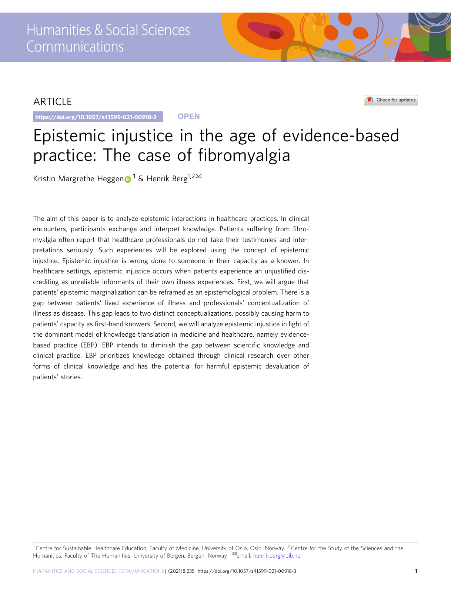
[https://doi.org/10.1057/s41599-021-00918-3](https://doi.org/10.1057/s41599-021-00918-3) **OPEN**
Kristin Margrethe Heggen 1 & Henrik Berg 1,2✉
The aim of this paper is to analyze epistemic interactions in healthcare practices. In clinical encounters, participants exchange and interpret knowledge. Patients suffering from fibromyalgia often report that healthcare professionals do not take their testimonies and inter- 1234567890():,;pretations seriously. Such experiences will be explored using the concept of epistemic injustice. Epistemic injustice is wrong done to someone in their capacity as a knower. In healthcare settings, epistemic injustice occurs when patients experience an unjustified dis- crediting as unreliable informants of their own illness experiences. First, we will argue that patients’ epistemic marginalization can be reframed as an epistemological problem. There is a gap between patients’ lived experience of illness and professionals’ conceptualization of illness as disease. This gap leads to two distinct conceptualizations, possibly causing harm to patients’ capacity as first-hand knowers. Second, we will analyze epistemic injustice in light of the dominant model of knowledge translation in medicine and healthcare, namely evidence-based practice (EBP). EBP intends to diminish the gap between scientific knowledge and clinical practice. EBP prioritizes knowledge obtained through clinical research over other forms of clinical knowledge and has the potential for harmful epistemic devaluation of patients’ stories.
1 Centre for Sustainable Healthcare Education, Faculty of Medicine, University of Oslo, Oslo, Norway.2Centre for the Study of the Sciences and the Humanities, Faculty of The Humanities, University of Bergen, Bergen, Norway. ✉email: henrik.berg@uib.no
HUMANITIES AND SOCIAL SCIENCES COMMUNICATIONS | (2021) 8:235 | [https://doi.org/10.1057/s41599-021-00918-3](https://doi.org/10.1057/s41599-021-00918-3)
PENDING — the worker run has not reached this page yet. Re-run make_review.py as the run progresses to fill it in.
PENDING — the worker run has not reached this page yet. Re-run make_review.py as the run progresses to fill it in.
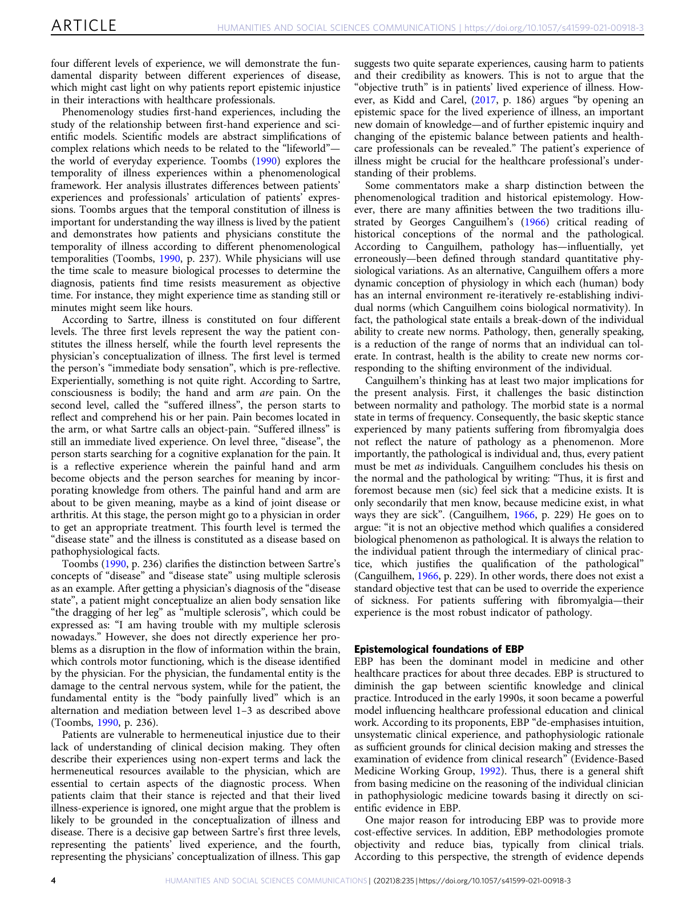
four different levels of experience, we will demonstrate the fundamental disparity between different experiences of disease, which might cast light on why patients report epistemic injustice in their interactions with healthcare professionals. Phenomenology studies first-hand experiences, including the study of the relationship between first-hand experience and scientific models. Scientific models are abstract simplifications of complex relations which needs to be related to the “lifeworld”— the world of everyday experience. Toombs (1990) explores the temporality of illness experiences within a phenomenological framework. Her analysis illustrates differences between patients’ experiences and professionals’ articulation of patients’ expres- sions. Toombs argues that the temporal constitution of illness is important for understanding the way illness is lived by the patient and demonstrates how patients and physicians constitute the temporality of illness according to different phenomenological temporalities (Toombs, 1990, p. 237). While physicians will use the time scale to measure biological processes to determine the diagnosis, patients find time resists measurement as objective time. For instance, they might experience time as standing still or minutes might seem like hours. According to Sartre, illness is constituted on four different levels. The three first levels represent the way the patient con- stitutes the illness herself, while the fourth level represents the physician’s conceptualization of illness. The first level is termed the person’s “immediate body sensation”, which is pre-reflective. Experientially, something is not quite right. According to Sartre, consciousness is bodily; the hand and arm are pain. On the second level, called the “suffered illness”, the person starts to reflect and comprehend his or her pain. Pain becomes located in the arm, or what Sartre calls an object-pain. “Suffered illness” is still an immediate lived experience. On level three, “disease”, the person starts searching for a cognitive explanation for the pain. It is a reflective experience wherein the painful hand and arm become objects and the person searches for meaning by incor- porating knowledge from others. The painful hand and arm are about to be given meaning, maybe as a kind of joint disease or arthritis. At this stage, the person might go to a physician in order to get an appropriate treatment. This fourth level is termed the “disease state” and the illness is constituted as a disease based on pathophysiological facts. Toombs (1990, p. 236) clarifies the distinction between Sartre’s concepts of “disease” and “disease state” using multiple sclerosis as an example. After getting a physician’s diagnosis of the “disease state”, a patient might conceptualize an alien body sensation like “the dragging of her leg” as “multiple sclerosis”, which could be expressed as: “I am having trouble with my multiple sclerosis nowadays.” However, she does not directly experience her problems as a disruption in the flow of information within the brain, which controls motor functioning, which is the disease identified by the physician. For the physician, the fundamental entity is the damage to the central nervous system, while for the patient, the fundamental entity is the “body painfully lived” which is an alternation and mediation between level 1–3 as described above (Toombs, 1990, p. 236). Patients are vulnerable to hermeneutical injustice due to their lack of understanding of clinical decision making. They often describe their experiences using non-expert terms and lack the hermeneutical resources available to the physician, which are essential to certain aspects of the diagnostic process. When patients claim that their stance is rejected and that their lived illness-experience is ignored, one might argue that the problem is likely to be grounded in the conceptualization of illness and disease. There is a decisive gap between Sartre’s first three levels, representing the patients’ lived experience, and the fourth, representing the physicians’ conceptualization of illness. This gap
suggests two quite separate experiences, causing harm to patients and their credibility as knowers. This is not to argue that the “objective truth” is in patients’ lived experience of illness. However, as Kidd and Carel, (2017, p. 186) argues “by opening an epistemic space for the lived experience of illness, an important new domain of knowledge—and of further epistemic inquiry and changing of the epistemic balance between patients and healthcare professionals can be revealed.” The patient’s experience of illness might be crucial for the healthcare professional’s understanding of their problems. Some commentators make a sharp distinction between the phenomenological tradition and historical epistemology. However, there are many affinities between the two traditions illu- strated by Georges Canguilhem’s(1966) critical reading of historical conceptions of the normal and the pathological. According to Canguilhem, pathology has—influentially, yet erroneously—been defined through standard quantitative phy- siological variations. As an alternative, Canguilhem offers a more dynamic conception of physiology in which each (human) body has an internal environment re-iteratively re-establishing individual norms (which Canguilhem coins biological normativity). In fact, the pathological state entails a break-down of the individual ability to create new norms. Pathology, then, generally speaking, is a reduction of the range of norms that an individual can tol- erate. In contrast, health is the ability to create new norms cor- responding to the shifting environment of the individual. Canguilhem’s thinking has at least two major implications for the present analysis. First, it challenges the basic distinction between normality and pathology. The morbid state is a normal state in terms of frequency. Consequently, the basic skeptic stance experienced by many patients suffering from fibromyalgia does not reflect the nature of pathology as a phenomenon. More importantly, the pathological is individual and, thus, every patient must be met as individuals. Canguilhem concludes his thesis on the normal and the pathological by writing: “Thus, it is first and foremost because men (sic) feel sick that a medicine exists. It is only secondarily that men know, because medicine exist, in what ways they are sick”. (Canguilhem, 1966, p. 229) He goes on to argue: “it is not an objective method which qualifies a considered biological phenomenon as pathological. It is always the relation to the individual patient through the intermediary of clinical practice, which justifies the qualification of the pathological” (Canguilhem, 1966, p. 229). In other words, there does not exist a standard objective test that can be used to override the experience of sickness. For patients suffering with fibromyalgia—their experience is the most robust indicator of pathology.
Epistemological foundations of EBP EBP has been the dominant model in medicine and other healthcare practices for about three decades. EBP is structured to diminish the gap between scientific knowledge and clinical practice. Introduced in the early 1990s, it soon became a powerful model influencing healthcare professional education and clinical work. According to its proponents, EBP “de-emphasises intuition, unsystematic clinical experience, and pathophysiologic rationale as sufficient grounds for clinical decision making and stresses the examination of evidence from clinical research” (Evidence-Based Medicine Working Group, 1992). Thus, there is a general shift from basing medicine on the reasoning of the individual clinician in pathophysiologic medicine towards basing it directly on scientific evidence in EBP. One major reason for introducing EBP was to provide more cost-effective services. In addition, EBP methodologies promote objectivity and reduce bias, typically from clinical trials. According to this perspective, the strength of evidence depends
HUMANITIES AND SOCIAL SCIENCES COMMUNICATIONS | (2021) 8:235 | [https://doi.org/10.1057/s41599-021-00918-3](https://doi.org/10.1057/s41599-021-00918-3)
PENDING — the worker run has not reached this page yet. Re-run make_review.py as the run progresses to fill it in.
PENDING — the worker run has not reached this page yet. Re-run make_review.py as the run progresses to fill it in.
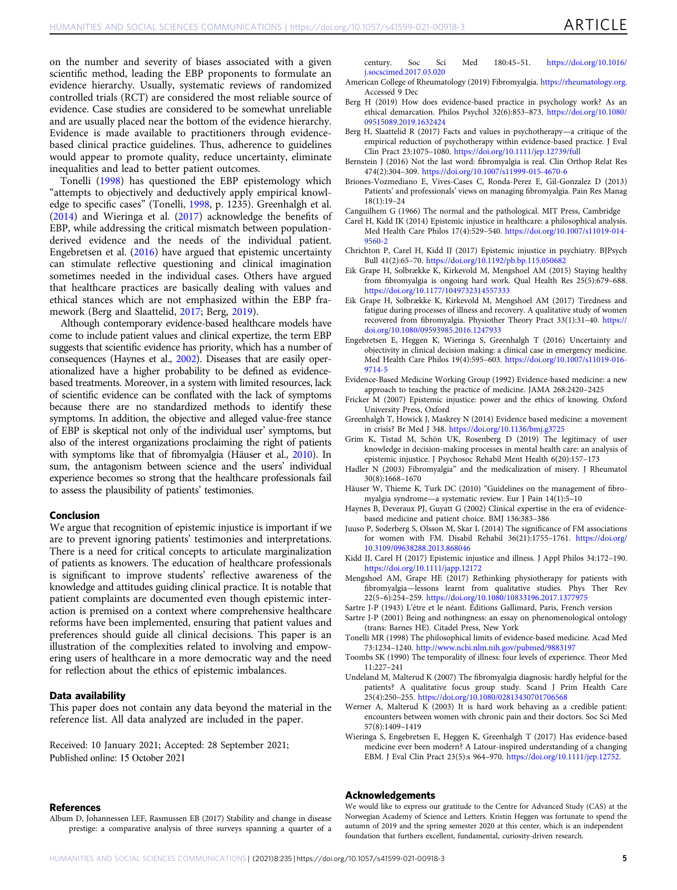
<u>HUMANITIES AND SOCIAL SCIENCES COMMUNICATIONS | [https://doi.org/10.1057/s41599-021-00918-3](https://doi.org/10.1057/s41599-021-00918-3) ARTICLE</u>
on the number and severity of biases associated with a given scientific method, leading the EBP proponents to formulate an evidence hierarchy. Usually, systematic reviews of randomized controlled trials (RCT) are considered the most reliable source of evidence. Case studies are considered to be somewhat unreliable and are usually placed near the bottom of the evidence hierarchy. Evidence is made available to practitioners through evidence-based clinical practice guidelines. Thus, adherence to guidelines would appear to promote quality, reduce uncertainty, eliminate inequalities and lead to better patient outcomes. Tonelli (1998) has questioned the EBP epistemology which “attempts to objectively and deductively apply empirical knowledge to specific cases” (Tonelli, 1998, p. 1235). Greenhalgh et al. (2014) and Wieringa et al. (2017) acknowledge the benefits of EBP, while addressing the critical mismatch between population- derived evidence and the needs of the individual patient. Engebretsen et al. (2016) have argued that epistemic uncertainty can stimulate reflective questioning and clinical imagination sometimes needed in the individual cases. Others have argued that healthcare practices are basically dealing with values and ethical stances which are not emphasized within the EBP fra- mework (Berg and Slaattelid, 2017; Berg, 2019). Although contemporary evidence-based healthcare models have come to include patient values and clinical expertize, the term EBP suggests that scientific evidence has priority, which has a number of consequences (Haynes et al., 2002). Diseases that are easily oper- ationalized have a higher probability to be defined as evidence-based treatments. Moreover, in a system with limited resources, lack of scientific evidence can be conflated with the lack of symptoms because there are no standardized methods to identify these symptoms. In addition, the objective and alleged value-free stance of EBP is skeptical not only of the individual user’ symptoms, but also of the interest organizations proclaiming the right of patients with symptoms like that of fibromyalgia (Häuser et al., 2010). In sum, the antagonism between science and the users’ individual experience becomes so strong that the healthcare professionals fail to assess the plausibility of patients’ testimonies.
Conclusion We argue that recognition of epistemic injustice is important if we are to prevent ignoring patients’ testimonies and interpretations. There is a need for critical concepts to articulate marginalization of patients as knowers. The education of healthcare professionals is significant to improve students’ reflective awareness of the knowledge and attitudes guiding clinical practice. It is notable that patient complaints are documented even though epistemic inter- action is premised on a context where comprehensive healthcare reforms have been implemented, ensuring that patient values and preferences should guide all clinical decisions. This paper is an illustration of the complexities related to involving and empow- ering users of healthcare in a more democratic way and the need for reflection about the ethics of epistemic imbalances.
Data availability This paper does not contain any data beyond the material in the reference list. All data analyzed are included in the paper.
century. Soc Sci Med 180:45–51. [https://doi.org/10.1016/](https://doi.org/10.1016/)
j.socscimed.2017.03.020
American College of Rheumatology (2019) Fibromyalgia. [https://rheumatology.org](https://rheumatology.org). Accessed 9 Dec Berg H (2019) How does evidence-based practice in psychology work? As an ethical demarcation. Philos Psychol 32(6):853–873. [https://doi.org/10.1080/](https://doi.org/10.1080/) 09515089.2019.1632424 Berg H, Slaattelid R (2017) Facts and values in psychotherapy—a critique of the empirical reduction of psychotherapy within evidence-based practice. J Eval Clin Pract 23:1075–1080. [https://doi.org/10.1111/jep.12739/full](https://doi.org/10.1111/jep.12739/full) Bernstein J (2016) Not the last word: fibromyalgia is real. Clin Orthop Relat Res 474(2):304–309. [https://doi.org/10.1007/s11999-015-4670-6](https://doi.org/10.1007/s11999-015-4670-6) Briones-Vozmediano E, Vives-Cases C, Ronda-Perez E, Gil-Gonzalez D (2013) Patients’ and professionals’ views on managing fibromyalgia. Pain Res Manag 18(1):19–24 Canguilhem G (1966) The normal and the pathological. MIT Press, Cambridge Carel H, Kidd IK (2014) Epistemic injustice in healthcare: a philosophical analysis. Med Health Care Philos 17(4):529–540. [https://doi.org/10.1007/s11019-014-](https://doi.org/10.1007/s11019-014-) 9560-2 Chrichton P, Carel H, Kidd IJ (2017) Epistemic injustice in psychiatry. BJPsych Bull 41(2):65–70. [https://doi.org/10.1192/pb.bp.115.050682](https://doi.org/10.1192/pb.bp.115.050682) Eik Grape H, Solbrække K, Kirkevold M, Mengshoel AM (2015) Staying healthy from fibromyalgia is ongoing hard work. Qual Health Res 25(5):679–688. [https://doi.org/10.1177/1049732314557333](https://doi.org/10.1177/1049732314557333) Eik Grape H, Solbrække K, Kirkevold M, Mengshoel AM (2017) Tiredness and fatigue during processes of illness and recovery. A qualitative study of women recovered from fibromyalgia. Physiother Theory Pract 33(1):31–40. https:// doi.org/10.1080/09593985.2016.1247933 Engebretsen E, Heggen K, Wieringa S, Greenhalgh T (2016) Uncertainty and objectivity in clinical decision making: a clinical case in emergency medicine. Med Health Care Philos 19(4):595–603. [https://doi.org/10.1007/s11019-016-](https://doi.org/10.1007/s11019-016-) 9714-5 Evidence-Based Medicine Working Group (1992) Evidence-based medicine: a new approach to teaching the practice of medicine. JAMA 268:2420–2425 Fricker M (2007) Epistemic injustice: power and the ethics of knowing. Oxford University Press, Oxford Greenhalgh T, Howick J, Maskrey N (2014) Evidence based medicine: a movement in crisis? Br Med J 348. [https://doi.org/10.1136/bmj.g3725](https://doi.org/10.1136/bmj.g3725) Grim K, Tistad M, Schön UK, Rosenberg D (2019) The legitimacy of user knowledge in decision-making processes in mental health care: an analysis of epistemic injustice. J Psychosoc Rehabil Ment Health 6(20):157–173 Hadler N (2003) Fibromyalgia” and the medicalization of misery. J Rheumatol 30(8):1668–1670 Häuser W, Thieme K, Turk DC (2010) “Guidelines on the management of fibromyalgia syndrome—a systematic review. Eur J Pain 14(1):5–10 Haynes B, Deveraux PJ, Guyatt G (2002) Clinical expertise in the era of evidence-based medicine and patient choice. BMJ 136:383–386 Juuso P, Soderberg S, Olsson M, Skar L (2014) The significance of FM associations for women with FM. Disabil Rehabil 36(21):1755–1761. [https://doi.org/](https://doi.org/)
10.3109/09638288.2013.868046
Kidd IJ, Carel H (2017) Epistemic injustice and illness. J Appl Philos 34:172 [https://doi.org/10.1111/japp.12172](https://doi.org/10.1111/japp.12172) –190.
Mengshoel AM, Grape HE (2017) Rethinking physiotherapy for patients with fibromyalgia—lessons learnt from qualitative studies. Phys Ther Rev 22(5–6):254–259. [https://doi.org/10.1080/10833196.2017.1377975](https://doi.org/10.1080/10833196.2017.1377975) Sartre J-P (1943) L’étre et le néant. Éditions Gallimard, Paris, French version Sartre J-P (2001) Being and nothingness: an essay on phenomenological ontology (trans: Barnes HE). Citadel Press, New York Tonelli MR (1998) The philosophical limits of evidence-based medicine. Acad Med 73:1234–1240. [http://www.ncbi.nlm.nih.gov/pubmed/9883197](http://www.ncbi.nlm.nih.gov/pubmed/9883197) Toombs SK (1990) The temporality of illness: four levels of experience. Theor Med 11:227–241 Undeland M, Malterud K (2007) The fibromyalgia diagnosis: hardly helpful for the patients? A qualitative focus group study. Scand J Prim Health Care 25(4):250–255. [https://doi.org/10.1080/02813430701706568](https://doi.org/10.1080/02813430701706568) Werner A, Malterud K (2003) It is hard work behaving as a credible patient: encounters between women with chronic pain and their doctors. Soc Sci Med 57(8):1409–1419 Wieringa S, Engebretsen E, Heggen K, Greenhalgh T (2017) Has evidence-based medicine ever been modern? A Latour-inspired understanding of a changing EBM. J Eval Clin Pract 23(5):s 964–970. [https://doi.org/10.1111/jep.12752](https://doi.org/10.1111/jep.12752).
References Album D, Johannessen LEF, Rasmussen EB (2017) Stability and change in disease prestige: a comparative analysis of three surveys spanning a quarter of a
Acknowledgements We would like to express our gratitude to the Centre for Advanced Study (CAS) at the Norwegian Academy of Science and Letters. Kristin Heggen was fortunate to spend the autumn of 2019 and the spring semester 2020 at this center, which is an independent foundation that furthers excellent, fundamental, curiosity-driven research.
HUMANITIES AND SOCIAL SCIENCES COMMUNICATIONS | (2021) 8:235 | [https://doi.org/10.1057/s41599-021-00918-3](https://doi.org/10.1057/s41599-021-00918-3)
PENDING — the worker run has not reached this page yet. Re-run make_review.py as the run progresses to fill it in.
PENDING — the worker run has not reached this page yet. Re-run make_review.py as the run progresses to fill it in.
Competing interests Open Access This article is licensed under a Creative Commons The authors declare no competing interests. Attribution 4.0 International License, which permits use, sharing, adaptation, distribution and reproduction in any medium or format, as long as you give appropriate credit to the original author(s) and the source, provide a link to the Creative Additional information Commons license, and indicate if changes were made. The images or other third party Correspondence and requests for materials should be addressed to Henrik Berg. material in this article are included in the article’s Creative Commons license, unless indicated otherwise in a credit line to the material. If material is not included in the Reprints and permission information is available at [http://www.nature.com/reprints](http://www.nature.com/reprints) article’s Creative Commons license and your intended use is not permitted by statutory Publisher’s note Springer Nature remains neutral with regard to jurisdictional claims in regulation or exceeds the permitted use, you will need to obtain permission directly from published maps and institutional affiliations. the copyright holder. To view a copy of this license, visit [http://creativecommons.org/](http://creativecommons.org/) licenses/by/4.0/.
© The Author(s) 2021
HUMANITIES AND SOCIAL SCIENCES COMMUNICATIONS | (2021) 8:235 | [https://doi.org/10.1057/s41599-021-00918-3](https://doi.org/10.1057/s41599-021-00918-3)
PENDING — the worker run has not reached this page yet. Re-run make_review.py as the run progresses to fill it in.
PENDING — the worker run has not reached this page yet. Re-run make_review.py as the run progresses to fill it in.
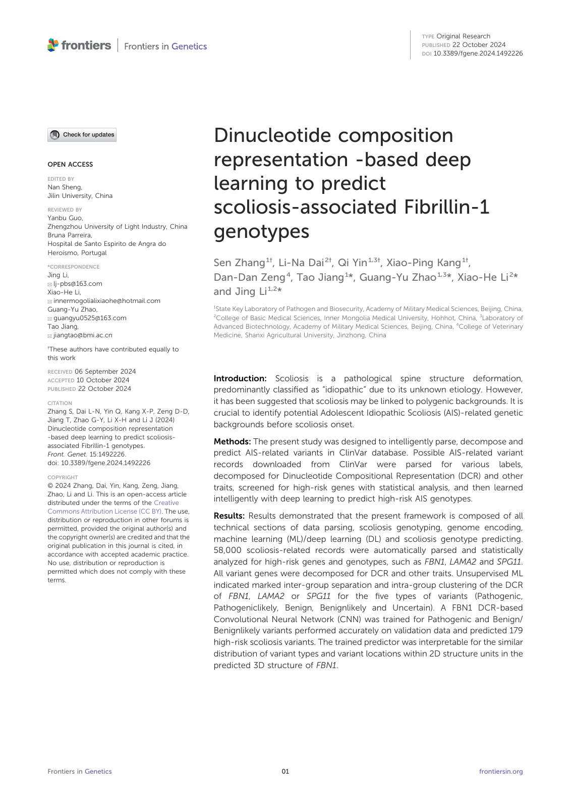
TYPE Original Research PUBLISHED 22 October 2024 DOI 10.3389/fgene.2024.1492226
genotypes
1† 2† 1,3† 1† Sen Zhang, Li-Na Dai, Qi Yin, Xiao-Ping Kang, 1,3 Dan-Dan Zeng⁴, Tao Jiang¹*, Guang-Yu Zhao *, Xiao-He Li²* 1,2 and Jing Li * 1 State Key Laboratory of Pathogen and Biosecurity, Academy of Military Medical Sciences, Beijing, China, 2 College of Basic Medical Sciences, Inner Mongolia Medical University, Hohhot, China,3Laboratory of Advanced Biotechnology, Academy of Military Medical Sciences, Beijing, China,4College of Veterinary Medicine, Shanxi Agricultural University, Jinzhong, China
OPEN ACCESS EDITED BY Nan Sheng, Jilin University, China REVIEWED BY Yanbu Guo, Zhengzhou University of Light Industry, China Bruna Parreira, Hospital de Santo Espirito de Angra do Heroísmo, Portugal *CORRESPONDENCE Jing Li, lj-pbs@163.com Xiao-He Li, innermogolialixiaohe@hotmail.com Guang-Yu Zhao, guangyu0525@163.com Tao Jiang, jiangtao@bmi.ac.cn † These authors have contributed equally to this work RECEIVED 06 September 2024 ACCEPTED 10 October 2024 PUBLISHED 22 October 2024 CITATION Zhang S, Dai L-N, Yin Q, Kang X-P, Zeng D-D, Jiang T, Zhao G-Y, Li X-H and Li J (2024) Dinucleotide composition representation -based deep learning to predict scoliosis-associated Fibrillin-1 genotypes. Front. Genet. 15:1492226. doi: 10.3389/fgene.2024.1492226 COPYRIGHT © 2024 Zhang, Dai, Yin, Kang, Zeng, Jiang, Zhao, Li and Li. This is an open-access article distributed under the terms of the Creative Commons Attribution License (CC BY). The use, distribution or reproduction in other forums is permitted, provided the original author(s) and the copyright owner(s) are credited and that the original publication in this journal is cited, in accordance with accepted academic practice. No use, distribution or reproduction is permitted which does not comply with these terms.
Introduction: Scoliosis is a pathological spine structure deformation, predominantly classified as “idiopathic” due to its unknown etiology. However, it has been suggested that scoliosis may be linked to polygenic backgrounds. It is crucial to identify potential Adolescent Idiopathic Scoliosis (AIS)-related genetic backgrounds before scoliosis onset.
Methods: The present study was designed to intelligently parse, decompose and predict AIS-related variants in ClinVar database. Possible AIS-related variant records downloaded from ClinVar were parsed for various labels, decomposed for Dinucleotide Compositional Representation (DCR) and other traits, screened for high-risk genes with statistical analysis, and then learned intelligently with deep learning to predict high-risk AIS genotypes.
Results: Results demonstrated that the present framework is composed of all technical sections of data parsing, scoliosis genotyping, genome encoding, machine learning (ML)/deep learning (DL) and scoliosis genotype predicting. 58,000 scoliosis-related records were automatically parsed and statistically analyzed for high-risk genes and genotypes, such as FBN1, LAMA2 and SPG11. All variant genes were decomposed for DCR and other traits. Unsupervised ML indicated marked inter-group separation and intra-group clustering of the DCR of FBN1, LAMA2 or SPG11 for the five types of variants (Pathogenic, Pathogeniclikely, Benign, Benignlikely and Uncertain). A FBN1 DCR-based Convolutional Neural Network (CNN) was trained for Pathogenic and Benign/ Benignlikely variants performed accurately on validation data and predicted 179 high-risk scoliosis variants. The trained predictor was interpretable for the similar distribution of variant types and variant locations within 2D structure units in the predicted 3D structure of FBN1.
Frontiers in Genetics frontiersin.org
PENDING — the worker run has not reached this page yet. Re-run make_review.py as the run progresses to fill it in.
PENDING — the worker run has not reached this page yet. Re-run make_review.py as the run progresses to fill it in.
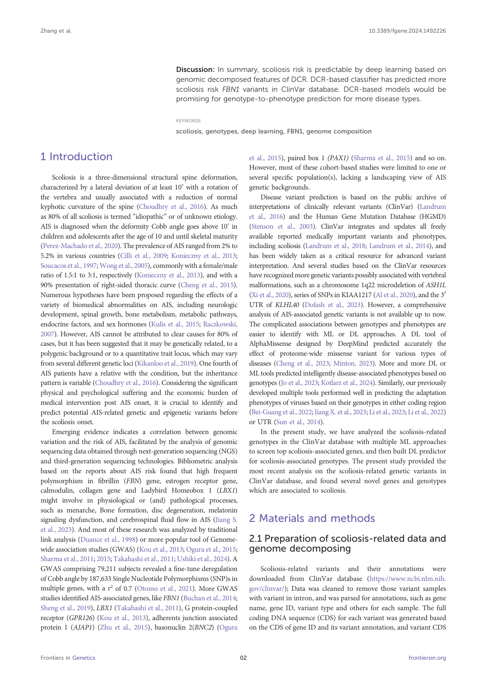
Zhang et al.
10.3389/fgene.2024.1492226
Discussion: In summary, scoliosis risk is predictable by deep learning based on genomic decomposed features of DCR. DCR-based classifier has predicted more scoliosis risk FBN1 variants in ClinVar database. DCR-based models would be promising for genotype-to-phenotype prediction for more disease types.
KEYWORDS scoliosis, genotypes, deep learning, FBN1, genome composition
Scoliosis is a three-dimensional structural spine deformation, characterized by a lateral deviation of at least 10°with a rotation of the vertebra and usually associated with a reduction of normal kyphotic curvature of the spine (Choudhry et al., 2016). As much as 80% of all scoliosis is termed “idiopathic” or of unknown etiology. AIS is diagnosed when the deformity Cobb angle goes above 10°in children and adolescents after the age of 10 and until skeletal maturity (Perez-Machado et al., 2020). The prevalence of AIS ranged from 2% to
5.2% in various countries (Cilli et al., 2009; Konieczny et al., 2013; Soucacos et al., 1997; Wong et al., 2005), commonly with a female/male ratio of 1.5:1 to 3:1, respectively (Konieczny et al., 2013), and with a 90% presentation of right-sided thoracic curve (Cheng et al., 2015). Numerous hypotheses have been proposed regarding the effects of a variety of biomedical abnormalities on AIS, including neurologic development, spinal growth, bone metabolism, metabolic pathways, endocrine factors, and sex hormones (Kulis et al., 2015; Raczkowski,
2007). However, AIS cannot be attributed to clear causes for 80% of cases, but it has been suggested that it may be genetically related, to a polygenic background or to a quantitative trait locus, which may vary from several different genetic loci (Kikanloo et al., 2019). One fourth of AIS patients have a relative with the condition, but the inheritance pattern is variable (Choudhry et al., 2016). Considering the significant physical and psychological suffering and the economic burden of medical intervention post AIS onset, it is crucial to identify and predict potential AIS-related genetic and epigenetic variants before the scoliosis onset. Emerging evidence indicates a correlation between genomic variation and the risk of AIS, facilitated by the analysis of genomic sequencing data obtained through next-generation sequencing (NGS) and third-generation sequencing technologies. Bibliometric analysis based on the reports about AIS risk found that high frequent polymorphism in fibrillin (FBN) gene, estrogen receptor gene, calmodulin, collagen gene and Ladybird Homeobox 1 (LBX1) might involve in physiological or (and) pathological processes, such as menarche, Bone formation, disc degeneration, melatonin signaling dysfunction, and cerebrospinal fluid flow in AIS (Jiang S. et al., 2023). And most of these research was analyzed by traditional link analysis (Duance et al., 1998) or more popular tool of Genome-wide association studies (GWAS) (Kou et al., 2013; Ogura et al., 2015; Sharma et al., 2011; 2015; Takahashi et al., 2011; Ushiki et al., 2024). A GWAS comprising 79,211 subjects revealed a fine-tune deregulation of Cobb angle by 187,633 Single Nucleotide Polymorphisms (SNP)s in multiple genes, with a r² of 0.7 (Otomo et al., 2021). More GWAS studies identified AIS-associated genes, like FBN1 (Buchan et al., 2014; Sheng et al., 2019), LBX1 (Takahashi et al., 2011), G protein-coupled receptor (GPR126)(Kou et al., 2013), adherents junction associated protein 1 (AJAP1)(Zhu et al., 2015), basonuclin 2(BNC2)(Ogura
et al., 2015), paired box 1 (PAX1) (Sharma et al., 2015) and so on. However, most of these cohort-based studies were limited to one or several specific population(s), lacking a landscaping view of AIS genetic backgrounds. Disease variant prediction is based on the public archive of interpretations of clinically relevant variants (ClinVar) (Landrum et al., 2016) and the Human Gene Mutation Database (HGMD) (Stenson et al., 2003). ClinVar integrates and updates all freely available reported medically important variants and phenotypes, including scoliosis (Landrum et al., 2018; Landrum et al., 2014), and has been widely taken as a critical resource for advanced variant interpretation. And several studies based on the ClinVar resources have recognized more genetic variants possibly associated with vertebral malformations, such as a chromosome 1q22 microdeletion of ASH1L (Xi et al., 2020), series of SNPs in KIAA1217 (Al et al., 2020), and the 3′ UTR of KLHL40 (Dofash et al., 2023). However, a comprehensive analysis of AIS-associated genetic variants is not available up to now. The complicated associations between genotypes and phenotypes are easier to identify with ML or DL approaches. A DL tool of AlphaMissense designed by DeepMind predicted accurately the effect of proteome-wide missense variant for various types of diseases (Cheng et al., 2023; Minton, 2023). More and more DL or ML tools predicted intelligently disease-associated phenotypes based on genotypes (Jo et al., 2023; Kotlarz et al., 2024). Similarly, our previously developed multiple tools performed well in predicting the adaptation phenotypes of viruses based on their genotypes in either coding region (Bei-Guang et al., 2022; JiangX.etal.,2023; Li et al., 2023; Li et al., 2022) or UTR (Sun et al., 2014). In the present study, we have analyzed the scoliosis-related genotypes in the ClinVar database with multiple ML approaches to screen top scoliosis-associated genes, and then built DL predictor for scoliosis-associated genotypes. The present study provided the most recent analysis on the scoliosis-related genetic variants in ClinVar database, and found several novel genes and genotypes which are associated to scoliosis.
2.1 Preparation of scoliosis-related data and genome decomposing Scoliosis-related variants and their annotations were downloaded from ClinVar database ([https://www.ncbi.nlm.nih](https://www.ncbi.nlm.nih). gov/clinvar/); Data was cleaned to remove those variant samples with variant in intron, and was parsed for annotations, such as gene name, gene ID, variant type and others for each sample. The full coding DNA sequence (CDS) for each variant was generated based on the CDS of gene ID and its variant annotation, and variant CDS
Frontiers in Genetics frontiersin.org
PENDING — the worker run has not reached this page yet. Re-run make_review.py as the run progresses to fill it in.
PENDING — the worker run has not reached this page yet. Re-run make_review.py as the run progresses to fill it in.
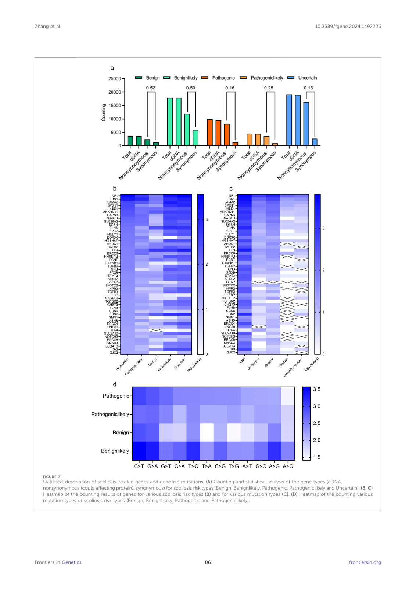
Zhang et al. 10.3389/fgene.2024.1492226
FIGURE 2
Statistical description of scoliosis-related genes and genomic mutations. (A) Counting and statistical analysis of the gene types (cDNA, nonsynonymous (could affecting protein), synonymous) for scoliosis risk types (Benign, Benignlikely, Pathogenic, Pathogeniclikely and Uncertain). (B, C) Heatmap of the counting results of genes for various scoliosis risk types (B) and for various mutation types (C). (D) Heatmap of the counting various mutation types of scoliosis risk types (Benign, Benignlikely, Pathogenic and Pathogeniclikely).
Frontiers in Genetics frontiersin.org
PENDING — the worker run has not reached this page yet. Re-run make_review.py as the run progresses to fill it in.
PENDING — the worker run has not reached this page yet. Re-run make_review.py as the run progresses to fill it in.
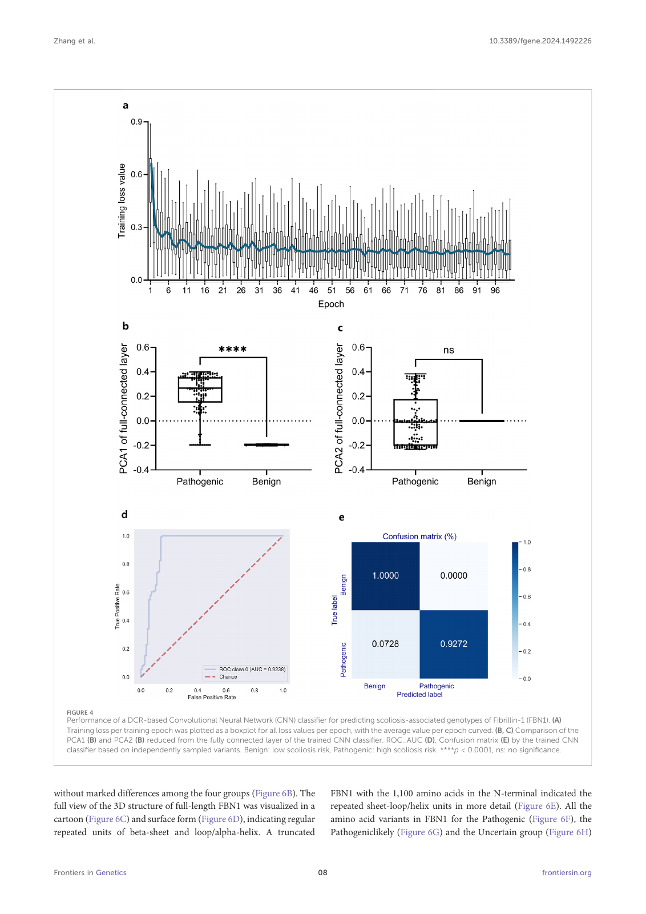
Zhang et al. 10.3389/fgene.2024.1492226
FIGURE 4
Performance of a DCR-based Convolutional Neural Network (CNN) classifier for predicting scoliosis-associated genotypes of Fibrillin-1 (FBN1). (A) Training loss per training epoch was plotted as a boxplot for all loss values per epoch, with the average value per epoch curved. (B, C) Comparison of the PCA1 (B) and PCA2 (B) reduced from the fully connected layer of the trained CNN classifier. ROC_AUC (D), Confusion matrix (E) by the trained CNN classifier based on independently sampled variants. Benign: low scoliosis risk, Pathogenic: high scoliosis risk. ****p < 0.0001, ns: no significance.
without marked differences among the four groups (Figure 6B). The FBN1 with the 1,100 amino acids in the N-terminal indicated the full view of the 3D structure of full-length FBN1 was visualized in a repeated sheet-loop/helix units in more detail (Figure 6E). All the cartoon (Figure 6C) and surface form (Figure 6D), indicating regular amino acid variants in FBN1 for the Pathogenic (Figure 6F), the repeated units of beta-sheet and loop/alpha-helix. A truncated Pathogeniclikely (Figure 6G) and the Uncertain group (Figure 6H)
Frontiers in Genetics frontiersin.org
PENDING — the worker run has not reached this page yet. Re-run make_review.py as the run progresses to fill it in.
PENDING — the worker run has not reached this page yet. Re-run make_review.py as the run progresses to fill it in.
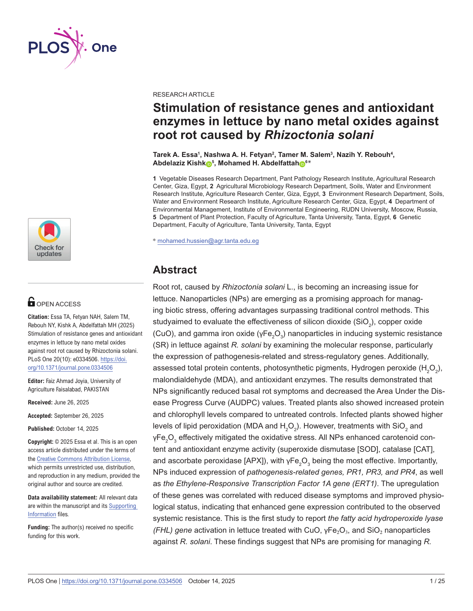
OPEN ACCESS **Citation:** Essa TA, Fetyan NAH, Salem TM, Rebouh NY, Kishk A, Abdelfattah MH (2025) Stimulation of resistance genes and antioxidant enzymes in lettuce by nano metal oxides against root rot caused by Rhizoctonia solani. PLoS One 20(10): e0334506. <u>[https://doi](https://doi).</u> <u>org/10.1371/journal.pone.0334506</u> **Editor:** Faiz Ahmad Joyia, University of Agriculture Faisalabad, PAKISTAN **Received:** June 26, 2025 **Accepted:** September 26, 2025 **Published:** October 14, 2025 **Copyright:** © 2025 Essa et al. This is an open access article distributed under the terms of the <u>Creative Commons Attribution License</u>, which permits unrestricted use, distribution, and reproduction in any medium, provided the original author and source are credited. **Data availability statement:** All relevant data are within the manuscript and its <u>Supporting</u> <u>Information</u> files. **Funding:** The author(s) received no specific funding for this work.
RESEARCH ARTICLE
**Tarek A. Essa¹, Nashwa A. H. Fetyan², Tamer M. Salem³, Nazih Y. Rebouh⁴,** **Abdelaziz Kishk5, Mohamed H. Abdelfattah6*** **1** Vegetable Diseases Research Department, Pant Pathology Research Institute, Agricultural Research Center, Giza, Egypt, **2** Agricultural Microbiology Research Department, Soils, Water and Environment Research Institute, Agriculture Research Center, Giza, Egypt, **3** Environment Research Department, Soils, Water and Environment Research Institute, Agriculture Research Center, Giza, Egypt, **4** Department of Environmental Management, Institute of Environmental Engineering, RUDN University, Moscow, Russia, **5** Department of Plant Protection, Faculty of Agriculture, Tanta University, Tanta, Egypt, **6** Genetic Department, Faculty of Agriculture, Tanta University, Tanta, Egypt
* <u>mohamed.hussien@agr.tanta.edu.eg</u>
Root rot, caused by *Rhizoctonia solani* L., is becoming an increasing issue for lettuce. Nanoparticles (NPs) are emerging as a promising approach for managing biotic stress, offering advantages surpassing traditional control methods. This studyaimed to evaluate the effectiveness of silicon dioxide (SiO₂), copper oxide (CuO), and gamma iron oxide (γFe₂O₃) nanoparticles in inducing systemic resistance (SR) in lettuce against *R. solani* by examining the molecular response, particularly the expression of pathogenesis-related and stress-regulatory genes. Additionally, assessed total protein contents, photosynthetic pigments, Hydrogen peroxide (H₂O₂), malondialdehyde (MDA), and antioxidant enzymes. The results demonstrated that NPs significantly reduced basal rot symptoms and decreased the Area Under the Disease Progress Curve (AUDPC) values. Treated plants also showed increased protein and chlorophyll levels compared to untreated controls. Infected plants showed higher levels of lipid peroxidation (MDA and H₂O₂). However, treatments with SiO₂ and γFe₂O₃ effectively mitigated the oxidative stress. All NPs enhanced carotenoid con- tent and antioxidant enzyme activity (superoxide dismutase [SOD], catalase [CAT], and ascorbate peroxidase [APX]), with γFe O being the most effective. Importantly, 2 3 NPs induced expression of *pathogenesis-related genes, PR1, PR3, and PR4*, as well as *the Ethylene-Responsive Transcription Factor 1A gene (ERT1)*. The upregulation of these genes was correlated with reduced disease symptoms and improved physio- logical status, indicating that enhanced gene expression contributed to the observed systemic resistance. This is the first study to report *the fatty acid hydroperoxide lyase* *(FHL) gene* activation in lettuce treated with CuO, γFe₂O₃, and SiO₂ nanoparticles against *R. solani*. These findings suggest that NPs are promising for managing *R.*
PLOS One | <u>[https://doi.org/10.1371/journal.pone.0334506](https://doi.org/10.1371/journal.pone.0334506)</u> October 14, 2025 1 / 25
PENDING — the worker run has not reached this page yet. Re-run make_review.py as the run progresses to fill it in.
PENDING — the worker run has not reached this page yet. Re-run make_review.py as the run progresses to fill it in.
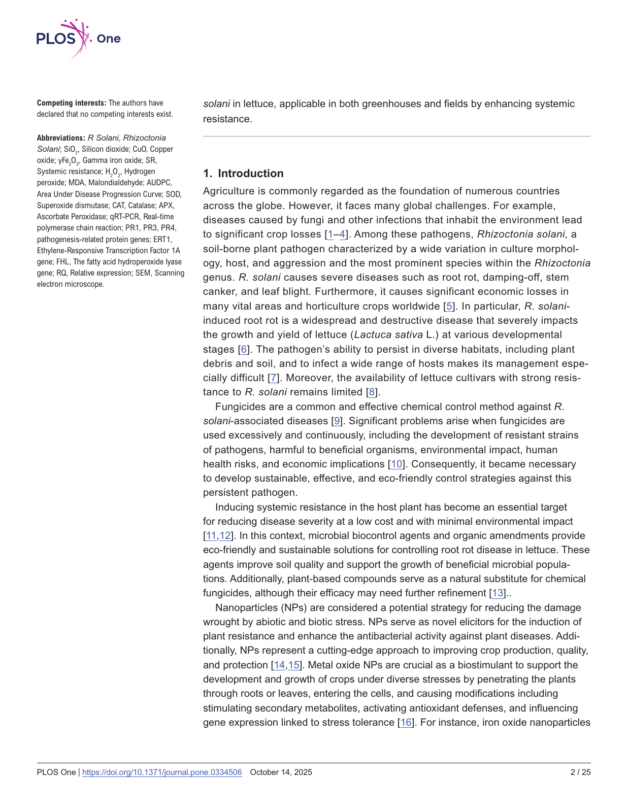
*solani* in lettuce, applicable in both greenhouses and fields by enhancing systemic resistance. **Competing interests:** The authors have declared that no competing interests exist.
**Abbreviations:** *R Solani, Rhizoctonia* *Solani*; SiO₂, Silicon dioxide; CuO, Copper oxide; γFe₂O₃, Gamma iron oxide; SR, Systemic resistance; H2O2, Hydrogen peroxide; MDA, Malondialdehyde; AUDPC, Area Under Disease Progression Curve; SOD, Superoxide dismutase; CAT, Catalase; APX, Ascorbate Peroxidase; qRT-PCR, Real-time polymerase chain reaction; PR1, PR3, PR4, pathogenesis-related protein genes; ERT1, Ethylene-Responsive Transcription Factor 1A gene; FHL, The fatty acid hydroperoxide lyase gene; RQ, Relative expression; SEM, Scanning electron microscope.
Agriculture is commonly regarded as the foundation of numerous countries across the globe. However, it faces many global challenges. For example, diseases caused by fungi and other infections that inhabit the environment lead to significant crop losses [<u>1</u>–<u>4</u>]. Among these pathogens, *Rhizoctonia solani*, a soil-borne plant pathogen characterized by a wide variation in culture morphol- ogy, host, and aggression and the most prominent species within the *Rhizoctonia* genus. *R. solani* causes severe diseases such as root rot, damping-off, stem canker, and leaf blight. Furthermore, it causes significant economic losses in many vital areas and horticulture crops worldwide [<u>5</u>]. In particular, *R. solani*- induced root rot is a widespread and destructive disease that severely impacts the growth and yield of lettuce (*Lactuca sativa* L.) at various developmental stages [<u>6</u>]. The pathogen’s ability to persist in diverse habitats, including plant debris and soil, and to infect a wide range of hosts makes its management espe- cially difficult [<u>7</u>]. Moreover, the availability of lettuce cultivars with strong resistance to *R. solani* remains limited [<u>8</u>]. Fungicides are a common and effective chemical control method against *R.* *solani*-associated diseases [<u>9</u>]. Significant problems arise when fungicides are used excessively and continuously, including the development of resistant strains of pathogens, harmful to beneficial organisms, environmental impact, human health risks, and economic implications [<u>10</u>]. Consequently, it became necessary to develop sustainable, effective, and eco-friendly control strategies against this persistent pathogen. Inducing systemic resistance in the host plant has become an essential target for reducing disease severity at a low cost and with minimal environmental impact [<u>11</u>,<u>12</u>]. In this context, microbial biocontrol agents and organic amendments provide eco-friendly and sustainable solutions for controlling root rot disease in lettuce. These agents improve soil quality and support the growth of beneficial microbial popula- tions. Additionally, plant-based compounds serve as a natural substitute for chemical fungicides, although their efficacy may need further refinement [<u>13</u>].. Nanoparticles (NPs) are considered a potential strategy for reducing the damage wrought by abiotic and biotic stress. NPs serve as novel elicitors for the induction of plant resistance and enhance the antibacterial activity against plant diseases. Additionally, NPs represent a cutting-edge approach to improving crop production, quality, and protection [<u>14</u>,<u>15</u>]. Metal oxide NPs are crucial as a biostimulant to support the development and growth of crops under diverse stresses by penetrating the plants through roots or leaves, entering the cells, and causing modifications including stimulating secondary metabolites, activating antioxidant defenses, and influencing gene expression linked to stress tolerance [<u>16</u>]. For instance, iron oxide nanoparticles
PLOS One | <u>[https://doi.org/10.1371/journal.pone.0334506](https://doi.org/10.1371/journal.pone.0334506)</u> October 14, 2025 2 / 25
PENDING — the worker run has not reached this page yet. Re-run make_review.py as the run progresses to fill it in.
PENDING — the worker run has not reached this page yet. Re-run make_review.py as the run progresses to fill it in.
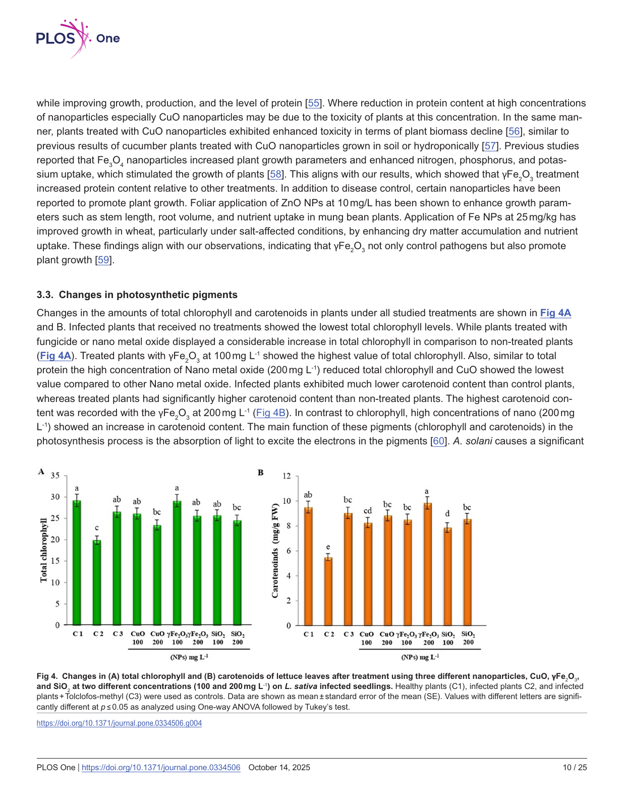
while improving growth, production, and the level of protein [<u>55</u>]. Where reduction in protein content at high concentrations of nanoparticles especially CuO nanoparticles may be due to the toxicity of plants at this concentration. In the same man- ner, plants treated with CuO nanoparticles exhibited enhanced toxicity in terms of plant biomass decline [<u>56</u>], similar to previous results of cucumber plants treated with CuO nanoparticles grown in soil or hydroponically [<u>57</u>]. Previous studies reported that Fe₃O₄ nanoparticles increased plant growth parameters and enhanced nitrogen, phosphorus, and potas- sium uptake, which stimulated the growth of plants [<u>58</u>]. This aligns with our results, which showed that γFe₂O₃ treatment increased protein content relative to other treatments. In addition to disease control, certain nanoparticles have been reported to promote plant growth. Foliar application of ZnO NPs at 10 mg/L has been shown to enhance growth parameters such as stem length, root volume, and nutrient uptake in mung bean plants. Application of Fe NPs at 25 mg/kg has improved growth in wheat, particularly under salt-affected conditions, by enhancing dry matter accumulation and nutrient uptake. These findings align with our observations, indicating that γFe₂O₃ not only control pathogens but also promote plant growth [<u>59</u>].
Changes in the amounts of total chlorophyll and carotenoids in plants under all studied treatments are shown in <u>Fig 4A</u> and B. Infected plants that received no treatments showed the lowest total chlorophyll levels. While plants treated with fungicide or nano metal oxide displayed a considerable increase in total chlorophyll in comparison to non-treated plants (<u>Fig 4A</u>). Treated plants with γFe₂O₃ at 100 mg L -1 showed the highest value of total chlorophyll. Also, similar to total protein the high concentration of Nano metal oxide (200 mg L -1 ) reduced total chlorophyll and CuO showed the lowest value compared to other Nano metal oxide. Infected plants exhibited much lower carotenoid content than control plants, whereas treated plants had significantly higher carotenoid content than non-treated plants. The highest carotenoid content was recorded with the γFe₂O₃ at 200 mg L -1 (<u>Fig 4B</u>). In contrast to chlorophyll, high concentrations of nano (200 mg L -1 ) showed an increase in carotenoid content. The main function of these pigments (chlorophyll and carotenoids) in the photosynthesis process is the absorption of light to excite the electrons in the pigments [<u>60</u>]. *A. solani* causes a significant
**Fig 4. Changes in (A) total chlorophyll and (B) carotenoids of lettuce leaves after treatment using three different nanoparticles, CuO, γFe₂O₃,**
**and SiO₂ at two different concentrations (100 and 200 mg L**-1**) on *L*. *sativa* infected seedlings.** Healthy plants (C1), infected plants C2, and infected plants + Tolclofos-methyl (C3) were used as controls. Data are shown as mean ± standard error of the mean (SE). Values with different letters are signifi- <u>cantly different at p≤ 0.05 as analyzed using One-way ANOVA followed by Tukey’s test.</u> <u>[https://doi.org/10.1371/journal.pone.0334506.g004](https://doi.org/10.1371/journal.pone.0334506.g004)</u>
PLOS One | <u>[https://doi.org/10.1371/journal.pone.0334506](https://doi.org/10.1371/journal.pone.0334506)</u> October 14, 2025 10 / 25
PENDING — the worker run has not reached this page yet. Re-run make_review.py as the run progresses to fill it in.
PENDING — the worker run has not reached this page yet. Re-run make_review.py as the run progresses to fill it in.
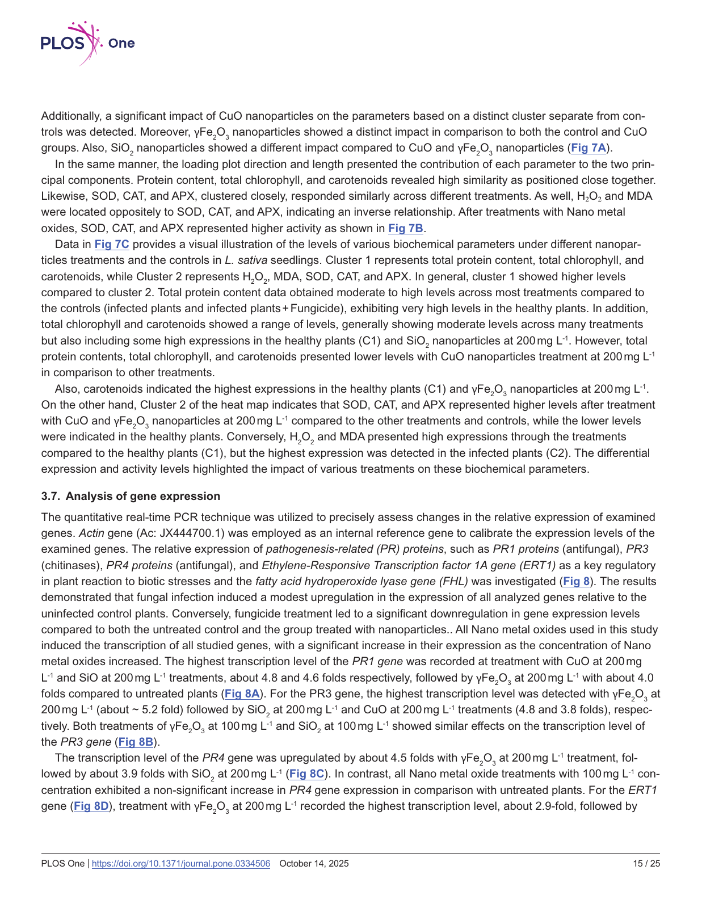
Additionally, a significant impact of CuO nanoparticles on the parameters based on a distinct cluster separate from controls was detected. Moreover, γFe₂O₃ nanoparticles showed a distinct impact in comparison to both the control and CuO groups. Also, SiO₂ nanoparticles showed a different impact compared to CuO and γFe₂O₃ nanoparticles (<u>Fig 7A</u>). In the same manner, the loading plot direction and length presented the contribution of each parameter to the two prin- cipal components. Protein content, total chlorophyll, and carotenoids revealed high similarity as positioned close together. Likewise, SOD, CAT, and APX, clustered closely, responded similarly across different treatments. As well, H₂O₂ and MDA were located oppositely to SOD, CAT, and APX, indicating an inverse relationship. After treatments with Nano metal oxides, SOD, CAT, and APX represented higher activity as shown in <u>Fig 7B</u>. Data in <u>Fig 7C</u> provides a visual illustration of the levels of various biochemical parameters under different nanoparticles treatments and the controls in *L. sativa* seedlings. Cluster 1 represents total protein content, total chlorophyll, and carotenoids, while Cluster 2 represents H₂O₂, MDA, SOD, CAT, and APX. In general, cluster 1 showed higher levels compared to cluster 2. Total protein content data obtained moderate to high levels across most treatments compared to the controls (infected plants and infected plants + Fungicide), exhibiting very high levels in the healthy plants. In addition, total chlorophyll and carotenoids showed a range of levels, generally showing moderate levels across many treatments but also including some high expressions in the healthy plants (C1) and SiO₂ nanoparticles at 200 mg L -1. However, total protein contents, total chlorophyll, and carotenoids presented lower levels with CuO nanoparticles treatment at 200 mg L -1 in comparison to other treatments. Also, carotenoids indicated the highest expressions in the healthy plants (C1) and γFe₂O₃ nanoparticles at 200 mg L -1. On the other hand, Cluster 2 of the heat map indicates that SOD, CAT, and APX represented higher levels after treatment with CuO and γFe₂O₃ nanoparticles at 200 mg L -1 compared to the other treatments and controls, while the lower levels were indicated in the healthy plants. Conversely, H₂O₂ and MDA presented high expressions through the treatments compared to the healthy plants (C1), but the highest expression was detected in the infected plants (C2). The differential expression and activity levels highlighted the impact of various treatments on these biochemical parameters.
The quantitative real-time PCR technique was utilized to precisely assess changes in the relative expression of examined genes. *Actin* gene (Ac: JX444700.1) was employed as an internal reference gene to calibrate the expression levels of the examined genes. The relative expression of *pathogenesis-related (PR) proteins*, such as *PR1 proteins* (antifungal), *PR3* (chitinases), *PR4 proteins* (antifungal), and *Ethylene-Responsive Transcription factor 1A gene (ERT1)* as a key regulatory in plant reaction to biotic stresses and the *fatty acid hydroperoxide lyase gene (FHL)* was investigated (<u>Fig 8</u>)*.* The results demonstrated that fungal infection induced a modest upregulation in the expression of all analyzed genes relative to the uninfected control plants. Conversely, fungicide treatment led to a significant downregulation in gene expression levels compared to both the untreated control and the group treated with nanoparticles.. All Nano metal oxides used in this study induced the transcription of all studied genes, with a significant increase in their expression as the concentration of Nano metal oxides increased. The highest transcription level of the *PR1 gene* was recorded at treatment with CuO at 200 mg L -1 and SiO at 200 mg L -1 treatments, about 4.8 and 4.6 folds respectively, followed by γFe₂O₃ at 200 mg L -1 with about 4.0 folds compared to untreated plants (<u>Fig 8A</u>). For the PR3 gene, the highest transcription level was detected with γFe₂O₃ at 200 mg L -1 (about ~ 5.2 fold) followed by SiO₂ at 200 mg L -1 and CuO at 200 mg L -1 treatments (4.8 and 3.8 folds), respectively. Both treatments of γFe₂O₃ at 100 mg L -1 and SiO₂ at 100 mg L -1 showed similar effects on the transcription level of the *PR3 gene* (<u>Fig 8B</u>). The transcription level of the *PR4* gene was upregulated by about 4.5 folds with γFe₂O₃ at 200 mg L -1 treatment, followed by about 3.9 folds with SiO₂ at 200 mg L -1 (**Fig 8C**). In contrast, all Nano metal oxide treatments with 100 mg L -1 concentration exhibited a non-significant increase in *PR4* gene expression in comparison with untreated plants. For the *ERT1* gene (<u>Fig 8D</u>), treatment with γFe₂O₃ at 200 mg L -1 recorded the highest transcription level, about 2.9-fold, followed by
PLOS One | <u>[https://doi.org/10.1371/journal.pone.0334506](https://doi.org/10.1371/journal.pone.0334506)</u> October 14, 2025 15 / 25
PENDING — the worker run has not reached this page yet. Re-run make_review.py as the run progresses to fill it in.
PENDING — the worker run has not reached this page yet. Re-run make_review.py as the run progresses to fill it in.
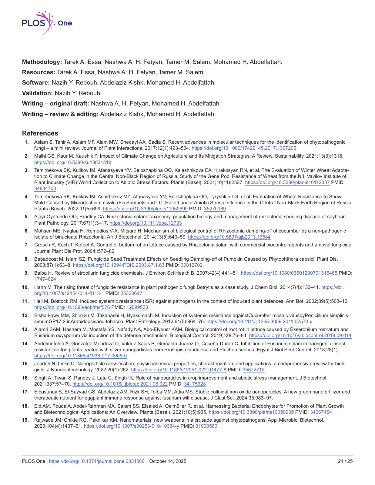
**Methodology:** Tarek A. Essa, Nashwa A. H. Fetyan, Tamer M. Salem, Mohamed H. Abdelfattah.
**Resources:** Tarek A. Essa, Nashwa A. H. Fetyan, Tamer M. Salem.
**Software:** Nazih Y. Rebouh, Abdelaziz Kishk, Mohamed H. Abdelfattah.
**Writing – original draft:** Nashwa A. H. Fetyan, Mohamed H. Abdelfattah.
**Writing – review & editing:** Abdelaziz Kishk, Mohamed H. Abdelfattah.
**1.** Aslam S, Tahir A, Aslam MF, Alam MW, Shedayi AA, Sadia S. Recent advances in molecular techniques for the identification of phytopathogenic fungi – a mini review. Journal of Plant Interactions. 2017;12(1):493–504. <u>[https://doi.org/10.1080/17429145.2017.1397205](https://doi.org/10.1080/17429145.2017.1397205)</u>
**2.** Malhi GS, Kaur M, Kaushik P. Impact of Climate Change on Agriculture and Its Mitigation Strategies: A Review. Sustainability. 2021;13(3):1318. <u>[https://doi.org/10.3390/su13031318](https://doi.org/10.3390/su13031318)</u>
**3.** Temirbekova SK, Kulikov IM, Afanasyeva YV, Beloshapkina OO, Kalashnikova EA, Kirakosyan RN, et al. The Evaluation of Winter Wheat Adapta- tion to Climate Change in the Central Non-Black Region of Russia: Study of the Gene Pool Resistance of Wheat from the N.I. Vavilov Institute of Plant Industry (VIR) World Collection to Abiotic Stress Factors. Plants (Basel). 2021;10(11):2337. <u>[https://doi.org/10.3390/plants10112337](https://doi.org/10.3390/plants10112337)</u> PMID: <u>34834700</u>
**4.** Temirbekova SK, Kulikov IM, Ashirbekov MZ, Afanasyeva YV, Beloshapkina OO, Tyryshkin LG, et al. Evaluation of Wheat Resistance to Snow Mold Caused by Microdochium nivale (Fr) Samuels and I.C. Hallett under Abiotic Stress Influence in the Central Non-Black Earth Region of Russia. Plants (Basel). 2022;11(5):699. <u>[https://doi.org/10.3390/plants11050699](https://doi.org/10.3390/plants11050699)</u> PMID: <u>35270169</u>
**5.** Ajayi‐Oyetunde OO, Bradley CA. Rhizoctonia solani: taxonomy, population biology and management of rhizoctonia seedling disease of soybean. Plant Pathology. 2017;67(1):3–17. <u>[https://doi.org/10.1111/ppa.12733](https://doi.org/10.1111/ppa.12733)</u>
**6.** Mohsen ME, Naglaa H, Remedios V-A, Mitsuro H. Mechanism of biological control of Rhizoctonia damping-off of cucumber by a non-pathogenic isolate of binucleate Rhizoctonia. Afr J Biotechnol. 2014;13(5):640–50. <u>[https://doi.org/10.5897/ajb2013.13584](https://doi.org/10.5897/ajb2013.13584)</u>
**7.** Grosch R, Koch T, Kofoet A. Control of bottom rot on lettuce caused by Rhizoctonia solani with commercial biocontrol agents and a novel fungicide. Journal Plant Dis Prot. 2004;:572–82.
**8.** Babadoost M, Islam SZ. Fungicide Seed Treatment Effects on Seedling Damping-off of Pumpkin Caused by Phytophthora capsici. Plant Dis. 2003;87(1):63–8. <u>[https://doi.org/10.1094/PDIS.2003.87.1.63](https://doi.org/10.1094/PDIS.2003.87.1.63)</u> PMID: <u>30812702</u>
**9.** Balba H. Review of strobilurin fungicide chemicals. J Environ Sci Health B. 2007;42(4):441–51. <u>[https://doi.org/10.1080/03601230701316465](https://doi.org/10.1080/03601230701316465)</u> PMID: <u>17474024</u>
**10.** Hahn M. The rising threat of fungicide resistance in plant pathogenic fungi: Botrytis as a case study. J Chem Biol. 2014;7(4):133–41. <u>[https://doi](https://doi).</u> <u>org/10.1007/s12154-014-0113-1</u> PMID: <u>25320647</u>
**11.** Heil M, Bostock RM. Induced systemic resistance (ISR) against pathogens in the context of induced plant defences. Ann Bot. 2002;89(5):503–12. <u>[https://doi.org/10.1093/aob/mcf076](https://doi.org/10.1093/aob/mcf076)</u> PMID: <u>12099523</u>
**12.** Elsharkawy MM, Shimizu M, Takahashi H, Hyakumachi M. Induction of systemic resistance againstCucumber mosaic virusbyPenicillium simplicis- simumGP17‐2 inArabidopsisand tobacco. Plant Pathology. 2012;61(5):964–76. <u>[https://doi.org/10.1111/j.1365-3059.2011.02573.x](https://doi.org/10.1111/j.1365-3059.2011.02573.x)</u>
**13.** Alamri SAM, Hashem M, Mostafa YS, Nafady NA, Abo-Elyousr KAM. Biological control of root rot in lettuce caused by Exserohilum rostratum and Fusarium oxysporum via induction of the defense mechanism. Biological Control. 2019;128:76–84. <u>[https://doi.org/10.1016/j.biocontrol.2018.09.014](https://doi.org/10.1016/j.biocontrol.2018.09.014)</u>
**14.** Abdelmoteleb A, Gonzalez-Mendoza D, Valdez-Salas B, Grimaldo-Juarez O, Ceceña-Duran C. Inhibition of Fusarium solani in transgenic insect- resistant cotton plants treated with silver nanoparticles from Prosopis glandulosa and Pluchea sericea. Egypt J Biol Pest Control. 2018;28(1). <u>[https://doi.org/10.1186/s41938-017-0005-0](https://doi.org/10.1186/s41938-017-0005-0)</u>
**15.** Joudeh N, Linke D. Nanoparticle classification, physicochemical properties, characterization, and applications: a comprehensive review for biolo- gists. J Nanobiotechnology. 2022;20(1):262. <u>[https://doi.org/10.1186/s12951-022-01477-8](https://doi.org/10.1186/s12951-022-01477-8)</u> PMID: <u>35672712</u>
**16.** Singh A, Tiwari S, Pandey J, Lata C, Singh IK. Role of nanoparticles in crop improvement and abiotic stress management. J Biotechnol. 2021;337:57–70. <u>[https://doi.org/10.1016/j.jbiotec.2021.06.022](https://doi.org/10.1016/j.jbiotec.2021.06.022)</u> PMID: <u>34175328</u>
**17.** Elbasuney S, El-Sayyad GS, Abdelaziz AM, Rizk SH, Tolba MM, Attia MS. Stable colloidal iron oxide nanoparticles: A new green nanofertilizer and therapeutic nutrient for eggplant immune response against fusarium wilt disease. J Clust Sci. 2024;35:983–97.
**18.** Eid AM, Fouda A, Abdel-Rahman MA, Salem SS, Elsaied A, Oelmüller R, et al. Harnessing Bacterial Endophytes for Promotion of Plant Growth and Biotechnological Applications: An Overview. Plants (Basel). 2021;10(5):935. <u>[https://doi.org/10.3390/plants10050935](https://doi.org/10.3390/plants10050935)</u> PMID: <u>34067154</u>
**19.** Rajwade JM, Chikte RG, Paknikar KM. Nanomaterials: new weapons in a crusade against phytopathogens. Appl Microbiol Biotechnol. 2020;104(4):1437–61. <u>[https://doi.org/10.1007/s00253-019-10334-y](https://doi.org/10.1007/s00253-019-10334-y)</u> PMID: <u>31900560</u> PLOS One | <u>[https://doi.org/10.1371/journal.pone.0334506](https://doi.org/10.1371/journal.pone.0334506)</u> October 14, 2025 21 / 25
PENDING — the worker run has not reached this page yet. Re-run make_review.py as the run progresses to fill it in.
PENDING — the worker run has not reached this page yet. Re-run make_review.py as the run progresses to fill it in.
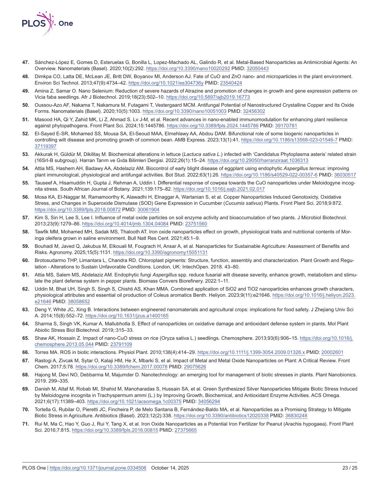
**47.** Sánchez-López E, Gomes D, Esteruelas G, Bonilla L, Lopez-Machado AL, Galindo R, et al. Metal-Based Nanoparticles as Antimicrobial Agents: An Overview. Nanomaterials (Basel). 2020;10(2):292. <u>[https://doi.org/10.3390/nano10020292](https://doi.org/10.3390/nano10020292)</u> PMID: <u>32050443</u>
**48.** Dimkpa CO, Latta DE, McLean JE, Britt DW, Boyanov MI, Anderson AJ. Fate of CuO and ZnO nano- and microparticles in the plant environment. Environ Sci Technol. 2013;47(9):4734–42. <u>[https://doi.org/10.1021/es304736y](https://doi.org/10.1021/es304736y)</u> PMID: <u>23540424</u>
**49.** Amina Z, Samar O. Nano Selenium: Reduction of severe hazards of Atrazine and promotion of changes in growth and gene expression patterns on Vicia faba seedlings. Afr J Biotechnol. 2019;18(23):502–10. <u>[https://doi.org/10.5897/ajb2019.16773](https://doi.org/10.5897/ajb2019.16773)</u>
**50.** Oussou-Azo AF, Nakama T, Nakamura M, Futagami T, Vestergaard MCM. Antifungal Potential of Nanostructured Crystalline Copper and Its Oxide Forms. Nanomaterials (Basel). 2020;10(5):1003. <u>[https://doi.org/10.3390/nano10051003](https://doi.org/10.3390/nano10051003)</u> PMID: <u>32456302</u>
**51.** Masood HA, Qi Y, Zahid MK, Li Z, Ahmad S, Lv J-M, et al. Recent advances in nano-enabled immunomodulation for enhancing plant resilience against phytopathogens. Front Plant Sci. 2024;15:1445786. <u>[https://doi.org/10.3389/fpls.2024.1445786](https://doi.org/10.3389/fpls.2024.1445786)</u> PMID: <u>39170781</u>
**52.** El-Sayed E-SR, Mohamed SS, Mousa SA, El-Seoud MAA, Elmehlawy AA, Abdou DAM. Bifunctional role of some biogenic nanoparticles in controlling wilt disease and promoting growth of common bean. AMB Express. 2023;13(1):41. <u>[https://doi.org/10.1186/s13568-023-01546-7](https://doi.org/10.1186/s13568-023-01546-7)</u> PMID: <u>37119397</u>
**53.** Akkurak H, Güldür M, Dikilitaş M. Biochemical alterations in lettuce (*Lactuca sativa L*.) infected with ‘Candidatus Phytoplasma asteris’ related strain (16SrI-B subgroup). Harran Tarım ve Gıda Bilimleri Dergisi. 2022;26(1):15–24. <u>[https://doi.org/10.29050/harranziraat.1036313](https://doi.org/10.29050/harranziraat.1036313)</u>
**54.** Attia MS, Hashem AH, Badawy AA, Abdelaziz AM. Biocontrol of early blight disease of eggplant using endophytic *Aspergillus terreus*: improving plant immunological, physiological and antifungal activities. Bot Stud. 2022;63(1):26. <u>[https://doi.org/10.1186/s40529-022-00357-6](https://doi.org/10.1186/s40529-022-00357-6)</u> PMID: <u>36030517</u>
**55.** Tauseef A, Hisamuddin H, Gupta J, Rehman A, Uddin I. Differential response of cowpea towards the CuO nanoparticles under Meloidogyne incognita stress. South African Journal of Botany. 2021;139:175–82. <u>[https://doi.org/10.1016/j.sajb.2021.02.017](https://doi.org/10.1016/j.sajb.2021.02.017)</u>
**56.** Mosa KA, El-Naggar M, Ramamoorthy K, Alawadhi H, Elnaggar A, Wartanian S, et al. Copper Nanoparticles Induced Genotoxicty, Oxidative Stress, and Changes in Superoxide Dismutase (SOD) Gene Expression in Cucumber (*Cucumis sativus*) Plants. Front Plant Sci. 2018;9:872. <u>[https://doi.org/10.3389/fpls.2018.00872](https://doi.org/10.3389/fpls.2018.00872)</u> PMID: <u>30061904</u>
**57.** Kim S, Sin H, Lee S, Lee I. Influence of metal oxide particles on soil enzyme activity and bioaccumulation of two plants. J Microbiol Biotechnol. 2013;23(9):1279–86. <u>[https://doi.org/10.4014/jmb.1304.04084](https://doi.org/10.4014/jmb.1304.04084)</u> PMID: <u>23751560</u>
**58.** Tawfik MM, Mohamed MH, Sadak MS, Thalooth AT. Iron oxide nanoparticles effect on growth, physiological traits and nutritional contents of Mor- inga oleifera grown in saline environment. Bull Natl Res Cent. 2021;45:1–9.
**59.** Bouhadi M, Javed Q, Jakubus M, Elkouali M, Fougrach H, Ansar A, et al. Nanoparticles for Sustainable Agriculture: Assessment of Benefits and Risks. Agronomy. 2025;15(5):1131. <u>[https://doi.org/10.3390/agronomy15051131](https://doi.org/10.3390/agronomy15051131)</u>
**60.** Brotosudarmo THP, Limantara L, Chandra RD. Chloroplast pigments: Structure, function, assembly and characterization. Plant Growth and Regu- lation-Alterations to Sustain Unfavorable Conditions. London, UK: IntechOpen. 2018. 43–80.
**61.** Attia MS, Salem MS, Abdelaziz AM. Endophytic fungi *Aspergillus* spp. reduce fusarial wilt disease severity, enhance growth, metabolism and stimu- late the plant defense system in pepper plants. Biomass Convers Biorefinery. 2022:1–11.
**62.** Uddin M, Bhat UH, Singh S, Singh S, Chishti AS, Khan MMA. Combined application of SiO2 and TiO2 nanoparticles enhances growth characters, physiological attributes and essential oil production of Coleus aromatics Benth. Heliyon. 2023;9(11):e21646. <u>[https://doi.org/10.1016/j.heliyon.2023](https://doi.org/10.1016/j.heliyon.2023).</u> <u>e21646</u> PMID: <u>38058652</u>
**63.** Deng Y, White JC, Xing B. Interactions between engineered nanomaterials and agricultural crops: implications for food safety. J Zhejiang Univ Sci
A. 2014;15(8):552–72. <u>[https://doi.org/10.1631/jzus.a1400165](https://doi.org/10.1631/jzus.a1400165)</u>
**64.** Sharma S, Singh VK, Kumar A, Mallubhotla S. Effect of nanoparticles on oxidative damage and antioxidant defense system in plants. Mol Plant Abiotic Stress Biol Biotechnol. 2019;:315–33.
**65.** Shaw AK, Hossain Z. Impact of nano-CuO stress on rice (Oryza sativa L.) seedlings. Chemosphere. 2013;93(6):906–15. <u>[https://doi.org/10.1016/j](https://doi.org/10.1016/j).</u> <u>chemosphere.2013.05.044</u> PMID: <u>23791109</u>
**66.** Torres MA. ROS in biotic interactions. Physiol Plant. 2010;138(4):414–29. <u>[https://doi.org/10.1111/j.1399-3054.2009.01326.x](https://doi.org/10.1111/j.1399-3054.2009.01326.x)</u> PMID: <u>20002601</u>
**67.** Rastogi A, Zivcak M, Sytar O, Kalaji HM, He X, Mbarki S, et al. Impact of Metal and Metal Oxide Nanoparticles on Plant: A Critical Review. Front Chem. 2017;5:78. <u>[https://doi.org/10.3389/fchem.2017.00078](https://doi.org/10.3389/fchem.2017.00078)</u> PMID: <u>29075626</u>
**68.** Hajong M, Devi NO, Debbarma M, Majumder D. Nanotechnology: an emerging tool for management of biotic stresses in plants. Plant Nanobionics.
2019. 299–335.
**69.** Danish M, Altaf M, Robab MI, Shahid M, Manoharadas S, Hussain SA, et al. Green Synthesized Silver Nanoparticles Mitigate Biotic Stress Induced by Meloidogyne incognita in Trachyspermum ammi (L.) by Improving Growth, Biochemical, and Antioxidant Enzyme Activities. ACS Omega. 2021;6(17):11389–403. <u>[https://doi.org/10.1021/acsomega.1c00375](https://doi.org/10.1021/acsomega.1c00375)</u> PMID: <u>34056294</u>
**70.** Tortella G, Rubilar O, Pieretti JC, Fincheira P, de Melo Santana B, Fernández-Baldo MA, et al. Nanoparticles as a Promising Strategy to Mitigate Biotic Stress in Agriculture. Antibiotics (Basel). 2023;12(2):338. <u>[https://doi.org/10.3390/antibiotics12020338](https://doi.org/10.3390/antibiotics12020338)</u> PMID: <u>36830248</u>
**71.** Rui M, Ma C, Hao Y, Guo J, Rui Y, Tang X, et al. Iron Oxide Nanoparticles as a Potential Iron Fertilizer for Peanut (Arachis hypogaea). Front Plant Sci. 2016;7:815. <u>[https://doi.org/10.3389/fpls.2016.00815](https://doi.org/10.3389/fpls.2016.00815)</u> PMID: <u>27375665</u> PLOS One | <u>[https://doi.org/10.1371/journal.pone.0334506](https://doi.org/10.1371/journal.pone.0334506)</u> October 14, 2025 23 / 25
PENDING — the worker run has not reached this page yet. Re-run make_review.py as the run progresses to fill it in.
PENDING — the worker run has not reached this page yet. Re-run make_review.py as the run progresses to fill it in.
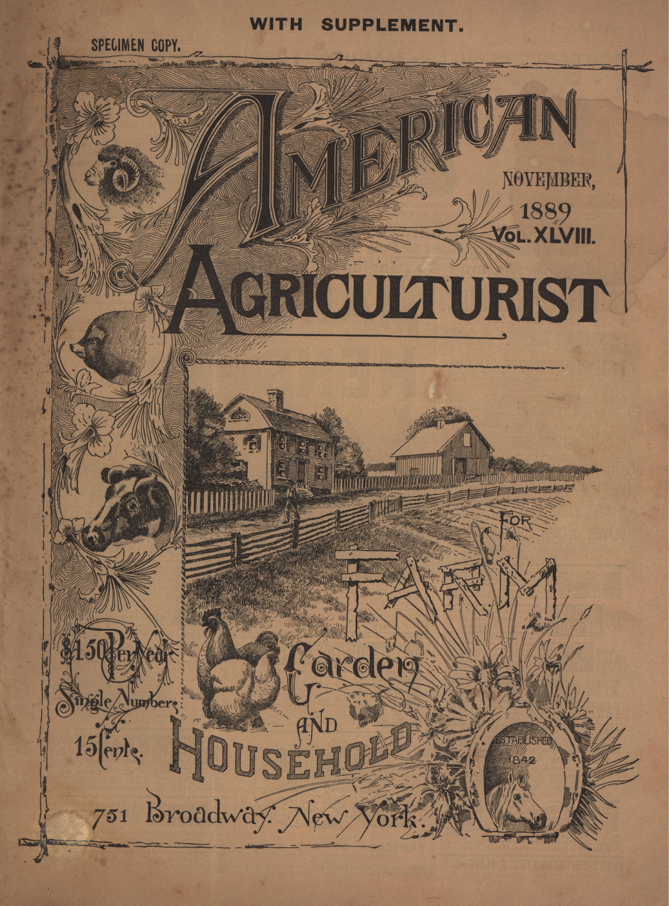
WITH SUPPLEMENT. SPECIMEN COPY.
NOVEMBER,
VOL.XLVIII.
PENDING — the worker run has not reached this page yet. Re-run make_review.py as the run progresses to fill it in.
PENDING — the worker run has not reached this page yet. Re-run make_review.py as the run progresses to fill it in.
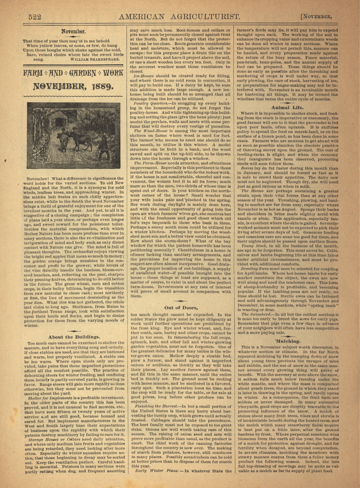
may save much loss. Root-houses and cellars or November. pits must soon be permanently closed against frost at the North. But do not forget that the protec-That time of year thou may'st in me behold tion can be too close. Roots generate considerable When yellow leaves, or none, or few, do hang heat and moisture, which must be allowed to Upon those boughs which shake against the cold, escape: for this purpose place a drain tile on the Bare, ruined choirs where late the sweet birds buried treasure, and haveit project above the soil, WILLIAM SHAKESPEARE. sang. or use a short wooden box every ten feet. Only in the severest weather must these ventilators be closed.
and wheré there is no cold room in connection, it will pay to build one. If a dairy be kept, be sure
house being built should be so arranged that all drainage from the ice can be utilized. Poultry Quarters.-In snugging up every build- ing in the homestead group, do not forget the poultry-house. And while tighteningup this build- ing and setting the glass (give the hens plenty) just anoint the perches, walls and nests with some per- fume that will destroy every vestige of parasites. The Wood-House is among the most important shelters on farms where wood is used for fuel. The farmer who means to erect one should do so this month, to utilize it this winter. A model structure can be built in a bank, and the wood sawed and split on the up-hill side, to be thrown down into the house through a window. The Farm-House needs attention, and oftentimes improvement. Especially is this pertinent to those members of the household who do the indoor work. If the house is not comfortable, cheerful and con-November! What a difference in significance the venient, the women feel it in all its force; much word holds for the varied sections. To old New more so than the men, two-thirds of whose time is England and the North, it is a synonym for cold spent out of doors. Is your kitehen on the north- winds, leafless trees, and approaching winter. In west corner of the house? Small wonder that the middle belt States no such chilly apprehen- your wife looks pale and pinched in the spring. sfons exist, while to the South the word November Her work during daylight is mainly done here, brings a thrill of grateful enjoyment for one of the and with the small opportunity of going into the loveliest months in the year. And yet, to all it is open air which farmers' wives get, she receives but suggestive of a closing campaign; the completion little cf the freshness and good cheer which old of plans laid a year since, or perhaps even longer Sol's rays bequeath to those who bask in them. ago, and sweet reward for the persistent toiler. Perhaps a sunny south room could be utilized for Besides the material compensation, with which a winter kitchen. Perhaps by moving the wood-Mother Nature has been more profuse than ever in shed more sun and a better view could be obtained. many sections, there is also the re-vitalization and How about the storm-doors? What of the bay invigoration of mind and body such as only direct window for which the patient housewife has been contact with Nature can give. The mind is full of petitioning annually? Cheerfulness in a house is pleasant thoughts. The orchardist enjoys viewing oftener lacking than sanitary arrangements, and the bright red apples that mean so much in money; the provisions for improving the home in this the golden orange brings sunshine to the con- respect are often almost inexpensive. Good drain- sumer and profit to the grower; while lovers of age, the proper location of out-buildings, a supply the vine daintily handle the luscious, bloom-cov- of untainted water-if possible brought into the ered bunches, and, reflecting on the past, sharpen house-these things at least are supposed, as a their pruning-knives, determining to do still better matter of course, to exist in and about the perfect in the future. The great wheat, corn and cotton farm-house. 'Investments at any rate of interest crops, in their bulky billions, begin the transition will prove of small account in comparison with from raw material to clean cash; most northerly them. at first, the line of movement descending as the year dies. What rice was not gathered, the oriole laid claim to long ago. Stockmen, from Maine to Out of Doors, the furthest Texan range, look with satisfaction too much thought cannot be expended. In the upon their herds and flocks, and begin to desire colder States the plow must be kept diligently at protection for them from the varying moods of work until further operations are prohibited by winter. the frost king. Rye and winter wheat, and, further south, oats, barley and other crops, cannot be About the Buildings. put in too soon. In remembering the fall crops, spinach, kale, and other fall and winter-growing Too much care cannot be exercised to shelter the garden vegetables, must not be forgotten. One of manure, and to have everything snug and orderly. the greatest delicacies for many tables is the win-If close stables are used, see that they are battened ter-grown onion. Mellow deeply a sizable bed, and warm, but properly ventilated. A stable can plow a furrow, and stand against it imperfect be too warm. Where open sheds only are pro- onions or scullions, as thickly as they will take vided, take pains that these imperfect protections their places. Lay another furrow against them, afford all the comfort possible. The practice of and fill this in the same manner, until the entire dehorning steers for winter feeding, and confining 'bed is thickly set. The ground must be reeking them loosely in partly-covered yards, is growing in with horse manure, and be sheltered in a favored, favor. Range steers will gain more rapidly so than early spot. Such a plantation loses no time, and otherwise, but they must not be prevented from the crop will be ready for the table, or for sale at moving about the yard. good prices, long before other produce can be Shelter for Implements is a profitable investment. enjoyed. In the older parts of the country this has been Finishing the Harvest.—In but a small portion of proved, and it is not unusual to find mowers, etc., the United States is there any hurry about har- that have seen fifteen or twenty years of active vesting the turnip crop, which grows until actually service and are still good, because housed and frosted. Cabbages should take the precedence. cared for. But implement manufacturers in the The beet family must not be exposed to too great West and South largely base their expectations risks. Onions are well worth taking care of this of business upon the rapidity with which their season. The raising of onion seed and sets will patrons destroy machinery by failing to care for it. prove more profitable than usual, as the product is Storage Houses or Cellars need daily attention, short. The chief work of the canning factories and where only medium late fruits and vegetables throughout the country is now over. The making are being retarded, they need looking after more of starch from potatoes, however, still continues often. Especially do winter squashes require no- in many places. Possibly sound tubers can be sold tice, that those beginning to decay may be sorted at better prices than to dispose of them for starch out. Keep the ventilation perfect. Careful hand- this year. ling is essential. Potatoes in many sections were Early Winter Plans.-In whatever State the partly rotting when dug, and frequent assorting
farmer's fields may lie, it will pay him to expend thought upon each. The working of the soil to enhance its cropping value and exterminate weeds can be done all winter in many sections. Where the temperature will not permit this, manure can be hauled, and every preparation made against the return of the busy season. Fence material, pea-brush, bean-poles, and the annual supply of fuel can be prepared. These things should be done as early as possible after the threshing and marketing of crops is well under way, so that early plowing, the care of stock, harvesting of ice, or preparations for sugar-making may not be in- terfered with. November is an invaluable month for hastening all things. It may be termed the windlass that turns the entire cycle of months. Animal Life. Where it is impossible to shelter stock, and feeding from the stack is imperative or customary, the good farmer will see to it that the provender is fed upon poor lands, often uplands. It is shiftless policy to spread the food on marsh-land, or on the surface of a frozen pond, as has been done in some cases. Farmers who are anxious to get ahead will as soon as possible abandon the obsolete practice of throwing stover upon the ground. The cost of feeding-racks is slight, and when the economy they inaugurate has been observed, protecting sheds will soon follow them. Beeves lay òn fat faster during this month than in January, and should be forced as fast as it is safe to crowd their appetites. The dairy cow must not be neglected. Though dry, she will need just as good rations as when in milk. The Horses are perhaps sustaining a greater strain upon their vital forces than at any other season of the year. Threshing, plowing, and haul- ing to market are far from easy, especially where November is as hot as August. Sponge their backs and shoulders in brine made slightiy acrid with tannin or alum. This application, especially tan- pin, is excellent where theskin is galled. Severely- worked animals must not be expected to pick their living after severe days of toil. Generous feeding and ceaseless care are none too good for them, and their nights should be passed upon earthen floors. Young Stock, in all the business of the month, are apt to be forgotten. This must never be. Colts, calves and lambs beginning life at this time labor under artificial circumstances, and must be pro- vided with additional comforts. Breeding Ewes must soon be selected for coupling for April lambs. Where hot-house lambs for early market constitute the object, the ewes are now well along and need the tenderest care. This form of sheep-husbandry is profitable, and becoming popular. If the lambing-pens are not ready, no time should be lost. Sterile ewes can be fattened and sold advantageously through November and December, in some markets, while "spring lamb" is wanting or dear. The Swineherd.—In all but the coldest sections it is none too early to breed the sows for early pigs. Remember that pigs even a few days in advance of your neighbors will often have less competition and a more paying sale.
Mulching. This is a November subject worth discussion, in whatever section or climate. In the far North repeated mulching by the tramping down of snow about young trees prevents the ravages of mice and rabbits, and the use of snow in the same manner around every growing thing will prove of benefit. With the meroury at zero above the snow, it seldom falls much below freezing under the white mantle, and where the mass is compacted about peach trees, the ground in which they stand is later in thawing in the spring, and rarely opens in winter. As a consequence, the fruit buds are seldom or never damaged. In many successful vineyards, good crops are directly traceable to the protecting influence of the snow. A mulch of stones about many fruit trees, vines and shrubs is of incalculable benefit during the heated term, and the mulch which many strawberry fields require is best put on a little later, after the ground hardens by frost. Where perpetual sunshine wins blossoms from the earth all the year, the benefits of a mulch for protection against drought, and for fertility when decayed, are beyond computation. In severe climates, mulching the meadows with strawy manure coaxes from them a fuller money product the following season. Indeed, the late fall top-dressing of mowings may be quite as val- uable as a mulch as for its supply of plant food.
PENDING — the worker run has not reached this page yet. Re-run make_review.py as the run progresses to fill it in.
PENDING — the worker run has not reached this page yet. Re-run make_review.py as the run progresses to fill it in.
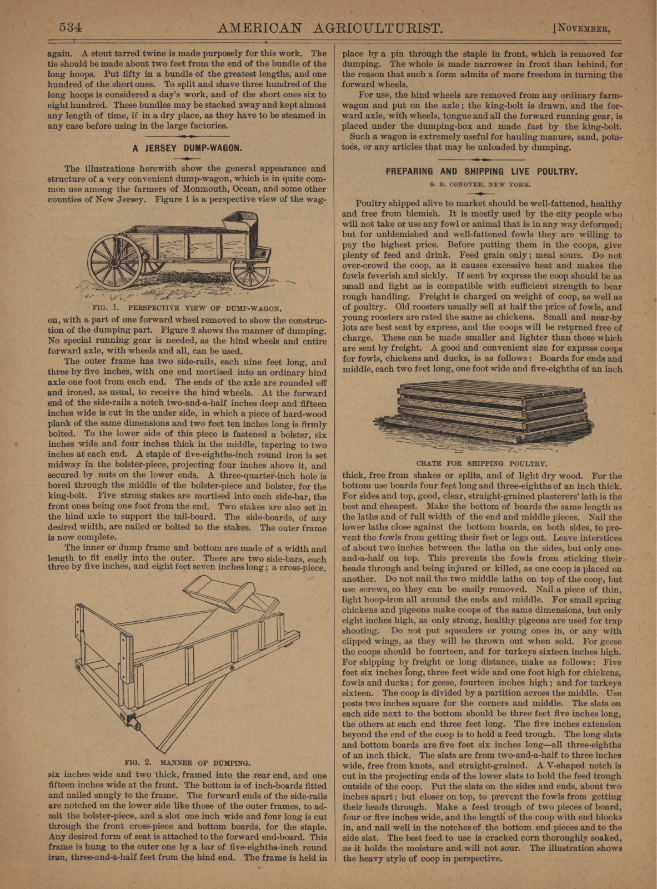
AMERICAN AGRICULTURIST.|NOVEMBER,
again. A stout tarred twine is made purposely for this work. The place by a pin through the staple in front, which is removed for tie should be made about two feet from the end of the bundle of the dumping. The whole is made narrower in front than behind, for long hoops. Put fifty in a bundle of the greatest lengths, and one the reason that such a form admits of more freedom in turning the hundred of the short ones. To split and shave three hundred of the forward wheels. long hoops is considered a day's work, and of the short ones six to For use, the hind wheels are removed from any ordinary farm- eight hundred. These bundles may be stacked away and kept almost wagon and put on the axle; the king-bolt is drawn, and the for- any length of time, if in a dry place, as they have to be steamed in ward axle, with wheels, tongue and all the forward running gear, is any case before using in the large factories. placed under the dumping-box and made fast by the king-bolt. Such a wagon is extremely useful for hauling manure, sand, pota- A JERSEY DUMP-WAGON. toes, or any articles that may be unloaded by dumping. The illustrations herewith show the general appearance and PREPARING AND SHIPPING LIVE POULTRY. structure of a very convenient dump-wagon, which is in quite com-
S. B. CONOVER, NEW YORK.
mon use among the farmers of Monmouth, Ocean, and some other counties of New Jersey. Figure 1 is a perspective view of the wag-Poultry shipped alive to market should be well-fattened, healthy and free from blemish. It is mostly used by the city people who will not take or use any fowl or animal that is in any way deformed; but for unblemished and well-fattened fowls they are willing to pay the highest price. Before putting them in the coops, give plenty of feed and drink. Feed grain only; meal sours. Do not over-crowd the coop, as it causes excessive heat and makes the fowls feverish and sickly. If sent by express the coop should be as small and light as is compatible with sufficient strength to bear rough handling. Freight is charged on weight of coop, as well as of poultry. Old roosters usually sell at half the price of fowls, and young roosters are rated the same as chickens. Small and near-by lots are best sent by express, and the coops will be returned free of charge. These can be made smaller and lighter than those which are sent by freight. A good and convenient size for express coops for fowls, chickens and ducks, is as follows: Boards for ends and middle, each two feet long, one foot wide and five-eighths of an inch
FIG. 1. PERSPECTIVE VIEW OF DUMP-WAGON. on, with a part of one forward wheel removed to show the construc- tion of the dumping part. Figure 2 shows the manner of dumping. No special running gear is needed, as the hind wheels and entire forward axle, with wheels and all, can be used. The outer frame has two side-rails, each nine feet long, and three by five inches, with one end mortised into an ordinary hind axle one foot from each end. The ends of the axle are rounded off and ironed, as usual, to receive the hind wheels. At the forward end of the side-rails a notch two-and-a-half inches deep and fifteen inches wide is cut in the under side, in which a piece of hard-wood plank of the same dimensions and two feet ten inches long is firmly bolted. To the lower side of this piece is fastened a bolster, six inches wide and four inches thick in the middle, tapering to two inches at each end. A staple of five-eighths-inch round iron is set midway in the bolster-piece, projecting four inches above it, and secured by nuts on the lower ends. A three-quarter-inch hole is bored through the middle of the bolster-piece and bolster, for the king-bolt. Five strong stakes are mortised into each side-bar, the front ones being one foot from the end. Two stakes are also set in
desired width, are nailed or bolted to the stakes. The outer frame is now complete. The inner or dump frame and bottom are made of a width and
three by five inches, and eight feet seven inches long; a cross-piece,
CRATE FOR SHIPPING POULTRY. thick, free from shakes or splits, and of light dry wood. For the bottom use boards four feet long and three-eighths of an inch thick. For sides and top, good, clear, straight-grained plasterers' lath is the best and cheapest. Make the bottom of boards the same length as the laths and of full width of the end and middle pieces. Nail the lower laths close against the bottom boards, on both sides, to prevent the fowls from getting their feet or legs out. Leave interstices of about two inches between the laths on the sides, but only one- and-a-half on top. This prevents the fowls from sticking their heads through and being injured or killed, as one coop is placed on another. Do not nail the two middle laths on top of the coop, but use screws, so they can be easily removed. Nail a piece of thin, light hoop-iron all around the ends and middle. For small spring chickens and pigeons make coops of the same dimensions, but only eight inches high, as only strong, healthy pigeons are used for trap shooting. Do not put squealers or young ones in, or any with clipped wings, as they will be thrown out when sold. For geese the coops should be fourteen, and for turkeys sixteen inches high. For shipping by freight or long distance, make as follows: Five feet six inches long, three feet wide and one foot high for chickens, fowls and ducks; for geese, fourteen inches high; and for turkeys sixteen. The coop is divided by a partition across the middle. Use posts two inches square for the corners and middle. The slats on each side next to the bottom should be three feet five inches long, the others at each end three feet long. The five inches extension beyond the end of the coop is to hold a feed trough. The long slats and bottom boards are five feet six inches long-all three-eighths of an inch thick. The slats are from two-and-a-half to three inches wide, free from knots, and straight-grained. A V-shaped notch is cut in the projecting ends of the lower slats to hold the feed trough outside of the coop. Put the slats on the sides and ends, about two inches apart; but closer on top, to prevent the fowls from getting their heads through. Make a feed trough of two pieces of board, four or five inches wide, and the length of the coop with end blocks in, and nail well in the notches of the bottom end pieces and to the side slat. The best feed to use is cracked corn thoroughly soaked, as it holds the moisture and will not sour. The illustration shows the heavy style of coop in perspective.
FIG. 2. MANNER OF DUMPING. six inches wide and two thick, framed into the rear end, and one fifteen inches wide at the front. The bottom is of inch-boards fitted and nailed snugly to the frame. The forward ends of the side-rails are notched on the lower side like those of the outer frames, to ad- mit the bolster-piece, and a slot one inch wide and four long is cut through the front cross-piece and bottom boards, for the staple. Any desired form of seat is attached to the forward end-board. This frame is hung to the outer one by a bar of five-eighths-inch round iron, three-and-a-half feet from the hind end. The frame is held in
PENDING — the worker run has not reached this page yet. Re-run make_review.py as the run progresses to fill it in.
PENDING — the worker run has not reached this page yet. Re-run make_review.py as the run progresses to fill it in.
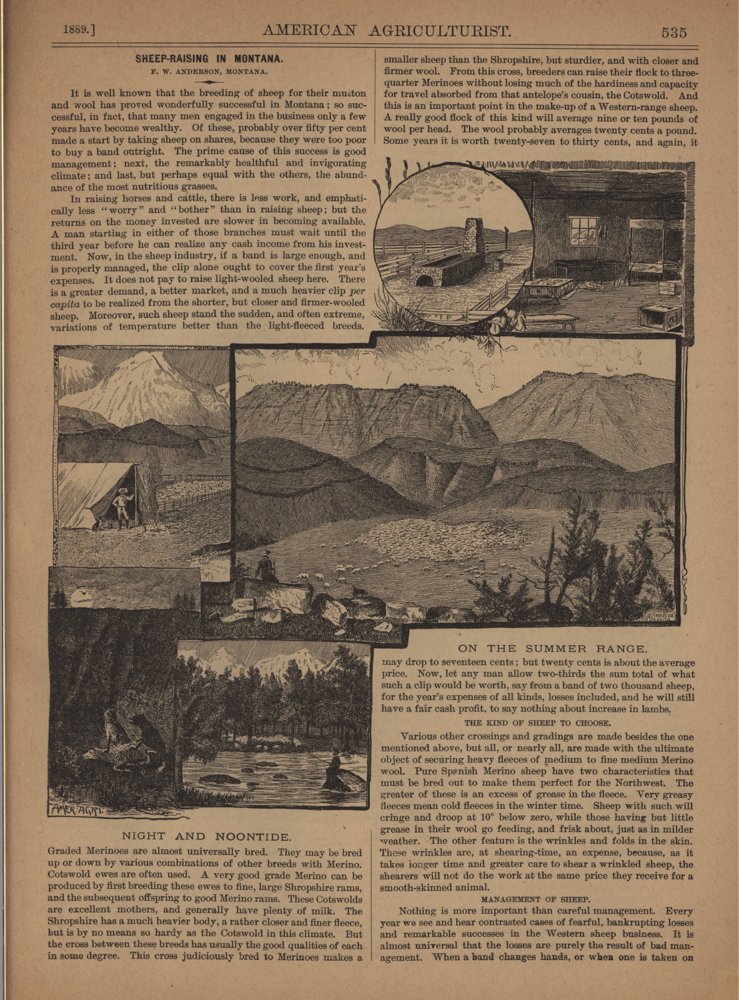
smaller sheep than the Shropshire, but sturdier, and with closer and firmer wool. From this cross, breeders can raise their flock to three- quarter Merinoes without losing much of the hardiness and capacity for travel absorbed from that antelope's cousin, the Cotswold. And this is an important point in the make-up of a Western-range sheep.
wool per head. The wool probably averages twenty cents a pound. Some years it is worth twenty-seven to thirty cents, and again, it
SHEEP-RAISING IN MONTANA.
F. W. ANDERSON, MONTANA.
It is well known that the breeding of sheep for their muiton and wool has proved wonderfully successful in Montana; so successful, in fact, that many men engaged in the business only a few
made a start by taking sheep on shares, because they were too poor to buy a band outright. The prime cause of this success is good management; next, the remarkably healthful and invigorating climate; and last, but perhaps equal with the others, the abund- ance of the most nutritious grasses. In raising horses and cattle, there is less work, and emphati- cally less "worry" and "bother" than in raising sheep; but the
A man starting in either of those branches must wait until the third year before he can realize any cash income from his invest-
is properly managed, the clip alone ought to cover the first year's
is a greater demand, a better market, and a much heavier clip per capita to be realized from the shorter, but closer and firmer-wooled
variations of temperature better than the light-fleeced breeds.
ON THE SUMMER RANGE. may drop to seventeen cents; but twenty cents is about the average price. Now, let any man allow two-thirds the sum total of what such a clip would be worth, say from a band of two thousand sheep, for the year's expenses of all kinds, losses included, and he will still have a fair cash profit, to say nothing about increase in lambs. THE KIND OF SHEEP TO CHOOSE. Various other crossings and gradings are made besides the one mentioned above, but all, or nearly all, are made with the ultimate object of securing heavy fleeces of medium to fine medium Merino wool. Pure Spanish Merino sheep have two characteristics that must be bred out to make them perfect for the Northwest. The greater of these is an excess of grease in the fleece. Very greasy fleeces mean cold fleeces in the winter time. Sheep with such will cringe and droop at 10° below zero, while those having but little grease in their wool go feeding, and frisk about, just as in milder weather. The other feature is the wrinkles and folds in the skin. These wrinkles are, at shearing-time, an expense, because, as it takes ionger time and greater care to shear a wrinkled sheep, the shearers will not do the work at the same price they receive for a smooth-skinned animal. MANAGEMENT OF SHEEP. Nothing is more important than careful management. Every year we see and hear contrasted cases of fearful, bankrupting losses and remarkable successes in the Western sheep business. It is almost universal that the losses are purely the result of bad management. When a band changes hands, or when one is taken on
NIGHT AND NOONTIDE.
up or down by various combinations of other breeds with Merino. Cotswold ewes are often used. A very good grade Merino can be produced by first breeding these ewes to fine, large Shropshire rams, and the subsequent offspring to good Merino rams. These Cotswolds are excellent mothers, and generally have plenty of milk. The Shropshire has a muck heavier body, a rather closer and finer fleece, but is by no means so hardy as the Cotswold in this climate. But the cross between these breeds has usually the good qualities of each in some degree. This cross judiciously bred to Merinoes makes a
PENDING — the worker run has not reached this page yet. Re-run make_review.py as the run progresses to fill it in.
PENDING — the worker run has not reached this page yet. Re-run make_review.py as the run progresses to fill it in.
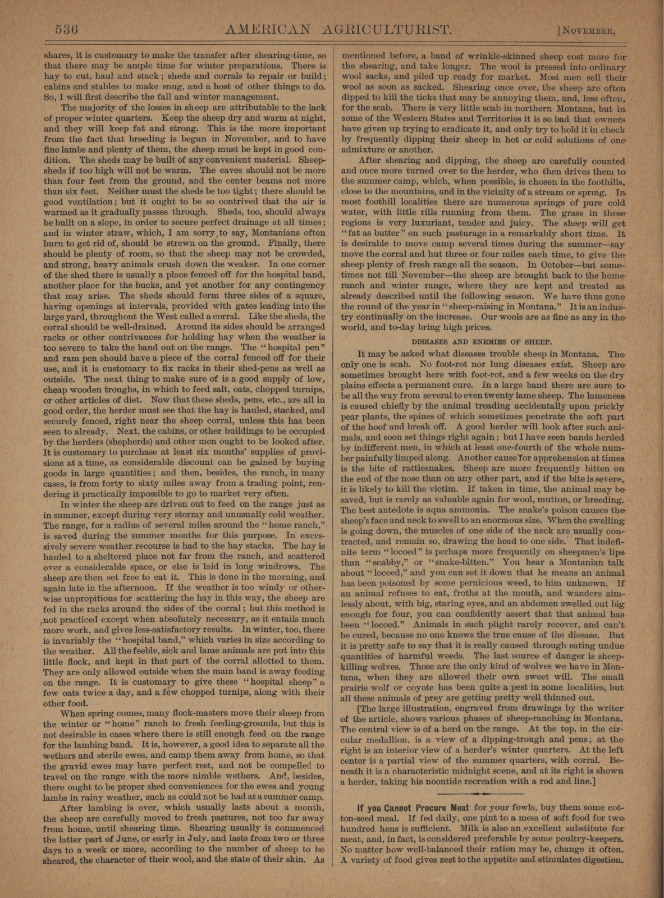
shares, it is customary to make the transfer after shearing-time, so that there may be ample time for winter preparations. There is hay to cut, haul and stack; sheds and corrals to repair or build; cabins and stables to make snug, and a host of other things to do. So, I will first describe the fall and winter management. The majority of the losses in sheep are attributable to the lack of proper winter quarters. Keep the sheep dry and warm at night, and they will keep fat and strong. This is the more important from the fact that breeding is begun in November, and to have fine lambs and plenty of them, the sheep must be kept in good con- dition. The sheds may be built of any convenient material. Sheep-sheds if too high will not be warm. The eaves should not be more than four feet from the ground, and the center beams not more than six feet. Neither must the sheds be too tight; there should be good ventilation; but it ought to be so contrived that the air is warmed as it gradually passes through. Sheds, too, should always be built on a slope, in order to secure perfect drainage at all times; and in winter straw, which, I am sorry,to say, Montanians often burn to get rid of, should be strewn on the ground. Finally, there should be plenty of room, so that the sheep may not be crowded, and strong, heavy animals crush down the weaker. In one corner of the shed there is usually a place fenced off for the hospital band, another place for the bucks, and yet another for any contingency that may arise. The sheds should form three sides of a square, having openings at intervals, provided with gates leading into the large yard, throughout the West called a corral. Like the sheds, the corral should be well-drained. Around its sides should be arranged racks or other contrivances for holding hay when the weather is too severe to take the band out on the range. The "hospital pen" and ram pen should have a piece of the corral fenced off for their use, and it is customary to fix racks in their shed-pens as well as outside. The next thing to make sure of is a good supply of low, cheap wooden troughs, in which to feed salt, oats, chopped turnips, or other articles of diet. Now that these sheds, pens, etc., are all in good order, the herder must see that the hay is hauled, stacked, and securely fenced, right near the sheep corral, unless this has been seen to already. Next, the cabins, or other buildings to be occupied by the herders (shepherds) and other men ought to be looked after. It is customary to purchase at least six months' supplies of provi- sions at a time, as considerable discount can be gained by buying goods in large quantities; and then, besides, the ranch, in many cases, is from forty to sixty miles away from a trading point, ren- dering it practically impossible to go to market very often. In winter the sheep are driven out to feed on the range just as in summer, except during very stormy and unusually cold weather. The range, for a radius of several miles around the "home ranch," is saved during the summer months for this purpose. In exces- sively severe weather recourse is had to the hay stacks. The hay is hauled to a sheltered place not far from the ranch, and scattered over a considerable space, or else is laid in long windrows. The sheep are then set free to eat it. This is done in the morning, and again late in the afternoon. If the weather is too windy or other- wise unpropitious for scattering the hay in this way, the sheep are fed in the racks around the sides of the corral; but this method is not practiced except when absolutely necessary, as it entails much more work, and gives less-satisfactory results. In winter, too, there is invariably the hospital band," which varies in size according to the weather. All the feeble, sick and lame animals are put into this little flock, and kept in that part of the corral allotted to them. They are only allowed outside when the main band is away feeding on the range. It is customary to give these "hospital sheep"a few oats twice a day, and a few chopped turnips, along with their other food. When spring comes, many flock-masters move their sheep from the winter or "home" ranch to fresh feeding-grounds, but this is not desirable in cases where there is still enough feed on the range for the lambing band. It is, however, a good idea to separate all the wethers and sterile ewes, and camp them away from home, so that the gravid ewes may have perfect rest, and not be compelled to travel on the range with the more nimble wethers. And, besides, there ought to be proper shed conveniences for the ewes and young lambs in rainy weather, such as could not be had at a summer camp. After lambing is over, which usually lasts about a month, the sheep are carefully moved to fresh pastures, not too far away from home, until shearing time. Shearing usually is commenced the latter part of June, or early in July, and lasts from two or three days to a week or more, according to the number of sheep to be sheared, the character of their wool, and the state of their skin. As
mentioned before, a band of wrinkle-skinned sheep cost more for the shearing, and take longer. The wool is pressed into ordinary wool sacks, and piled up ready for market. Most men sell their wool as soon as sacked. Shearing once over, the sheep are often dipped to kill the ticks that may be annoying them, and, less often, for the scab. There is very little scab in northern Montana, but in some of the Western States and Territories it is so bad that owners have given up trying to eradicate it, and only try to hold it in check by frequently dipping their sheep in hot or cold solutions of one admixture or another. After shearing and dipping, the sheep are carefully counted and once more turned over to the herder, who then drives them to the summer camp, which, when possible, is chosen in the foothills,
most foothill localities there are numerous springs of pure cold water, with little rills running from them. The grass in these regions is very luxuriant, tender and juicy. The sheep will get "fat as butter" on such pasturage in a remarkably short time. It is desirable to move camp several times during the summer-say move the corral and hut three or four miles each time, to give the sheep plenty of fresh range all the season. In October—but sometimes not till November-the sheep are brought back to the home ranch and winter range, where they are kept and treated as already described until the following season. We have thus gone the round of the year in "sheep-raising in Montana." It is an indus- try continually on the increase. Our wools are as fine as any in the world, and to-day bring high prices. DISEASES AND ENEMIES OF SHEEP. It may be asked what diseases trouble sheep in Montana. The only one is scab. No foot-rot nor lung diseases exist. Sheep are sometimes brought here with foot-rot, and a few weeks on the dry plains effects a permanent cure. In a large band there are sure to be all the way from several to even twenty lame sheep. The lameness is caused chiefly by the animal treading accidentally upon prickly pear plants, the spines of which sometimes penetrate the soft part of the hoof and break off. A good herder will look after such animals, and soon set things right again; but I have seen bands herded by indifferent men, in which at least one-fourth of the whole number painfully limped along. Another cause for apprehension at times is the bite of rattlesnakes. Sheep are more frequently bitten on the end of the nose than on any other part, and if the bite is severe, it is likely to kill the victim. If taken in time, the animal may be saved, but is rarely as valuable again for wool, mutton, or breeding. The best antedote is aqua ammonia. The snake's poison causes the sheep's face and neck to swell to an enormous size. When the swelling is going down, the muscles of one side of the neck are usually con- tracted, and remain so, drawing the head to one side. That indefi- nite term "locoed" is perhaps more frequently on sheepmen's lips than "scabby," or "snake-bitten." You hear a Montanian talk about "locoed," and you can set it down that he means an animal has been poisoned by some pernicious weed, to him unknown. If an animal refuses to eat, froths at the mouth, and wanders aim- lessly about, with big, staring eyes, and an abdomen swelled out big enough for four, you can confidently assert that that animal has been "locoed." Animals in such plight rarely recover, and can't be cured, because no one knows the true cause of the disease. But it is pretty safe to say that it is really caused through eating undue quantities of harmful weeds. The last source of danger is sheep- killing wolves. Those are the only kind of wolves we have in Montana, when they are allowed their own sweet will. The small prairie wolf or coyote has been quite a pest in some localities, but all these animals of prey are getting pretty well thinned out. [The large illustration, engraved from drawings by the writer of the article, shows various phases of sheep-ranching in Montana. The central view is of a herd on the range. At the top, in the cir- cular medallion, is a view of a dipping-trough and pens; at the right is an interior view of a herder's winter quarters. At the left center is a partial view of the summer quarters, with corral. Be- neath it is a characteristic midnight scene, and at its right is shown a herder, taking his noontide recreation with a rod and line.]
If you Cannot Procure Meat for your fowls, buy them some cot- ton-seed meal. If fed daily, one pint to a mess of soft food for two hundred hens is sufficient. Milk is also an excellent substitute for meat, and, in fact, is considered preferable by some poultry-keepers. No matter how well-balanced their ration may be, change it often. A variety of food gives zest to the appetite and stimulates digestion.
PENDING — the worker run has not reached this page yet. Re-run make_review.py as the run progresses to fill it in.
PENDING — the worker run has not reached this page yet. Re-run make_review.py as the run progresses to fill it in.
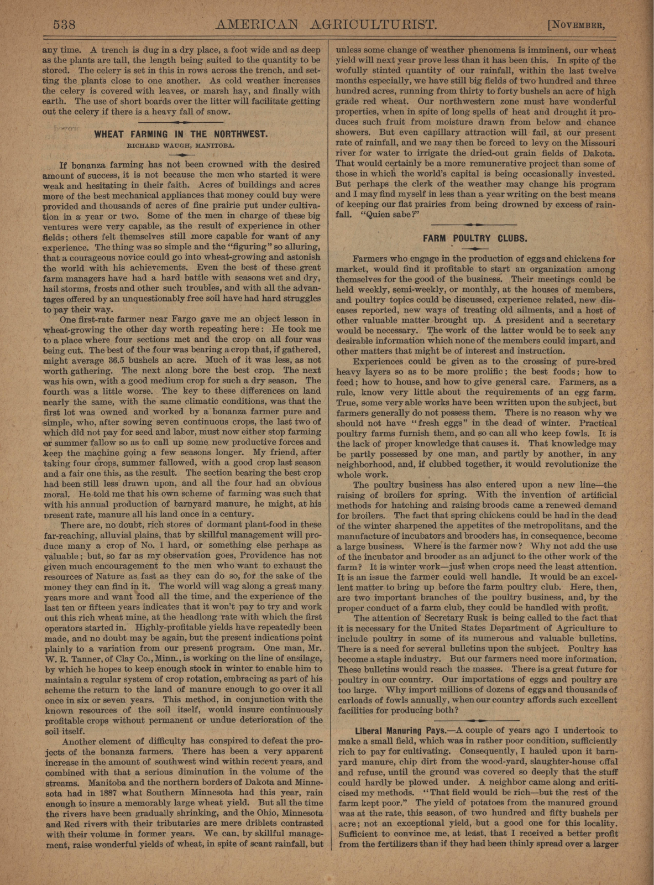
any time. A trench is dug in a dry place, a foot wide and as deep as the plants are tall, the length being suited to the quantity to be stored. The celery is set in this in rows across the trench, and set- ting the plants close to one another. As cold weather increases the celery is covered with leaves, or marsh hay, and finally with earth. The use of short boards over the litter will facilitate getting out the celery if there is a heavy fall of snow.
WHEAT FARMING IN THE NORTHWEST. RICHARD WAUGH, MANITOBA.
If bonanza farming has not been crowned with the desired amount of success, it is not because the men who started it were weak and hesitating in their faith. Acres of buildings and acres more of the best mechanical appliances that money could buy were provided and thousands of acres of fine prairie put under cultiva- tion in a year or two. Some of the men in charge of these big ventures were very capable, as the result of experience in other fields; others felt themselves still more capable for want of any experience. The thing was so simple and the "figuring" so alluring, that a courageous novice could go into wheat-growing and astonish the world with his achievements. Even the best of these great farm managers have had a hard battle with seasons wet and dry, hail storms, frosts and other such troubles, and with all the advan- tages offered by an unquestionably free soil have had hard struggles to pay their way. One first-rate farmer near Fargo gave me an object lesson in wheat-growing the other day worth repeating here: He took me to a place where four sections met and the crop on all four was being cut. The best of the four was bearing a crop that, if gathered, might average 36.5 bushels an acre. Much of it was less, as not worth gathering. The next along bore the best crop. The next was his own, with a good medium crop for such a dry season. The fourth was a little worse. The key to these differences on land nearly the same, with the same climatic conditions, was that the first lot was owned and worked by a bonanza farmer pure and simple, who, after sowing seven continuous crops, the last two of which did not pay for seed and labor, must now either stop farming or summer fallow so as to call up some new productive forces and keep the machine going a few seasons longer. My friend, after taking four crops, summer fallowed, with a good crop last season and a fair one this, as the result. The section bearing the best crop had been still less drawn upon, and all the four had an obvious moral. He told me that his own scheme of farming was such that with his annual production of barnyard manure, he might, at his present rate, manure all his land once in a century. There are, no doubt, rich stores of dormant plant-food in these far-reaching, alluvial plains, that by skillful management will pro- duce many a crop of No. 1 hard, or something else perhaps as valuable; but, so far as my observation goes, Providence has not given much encouragement to the men who want to exhaust the resources of Nature as fast as they can do so, for the sake of the money they can find in it. The world will wag along a great many years more and want food all the time, and the experience of the last ten or fifteen years indicates that it won't pay to try and work out this rich wheat mine, at the headlong rate with which the first operators started in. Highly-profitable yields have repeatedly been made, and no doubt may be again, but the present indications point plainly to a variation from our present program. One man, Mr.
W. R. Tanner, of Clay Co., Minn., is working on the line of ensilage, by which he hopes to keep enough stock in winter to enable him to maintain a regular system of crop rotation, embracing as part of his scheme the return to the land of manure enough to go over it all once in six or seven years. This method, in conjunction with the known resources of the soil itself, would insure continuously profitable crops without permanent or undue deterioration of the soil itself. Another element of difficulty has conspired to defeat the pro- jects of the bonanza farmers. There has been a very apparent increase in the amount of southwest wind within recent years, and combined with that a serious diminution in the volume of the streams. Manitoba and the northern borders of Dakota and Minnesota had in 1887 what Southern Minnesota had this year, rain enough to insure a memorably large wheat yield. But all the time the rivers have been gradually shrinking, and the Ohio, Minnesota and Red rivers with their tributaries are mere driblets contrasted with their volume in former years. We can, by skillful management, raise wonderful yields of wheat, in spite of scant rainfall, but
unless some change of weather phenomena is imminent, our wheat yield will next year prove less than it has been this. In spite of the wofully stinted quantity of our rainfall, within the last twelve months especially, we have still big fields of two hundred and three hundred acres, running from thirty to forty bushels an acre of high grade red wheat. Our northwestern zone must have wonderful properties, when in spite of long spells of heat and drought it pro- duces such fruit from moisture drawn from below and chance showers. But even capillary attraction will fail, at our present rate of rainfall, and we may then be forced to levy on the Missouri river for water to irrigate the dried-out grain fields of Dakota. That would certainly be a more remunerative project than some of those in which the world's capital is being occasionally invested. But perhaps the clerk of the weather may change his program and I may find myself in less than a year writing on the best means of keeping our flat prairies from being drowned by excess of rainfall. "Quien sabe?"
FARM POULTRY CLUBS. Farmers who engage in the production of eggs and chickens for market, would find it profitable to start an organization among themselves for the good of the business. Their meetings could be held weekly, semi-weekly, or monthly, at the houses of members, and poultry topics could be discussed, experience related, new dis- eases reported, new ways of treating old ailments, and a host of other valuable matter brought up. A president and a secretary would be necessary. The work of the latter would be to seek any desirable information which none of the members could impart, and other matters that might be of interest and instruction. Experiences could be given as to the crossing of pure-bred heavy layers so as to be more prolific; the best foods; how to feed; how to house, and how to give general care. Farmers, as a rule, know very little about the requirements of an egg farm. True, some very able works have been written upon the subject, but farmers generally do not possess them. There is no reason why we should not have "fresh eggs" in the dead of winter. Practical poultry farms furnish them, and so can all who keep fowls. It is the lack of proper knowledge that causes it. That knowledge may be partly possessed by one man, and partly by another, in any neighborhood, and, if clubbed together, it would revolutionize the whole work. The poultry business has also entered upon a new line-the raising of broilers for spring. With the invention of artificial methods for hatching and raising broods came a renewed demand for broilers. The fact that spring chickens could be had in the dead of the winter sharpened the appetites of the metropolitans, and the manufacture of incubators and brooders has, in consequence, become a large business. Where is the farmer now? Why not add the use of the incubator and brooder as an adjunct to the other work of the farm? It is winter work—just when crops need the least attention. It is an issue the farmer could well handle. It would be an excellent matter to bring up before the farm poultry club. Here, then, are two important branches of the poultry business, and, by the proper conduct of a farm club, they could be handled with profit. The attention of Secretary Rusk is being called to the fact that it is necessary for the United States Department of Agriculture to include poultry in some of its numerous and valuable bulletins. There is a need for several bulletins upon the subject. Poultry has become a staple industry. But our farmers need more information. These bulletins would reach the masses. There is a great future for poultry in our country. Our importations of eggs and poultry are too large. Why import millions of dozens of eggs and thousands of carloads of fowls annually, when our country affords such excellent facilities for producing both?
Liberal Manuring Pays.—A couple of years ago I undertook to make a small field, which was in rather poor condition, sufficiently rich to pay for cultivating. Consequently, I hauled upon it barnyard manure, chip dirt from the wood-yard, slaughter-house offal and refuse, until the ground was covered so deeply that the stuff could hardly be plowed under. A neighbor came along and criti- cised my methods. "That field would be rich-but the rest of the farm kept poor." The yield of potatoes from the manured ground was at the rate, this season, of two hundred and fifty bushels per acre; not an exceptional yield, but a good one for this locality. Sufficient to convince me, at least, that I received a better profit from the fertilizers than if they had been thinly spread over a larger
PENDING — the worker run has not reached this page yet. Re-run make_review.py as the run progresses to fill it in.
PENDING — the worker run has not reached this page yet. Re-run make_review.py as the run progresses to fill it in.
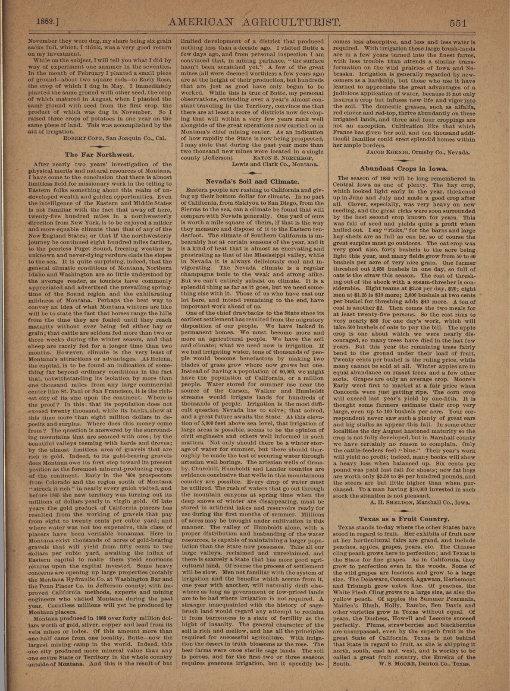
November they were dug, my share being six grain limited development of a district that produced sacks full, which, I think, was a very good return nothing less than a decade ago. I visited Butte a on my investment. few days ago, and from personal inspection I am While on the subject, I will tell you what I did by convinced that, in mining parlance, "the surface way of experiment one summer in the seventies.hasn't been scratched yet." A few of the great In the month of February I planted a small piecemines (all were deemed worthless a few years ago) of ground-about two square rods-to Early Rose,are at the height of their production, but hundreds the crop of which I dug in May. I immediatelythat are just as good have only begun to be planted the same ground with other seed, the crop worked. While this is true of Butte, my personal of which matured in August, when I planted theobservations, extending over a year's almost con- same ground with seed from the first crop, thestant traveling in the Territory, convince me that product of which was dug in November. So I there are at least a score of distrícts now develop- raised three crops of potatoes in one year on theing that will within a very few years rank well same piece of land. This was accomplished by the alongside of the great operations now carried on in aid of irrigation.Montana's chief mining center. As an indication RoBERT CoPE, San Joaquin Co., Cal.of how rapidly the State is now being prospected, I may state that during the past year more than two thousand new mines were located in a single The Far Northwest. county (Jefferson). EATON B. NORTHROP, After nearly two years' investigation of the Lewis and Clark Co., Montana. physical merits and natural resources of Montana, I have come to the conclusion that there is almost Nevada's Soil and Climate. limitless field for missionary work in the telling to Eastern folks something about this realm of un-Eastern people are rushing to California and giv- developed wealth and golden opportunities. Even ing up their bottom dollar for climate. In no part the intelligence of the Eastern and Middle States of California, from Siskiyou to San Diego, from the Sierras to the sea, can a climate be found that will is not familiar with the fact that away off here, twenty-five hundred miles in a northwesterly compare with Nevada generally. One yard of ours direction from New York, is to be enjoyed a milder is worth a mile square of theirs, if that is the way and more equable climate than that of any of the they measure and dispose of it to the Eastern ten-New England States; or that if the northwesterly derfoot. The climate of Southern California is un- journey be continued eight hundred miles farther, bearably hot at certain seasons of the year, and it to the peerless Puget Sound, freezing weather is is a kind of heat that is almost as enervating and unknown and never-dying verdure clads the slopes prostrating as that of the Mississippi valley, while to the sea. It is quite surprising, indeed, that the in Nevada it is always deliciously cool and in- general climatic conditions of Montana, Northern vigorating. The Nevada climate is a regular Idaho and Washington are so little understood by champagne tonic to the weak and strong alike. the average reader, as tourists have commonly But we can't entirely subsist on climate. It is a appreciated and advertised the prevailing spring-splendid thing as far as it goes, but we need some-time of the Sound region and the exhilarating thing else with it. Those of us who have cast our mildness of Montana. Perhaps the best way to lot here, and intend remaining to the end, have convey an idea of what Montana winters are like important work ahead of us. will be to state the fact that horses range the hills One of the chief drawbacks to the State since its from the time they are foaled until they reach earliest settlement has resulted from the migratory disposition of our people. We have lacked in maturity without ever being fed either hayor grain; that cattle are seldom fed more than two or permanent homes. We must become more and more an agricultural people. We have the soil three weeks during the winter season, and that sheep are rarely fed for a longer time than two and climate; what we need now is irrigation. If months. However, climate is the very least of we had irrigating water, tens of thousands of peo-Montana's attractions or advantages. At Helena, ple would become benefactors by making two the capital, is to be found an indication of some-blades of grass grow where now grows but one. thing far beyond ordinary conditions in the fact Instead of having a population of 60,000, we might have the population of California, or a million that, notwithstanding its isolation by more than people. Water stored for summer use near the one thousand miles from any large commercial source of the Carson, Walker and Humboldt center like St. Paul or San Francisco, it is the rich- est city of its size upon the continent. Where is streams would irrigate lands for hundreds of thousands of people. Irrigation is the most diffi- the proof? In this: that its population does not exeeed twenty thousand, while its banks.show at cult question Nevada has to solve; that solved, and a great future awaits the State. At this eleva- this time more than eight million dollars in de- tion of 5,000 feet above sea level, that irrigation of posits and surplus. Where does this money come large areas is possible, seems to be the opinion of from ? The question is answered by the surround- civil engineers and others well informed in such ing mountains that are seamed with ores; by the beautiful valleys teeming with herds and droves; matters. Not only should there be a winter stor- by the almost limitless area of gravels that are age of water for summer, but there should thor- rieh in gold. Indeed, to its gold-bearing gravels oughly be made the test of securing water through artesian well borings. The artesian wells of Orms- does Montana owe its first step toward its present position as the foremost mineral-producing region by, Churchill, Humboldt and Lander counties are of the continent. Early in the '60s prospectors evidence conclusive that wells in this mountainous from Colorado and the region south of Montana country are possible. Every drop of water must "struck it rich" in nearly every gulch visited, and be utilized. The rush of waters that go out through before 1865 the new territory was turning out its the mountain canyons at spring time when the millions of dollars yearly in virgin gold. Of late deep snows of winter are disappearing, must be years the gold product of California placers has stored in artificial lakes and reservoirs ready for resulted from the working of gravels that pay use during the first months of summer. Millions from eight to twenty cents per cubic yard; and of acres may be brought under cultivation in this where water was not too expensive, this class of manner. The valley of Humboldt alone, with a placers have been veritable bonanzas. Here in proper distribution and husbanding of the water Montana exist thousands of acres of gold-bearing resources, is capable of maintaining a larger popu- gravels that will yield from fifty cents to two lation than the State now possesses. Take all our dollars per cubic yard, awaiting the influx of large valleys, reclaimed and unreclaimed, and Eastern capital to make them yield enormousthere is scarcely a State that has more good agri- réturns upon the capital invested. Some heavy cultural land. Of course the process of settlement concerns are opening up large properties (notably will be slow. Men not familiar with the system of the Montana Hydraulic Co. at Washington Bar and irrigation and the benefits which accrue from it, the Penn Placer Co. in Jefferson county) with im-one year with another, will naturally drift else-where as long as government or low-priced lands proved California methods, experts and mining engineers who visited Montana during the past are to be had where irrigation is not required. A year. Countless millions will yet be produced by stranger unacquainted with the history of sage-Montana placers. brush land would regard any attempt to reclaim Montana produeed in 1888 over forty million dol-it from barrenness to a state of fertility as the lars worth of gold, silver, copper and lead from its hight of insanity. The general character of the vein mines or lodes. Of this amount more than soil is rich and mellow, and has all the principles -one-half came from one locality, Butte-now the required for successful agriculture. With irriga- largest mining camp in the world. Indeed, this tion the desert in truth blossoms as the rose. The best farms were once sterile sage lands. The soil one city produced more mineral value than any is porous, and for the first two or three seasons -one entire State or Territory in the whole country -outside of Montana. And this is the result of but requires generous irrigation, but it speedily be-
comes less absorptive, and less and less water is required. With irrigation these large brush-lands are in a few years turned into the finest farms, with less trouble than attends a similar trans- formation on the wild prairies of Iowa and Ne- braska. Irrigation is generally regarded by new- comers as a hardship, but those who use it have learned to appreciate the great advantages of a judicious application of water, because it not only insures a crop but infuses new life and vigor into the soil. The domestic grasses, such as alfalfa, red clover and red-top, thrive abundantly on these irrigated lands, and three and four croppings are not an exception. Cultivation like that which France has given her soil, and ten thousand addi- tionäl families could erect splendid homes within her ample borders. JACoB KoENIG, Ormsby Co., Nevada.
Abundant Crops in Iowa. The season of 1889 will. be long remembered in Central Iowa as one of plenty. The hay crop, which looked light early in the year, thickened up in June and July and made a good crop after all. Clover, especially, was very heavy on new seeding, and the great ricks were soon surrounded by the best second crop known for years. This was full of seed and yields quite a profit when hulled out. I say "ricks," for the barns and large hay-sheds are as full as can be, so of course the great surplus must go outdoors. The oat crop was very good also, forty bushels to the acre being light this year, and many fields grow from 50 to 60 bushels per acre of very nice grain. One farmer threshed out 2,650 bushels in one day, so full of oats is the straw this season. The cost of threshing out of the shock with a steam-thresher is con- siderable. Eight teams at $2.50 per day, $20; eight men at $1.25 is $10 more; 2,000 bushels at two cents per bushel for threshing adds $40 more. A ton of coal is another $2. Then comes the two meals for at least twenty-five persons. So the cost runs to very nearly $80 for one day's work, which will take 500 bushels of oats to pay the bill. The apple crop is one about which we were nearly dis- couraged, so many trees have died in the last few years. But this year the remaining trees fairly bend to the ground under their load of fruit. Twenty cents per bushel is the ruling price, while many cannot be sold at all. Winter apples are in equal abundance on russet trees and a few other sorts. Grapes are only an average crop. Moore's Early went first to market at a fair price when Concords were just getting ripe. The corn crop will exceed last year's yield by one-fifth. It is thought some farmers estimate their crop very large, even up to 100 bushels per acre. Your cor- respondent never saw such a plenty of great ears and big stalks as appear this fall. In some other localities the dry August hastened maturity so the crop is not fully developed, but in Marshall county we have certainly no reason to complain. Only the cattle-feeders feel "blue." Their year's work will yield no profit; indeed, many books will show a heavy loss when balanced up. Six cents per pound was paid last fall for shoats; now fat hogs are worth only $3.50 to $4 per hundred pounds, and the steers are but little higher than when pur- chased. To a man having $10,000 invested in such stock the situation is not pleasant.
A. H. SHELDoN, Marshall Co., Iowa.
Texas as a Fruit Country. Texas stands to-day where the other States have stood in regard to fruit. Her exhibits of fruit now at her horticultural fairs are grand, and include peaches, apples, grapes, pears, etc. The Chinese cling peach grows here to perfection; and Texas is the State for fine grapes. As in California, they grow to perfection even in the woods. Some of the wild grapes are luscious and grow to a large size. The Delaware, Concord, Agawam, Herbemont and Triumph grow extra fine. Of peaches, the White Flesh Cling grows to a large size, as also the yellow peach. Of apples the Summer Pearmain, Maiden's Blush, Holly, Rambo, Ben Davis and other varieties grow in Texas without equal. Of pears, the Duchess, Howell and Leconte succeed perfectly. Plums, strawberries and blackberries are unsurpassed, even by the superb fruit in the great State of California. Texas is not behind that State in regard to fruit, as she is shipping it north, south, east and west, and is worthy to be ealled a great fruit country, the Eureka of the
W.S. MooRE, Denton Co., Texas.
South.
PENDING — the worker run has not reached this page yet. Re-run make_review.py as the run progresses to fill it in.
PENDING — the worker run has not reached this page yet. Re-run make_review.py as the run progresses to fill it in.
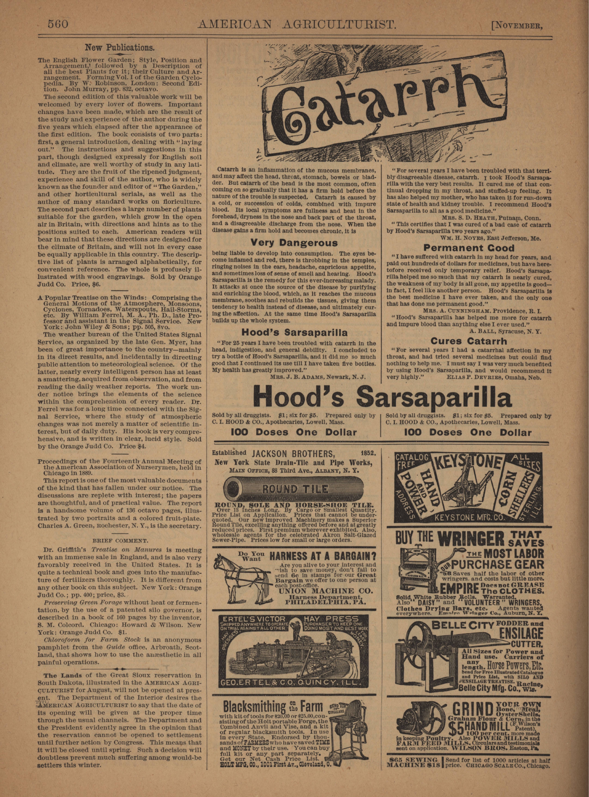
[NOVEMBER,
翁
"For several years I have been troubled with that terri- bly disagreeable disease, catarrh. I took Hood's Sarsaparilla with the very best results. It cured me of that con- tinual dropping in my throat, and stuffed-up feeling. It has also helped my mother, who has taken it for run-down state of health and kidney trouble. I recommend Hood's Sarsaparilla to all as a good medicine." MRS. S. D. HEATH, Putnam, Conn. "This certifies that I was cured of a bad case of catarrh by Hood's Sarsaparilla two years ago." WM. H. NoYEs, East Jefferson, Me. Permanent Cood "I have suffered with catarrh in my head for years, and paid out hundreds of dollars for medicines, but have here- tofore received only temporary relief. Hood's Sarsaparilla helped me so much that my catarrh is nearly cured, the weakness of my body is all gone, my appetite is good- in fact, I feel like another person. Hood's Sarsaparilla is the best medicine I have ever taken, and the only one that has done me permanent good." MRS.A. CUNNINGHAM.Providence, R.I. "Hood's Sarsaparilla has helped me more for catarrh and impure blood than anything else I ever used."
A. BaLL, Syracuse, N. Y.
"For several years I had a catarrhal affection in my throat, and had trled several medicines but could find nothing to help me. I must say I was very much benefited by using Hood's Sarsaparilla, and would recommend it very highly." ELIAs P. DEVRIES, Omaha, Neb.
Ferrel was for a long time connected with the Sig-Hood's Sarsaparilla Sold by all druggists. $1; six for $5. Prepared only by
C. I. HoOD & CO., Apothecaries, Lowell, Mass. 100 Doses One Dollar CATALOG FREEKEYSTONE
New Publications. The English Flower Garden; Style, Position and Arrangement,! followed by a Description of all the best Plants for it; their Culture and Arrangement. Forming Vol. I of the Garden Cyclo- pedia. By W. Robinson, London: Second Edition. John Murray, pp. 832, octavo. The second edition of this valuable work will be welcomed by every lover of flowers. Important changes have been made, which are the result of the study and experience of the author during the five years which elapsed after the appearance of the first edition. The book consists of two parts: first, a general introduction, dealing with "laying out."The instructions and suggestions in this2 part, though designed expressly for English soil and climate, are well worthy of study in any lati-Catarrh is an inflammation of the mucous membranes, tude. They are the fruit of the ripened judgment, and may affect the head, throat, stomach, bowels or blad- experience and skill of the author, who is widely der. But catarrh of the head is the most common, often known as the founder and editor of "The Garden," coming on so gradually that it has a firm hold before the and other horticultural serials, as well as the nature of the trouble is suspected. Catarrh is caused by author of many standard works on floriculture.a cold, or succession of colds, combined with impure The second part describes a large number of plants blood. Its local symptoms are fullness and heat in the suitable for the garden, which grow in the open forehead, dryness in the nose and back part of the throat, air in Britain, with directions and hints as to the and a disagreeable discharge from the nose. When the positions suited to each. American readers will disease gains a firm hold and becomes chronie, it is bear in mind that these directions are designed for Very Dangerous the climate of Britain, and will not in every case being liable to develop into consumption. The eyes be- be equally applicable in this country. The descrip- come inflamed and red, there is throbbing in the temples, tive list of plants is arranged alphabetically, for ringing noises in the ears, headache, capricious appetite, convenient reference. The whole is profusely il- and sometimes loss of sense of smell and hearing. Hood's lustrated with wood engravings. Sold by Orange Sarsaparilla is the remedy for this ever-increasing malady. Judd Co. Price, $6. It attacks at once the source of the disease by purifying and enriching the blood, which, as it reaches the mucous A Popular Treatise on the Winds: Comprising the membrane, soothes and rebuilds the tissues, giving them General Motions of the Atmosphere, Monsoons, tendency to health instead of disease, and ultimately cur-Cyclones, Tornadoes, Waterspouts, Hail-Storms, ing the affection. At the same time Hood's Sarsaparilla etc. By William Ferrel, M. A., Ph. D., late Pro- builds up the whole system. fessor and assistant in the Signal Service. New York: John Wiley & Sons; pp. 505, 8vo. The weather bureau of the United States Signal Hood's Sarsaparilla Service, as organized by the late Gen. Myer, has "For 25 years I have been troubled with catarrh in the been of great importance to the country-mainly head, indigestion, and general debility. I concluded to try a bottle of Hood's Sarsaparilla, and it did me so much in its direct results, and incidentally in directing good that I continued its use till I have taken five bottles. public attention to meteorological science. Of the My health has greatly improved." latter, nearly every intelligent person has at least MRS.J.B.ADAMS,Newark,N.J. a smattering, acquired from observation, and from reading the daily weather reports. The work under notice brings the elements of the science within the comprehension of every reader. Dr. Sold by all druggists. $1; six for $5. Prepared only by nal Service, where the study of atmospheric
C. I. HOOD & CO., Apothecaries, Lowell, Mass.
changes was not merely a matter of scientific interest, but of daily duty. His book is very compre-100 Doses One Dollar hensive, and is written in clear, lucid style. Sold by the Orange Judd Co. Price $4. Established 1852. JACKSON BROTHERS, Proceedings of the Fourteenth Annual Meeting of New York State Drain-Tile and Pipe Works, the American Association of Nurserymen, held in MAIN OFFICE, 88 Third Ave., ALBANY, N. Y. Chicago in 1889. This report is one of the most valuable documents of the kind that has fallen under our notice. TheROUND TILE discussions are replete with interest; the papers are thoughtful, and of practical value. The report ROUND,SOLE AND HORSE-SHOETILE. Over 18 inches Long. ByCargo or SmallestQuantity. is a handsome volume of 136 octavo pages, illus-Prices that cannot be under-Price List on Application. trated by two portraits and a colored fruit-plate. quoted. Our new improved Machinery makes a Superior Round Tile, excelling anything offered before and at greatly Charles A. Green, Rochester, N. Y., is the secretary. reduced prices. First premium wherever exhibited. Also, wholesale agents for the celebrated Akron Salt-Glazed Sewer-Pipe. Prices low for small or large orders. BRIEF COMMENT. Dr. Grifth's Treatise on Manures is meetingDo You with an immense sale in England, and is also very Want HARNESS AT A BARGAIN? favorably received in the United States. It is Are you alive to your interest and wish to save money, don't fail to quite a technical book and goes into the manufac- send 6c in stamps for our Great Bargain we offer to one person at ture of fertilizers thoroughly. It is different from each post-office. any other book on this subject. New York: Orange UNION MACHINE CO. Judd Co.; pp. 400; price, $3.Harness Department, Preserving Green Forage without heat or fermen-PHILADELPHIA,PA, tation, by the use of a patented silo governor, is described in a book of 160 pages by the inventor, ERTEL'SVICTOR HAY PRESS
S. M. Colcord. Chicago: Howard & Wilson. NewOTHER York: Orange Judd Co. $1. Chloroform for Farm Stock is an anonymous pamphlet from the Guide office, Arbroath, Scot- land, that shows how to use the anæsthetic in all painful operations. The Lands of the Great Sioux reservation in South Dakota, illustrated in the AMERICAN AGRI-GEO.ERTEL&CO,QUINCY,ILL CULTuRisT for August, will not be opened at pres- ent. The Department of the Interior desires the
on AMERICAN AGRICULTURIST to say that the date of SEND FOR CIRCULARS
its opening will be given at the proper time with kit of tools for *20.00 or $25.00,con- through the usual channels. The Department and sistingof the Holt portable Forge,the Combined Anvil and Vise, and a kit the President evidently agree in the opinion that of regular blacksmith tools. In use the reservation cannot be opened to settlement in every State. Endorsed by thou- until further action by Congress. This means that sands of FARMERS who have saved TIME and MONEY by their use. You can buy it will be closed until spring. Such a decision will full kit or any part separately. doubtless prevent much suffering among would-be Get our Net Cash Price List. settlers this winter. HOLT MFG.CO.,1001 First Av.,Cleveland,0.
CON
THAT SAVES
Saves half the labor of other wringers. and costs but little more. Does not GREASE The CLOTHES. Solid White Rubber Rolls. Warranted. Also DAISY" andVOLUNTEER"WRINGERS, Agents wauted Clothes Drying Bars, etc. everywhere.Emaire Wringer Co., Auburn, N. Y.
CUTTER. All Sizes for Power and Hand use.Carriers of any length. Horse Powers, Etc. Send for Free Illustrated Catalogue and Prlce List, with SILO AND
YOUR OWN Bone,Meal, OysterShells,
Patent). 100 per cent, more made in keeping Poultry.Also POWER MILLS and FARM FEED MILLS. Circularsand testimonials sent on application. WILSON BROS. Easton, Pa $65 SEWINGSend for list of 1000 articles at half MACHINE S1S price. CHICAGO SCALE Co., Chicago.
PENDING — the worker run has not reached this page yet. Re-run make_review.py as the run progresses to fill it in.
PENDING — the worker run has not reached this page yet. Re-run make_review.py as the run progresses to fill it in.
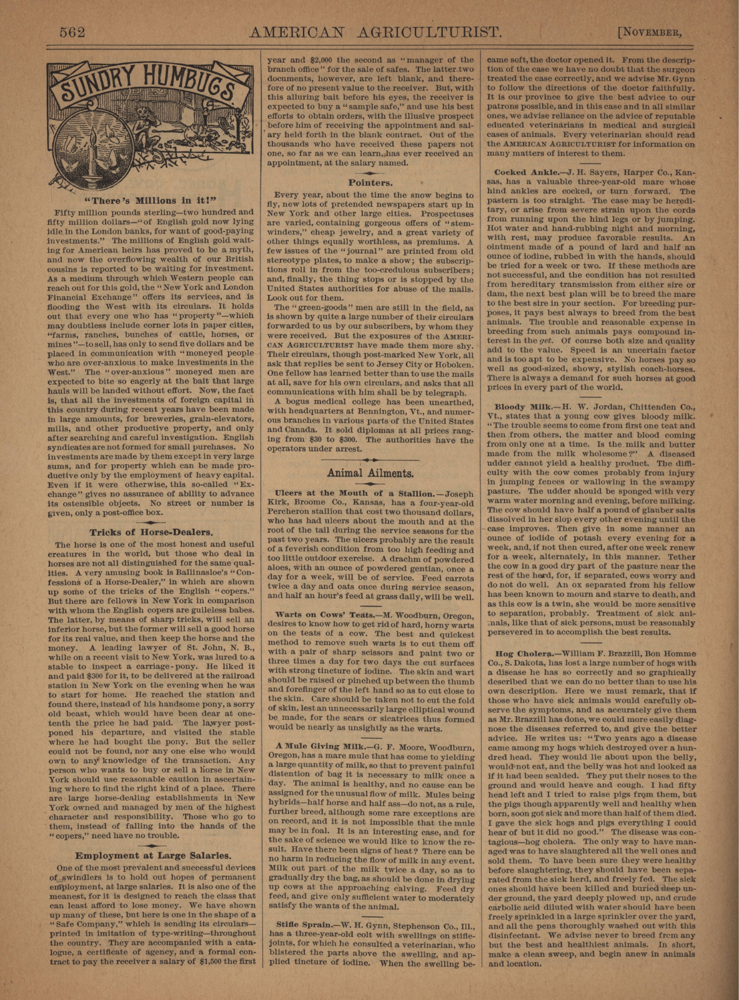
year and $2,000 the second as "manager of the branch office" for the sale of safes. The latter two documents, however, are left blank, and there- fore of no present value to the receiver. But, with this alluring bait before his eyes, the receiver is expected to buy a "sample safe," and use his best efforts to obtain orders, with the illusive prospect S before him of receiving the appointment and salary held forth in the blank contract. Out of the thousands who have received these papers not one, so far as we can learn, has ever received an appointment, at the salary named.
Pointers.
"There's Millions in it!" fly, new lots of pretended newspapers start up in Fifty million pounds sterling-two hundred and New York and other large cities. Prospectuses fifty million dollars-"of English gold now lying are varied, containing gorgeous offers of "stem- idle in the London banks, for want of good-payingwinders," cheap jewelry, and a great variety of investments." The millions of English gold wait-other things equally worthless, as premiums. A ing for American heirs has proved to be a myth, few issues of the "journal" are printed from old and now the overflowing wealth of our British stereotype plates, to make a show; the subscrip- cousins is reported to be waiting for investment. tions roll in from the too-credulous subscribers; As a medium through which Western people can and, finally, the thing stops or is stopped by the reach out for this gold, the "New York and London United States authorities for abuse of the mails. Financial Exchange" offers its services, and is Look out for them. flooding the West with its circulars. It holds The "green-goods" men are still in the field, as out that every one who has "property"-which is shown by quite a large number of their circulars may doubtless include corner lots in paper cities, forwarded to us by our subscribers, by whom they "farms, ranches, bunches of cattle, horses, orwere received. But the exposures of the AMERI- mines"-to sell, has only to send five dollars and beCAN AGRICULTURIST have made them more shy. placed in communication with "moneyed people Their circulars, though post-marked New York, all who are over-anxious to make investments in the ask that replies be sent to Jersey City or Hoboken. West." The "over-anxious" moneyed men are One fellow has learned better than to use the mails expected to bite so eagerly at the bait that large at all, save for his own circulars, and asks that all hauls will be landed without effort. Now, the fact communications with him shall be by telegraph. is, that all the investments of foreign capital in A bogus medical college has been unearthed, this country during recent years have been made with headquarters at Bennington, Vt., and numer- in large amounts, for breweries, grain-elevators, ous branches in various parts of the United States mills, and other productive property, and onlyand Canada. It sold diplomas at all prices rang- after searching and careful investigation. English ing from $30 to $300. The authorities have the syndicates are not formed for small purchases. No operators under arrest. investments are made by them except in very large sums, and for property which can be made pro- duetive only by the employment of heavy capital. Animal Ailments. Even if it were otherwise, this so-called “Exchange" gives no assurance of ability to advance Ulcers at the Mouth of a Stallion.-Joseph its ostensible objects. No street or number is Kirk, Broome Co., Kansas, has a four-year-old given, only a post-office box. Percheron stallion that cost two thousand dollars, who has had ulcers about the mouth and at the Tricks of Horse-Dealers. root of the tail during the service seasons for the past two years. The ulcers probably are the result The horse is one of the most honest and useful of a feverish condition from too high feeding and creatures in the world, but those who deal in too little outdoor exercise. A drachm of powdered horses are not all distinguished for the same qual- aloes, with an ounce of powdered gentian, once a ities. A very amusing book is Ballinasloe's "Con- day for a week, will be of service. Feed carrots fessions of a Horse-Dealer," in which are shown twice a day and oats once during service season, up some of the tricks of the English "copers." and half an hour's feed at grass daily, will be well. But there are fellows in New York in comparison with whom the English copers are guileless babes.
The latter, by means of sharp tricks, will sell an desires to know how to get rid of hard, horny warts inferior horse, but the former will sell a good horse on the teats of a cow. The best and quickest for its real value, and then keep the horse and the method to remove such warts is to cut them off money. A leading lawyer of St. John, N. B., with a pair of sharp scissors and paint two or while on a recent visit to New York, was lured to.a three times a day for two days the cut surfaces stable to inspect a carriage-pony. He liked it with strong tincture of iodine. The skin and wart and paid $300 for it, to be delivered at the railroad should be raised or pinched up between the thumb station in New York on the evening when he was and forefinger of the left hand so as to cut close to to start for home. He reached the station and the skin. Care should be taken not to cut the fold found there, instead of his handsome pony, a sorry of skin, lest an unnecessarily large elliptical wound old beast, which would have been dear at one- be made, for the scars or sicatrices thus formed tenth the price he had paid. The lawyer post-would be nearly as unsightly as the warts. poned his departure, and visited the stable where he had bought the pony. But the seller A Mule Giving Milk.—G. F. Moore, Woodburn, could not be found, nor any one else who would Oregon, has a mare mule that has come to yielding own to any knowledge of the transaction. Any a large quantity of milk, so that to prevent painful person who wants to buy or sell a horse in New distention of bag it is necessary to milk once a York should use reasonable caution in ascertain-
ing where to find the right kind of a place. There assigned for the unusual flow of milk. Mules being are-large horse-dealing establishments in New
York owned and managed by men of the highest
character and responsibility. Those who go to on record, and it is not impossible that the mule them, instead of falling into the hands of the may be in foal. It is an interesting case, and for "copers," need have no trouble. the sake of science we would like to know the result. Have there been signs of heat? There can be Employment at Large Salaries.
One of the most prevalent and successful devicesMilk out part of the milk twice a day, so as to of swindlers is to hold out hopes of permanentgradually dry the bag, as should be done in drying empployment, at large salaries. It is also one of theup cows at the approaching calving. Feed dry meanest, for it is designed to reach the class thatfeed, and give only sufficient water to moderately can least afford to lose money. We have shownsatisfy the wants of the animal. up many of these, but here is one in the shape of a "Safe Company," which is sending its circulars—Stifle Sprain.—W. H. Gynn, Stephenson Co., Ill., printed in imitation of type-writing-throughouthas a three-year-old colt with swellings on stifle- the country. They are accompanied with a cata-joints, for which he consulted a veterinarian, who logue, a certificate of agency, and a formal con-blistered the parts above the swelling, and ap- tract to pay the receiver a salary of $1,500 the first
came soft, the doctor opened it. From the description of the case we have no doubt that the surgeon treated the case correctly, and we advise Mr. Gynn to follow the directions of the doctor faithfully. It is our province to give the best advice to our patrons possible, and in this case and in all similar ones, we advise reliance on the advice of reputable educated veterinarians in medical and surgical cases of animals. Every veterinarian should read the AMERICAN AGRICULTURIST for information on many matters of interest to them.
Cocked Ankle.-J. H. Sayers, Harper Co., Kansas, has a valuable three-year-old mare whose hind ankles are cocked, or turn forward. The pastern is too straight. The case may be hereditary, or arise from severe strain upon the cords from running upon the hind legs or by jumping. Hot water and hand-rubbing night and morning, with rest, may produce favorable results. An ointment made of a pound of lard and half an ounce of iodine, rubbed in with the hands, should be tried for a week or two. If these methods are not successful, and the condition has not resulted from hereditary transmission from either sire or dam, the next best plan will be to breed the mare to the best sire in your section. For breeding pur- poses, it pays best always to breed from the best animals. The trouble and reasonable expense in breeding from such animals pays compound interest in the get. Of course both size and quality add to the value. Speed is an uncertain factor and is too apt to be expensive. No horses pay so well as good-sized, showy, stylish coach-horses. There is always a demand for such horses at good prices in every part of the world.
Bloody Milk.—H. W. Jordan, Chittenden Co., Vt., states that a young cow gives bloody milk. "The trouble seems to come from first one teat and then from others, the matter and blood coming from only one at a time. Is the milk and butter made from the milk wholesome?" A diseased udder cannot yield a healthy product. The diffi- culty with the cow comes probably from injury in jumping fences or wallowing in the swampy pasture. The udder should be sponged with very warm water morning and evening, before milking. The cow should have half a pound of glauber salts dissolved in her slop every other evening until the case improves. Then give in some manner an ounce of iodide of potash every evening for a week, and, if not then cured, after one week renew for a week, alternately, in this manner. Tether the cow in a good dry part of the pasture near the rest of the herd, for, if separated, cows worry and do not do well. An ox separated from his fellow has been known to mourn and starve to death, and as this cow is a twin, she would be more sensitive to separation, probably. Treatment of sick ani- nals, like that of sick persons, must be reasonably persevered in to accomplish the best results.
Hog Cholera.-William F. Brazzill, Bon Homme Co., S. Dakota, has lost a large number of hogs with a disease he has so correctly and so graphically described that we can do no better than to use his own description. Here we must remark, that if those who have sick animals would carefully ob- serve the symptoms, and as accurately give them as Mr. Brazzill has done, we could more easily diag- nose the diseases referred to, and give the better advice. He writes us: "Two years ago a disease came among my hogs which destroyed over a hundred head. They would lie about upon the belly, would not eat, and the belly was hot and looked as if it had been scalded. They put their noses to the ground and would heave and cough. I had fifty head left and I tried to raise pigs from them, but the pigs though apparently well and healthy when born, soon got sick and more than half of them died. I gave the sick hogs and pigs everything I could hear of but it did no good." The disease was con- tagious-hog cholera. The only way to have managed was to have slaughtered all the well ones and sold them. To have been sure they were healthy before slaughtering, they should have been separated from the sick herd, and freely fed. The sick ones should have been killed and burieddeep under ground, the yard deeply plowed up, and crude carbolic acid diluted with water should have been freely sprinkled in a large sprinkler over the yard, and all the pens thoroughly washed out with this disinfectant. We advise never to breed frcm any but the best and healthiest animals. In short, make a clean sweep, and begin anew in animals and location.
PENDING — the worker run has not reached this page yet. Re-run make_review.py as the run progresses to fill it in.
PENDING — the worker run has not reached this page yet. Re-run make_review.py as the run progresses to fill it in.
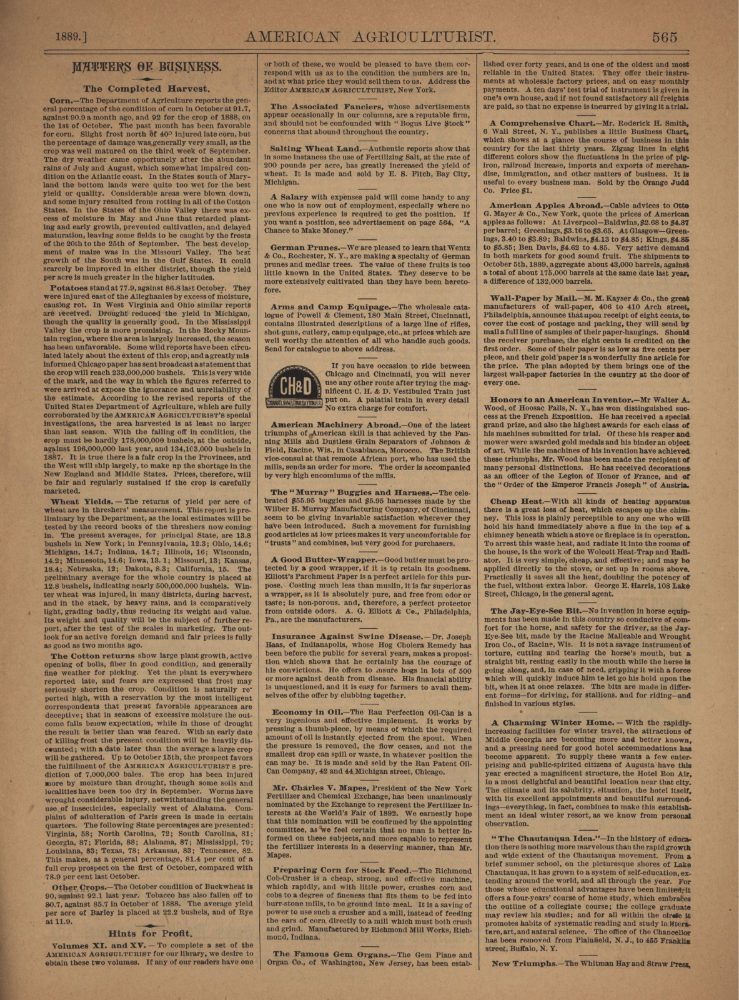
The Completed Harvest. Corn.-The Department of Agriculture reports the general percentage of the condition of corn in October at 91.7, against 90.9 a month ago, and 92 for the crop of 1888, on the 1st of October. The past month has been favorable for corn. Slight frost north ôf 40° injured late corn, but the percentage of damage was generally very small, as the crop was well matured on the third week of September. The dry weather came opportunely after the abundant rains of July and August, which somewhat impaired condition on the Atlantic coast. In the States south of Mary- land the bottom lands were quite too wet for the best yield or quality. Considerable areas were blown down, and some injury resulted from rotting in all of the Cotton States. In the States of the Ohio Valley there was excess of moisture in May and June that retarded plant- ing and early growth, prevented cultivation, and delayed maturation, leaving some fields to be caught by the frosts of the 20th to the 25th of September. The best develop ment of maize was in the Missouri Valley. The best growth of the South was in the Gulf States. It could scarcely be improved in either district, though the yield per acre is much greater in the higher latitudes. Potatoes standat 77.9,against 86.8last October. They were injured east of the Alleghanies by excess of moisture, causing rot. In West Virginia and Ohio similar reports are received. Drought reduced the yield in Michigan, though the quality is generally good. In the Mississippi Valley the crop is more promising. In the Rocky Moun- tain region, where the area is largely increased, the season has been unfavorable. Some wild reports have been circu- lated lately about the éxtent of this crop, and agreatly mis informed Chicago paper has sent broadcast astatement that the crop will reach 233,000,000 bushels, This is very wide of the mark, and the way in which the figures referred to were arrived at expose the ignorance and unreliability of the estimate. According to the revised reports of the United States Department of Agriculture, which are fully corroborated by the AMERICAN AGRICULTURIST's special investigations, the area harvested is at least no larger than last season. With the falling off in condition, the erop must be hardly 178,000,000 bushels, at the outside, against 196,000,000 last year, and 134,103,000 bushels in
1887. It is true there is a fair crop in the Provinces, and the West will ship largely, to make up the shortage in the New England and Middle States. Prices, therefore, will be fair and regularly sustained if the crop is carefully marketed. Wheat Yields.-The returns of yield per acre of wheat are in threshers' measuremment. This report is preliminary by the Department, as the local estimates will be tested by the record books of the threshers now coming in. The present averages, for principal State, are 13.8 bushels in New York; in Pennsylvania, 12.3; Ohio, 14.6; Michigan, 14.7; Indiana, 14.7; Illinois, 16; Wisconsin,
14.2; Minnesota, 14.6; Iowa, 13.1; Missouri, 13; Kansas,
18.4; Nebraska, 12; Dakota, 8.3; California, 15. The preliminary average for the whole country is placed at
12.8 bushels, indicating nearly 500,000,000 bushels. Winter wheat was injured, in many districts, during harvest, and in the stack, by heavy rains, and is comparatively light, grading badly, thus reducing its weight and value. Its weight and quality will be the subject of further report, after the test of the scales in marketing. The out- look for an active foreign demand and fair prices is fully as good as two months ago. The Cotton returns show large plant growth, active opening of bolls, fiber in good condition, and generally fine weather for picking. Yet the plant is everywhere reported late, and fears are expressed that frost may seriously shorten the crop. Condition is naturally reported high, with a reservation by the most intelligent correspondents that present favorable appearances are deceptive; that in seasons of excessive moisture the out-come falls beiow expectation, while in those of drought the result is better than was feared. With an early date of killing frost the present condition will be heavily dis- counted; with a date later than the average a large crep will be gathered. Up to October 15th, the prospect favors the fulfillment of the AMERICAN AGRICULTURIST's pre- diction of 7,000,000 bales. The erop has been injured more by moisture than drought, though some soils and localities have been too dry in September. Worms have wrought considerable injury, netwithstanding the general use of insecticides, especially west of Alabama. Com- plaint of adulteration of Paris green is made in certain quarters. The following State percentages are presented: Virginia, 58; North Carolina, 72; South Carolina, 81; Georgia, 87; Florida, 88; Alabama, 87; Mississippi, 79; Louisiana, 83; Texas, 78; Arkansas, 83; Tennessee, 82. This makes, as a general percentage, 81.4 per cent of a full crop prospect on the first of October, compared with
78.9 per cent last October. Other Crops.-The October condition of Buckwheat is 90,against 92.1 last year. Tobacco has also fallen off to
80.7, against 85.7 in October of 1888. The average yield per acre of Barley is placed at 22.2 bushels, and of Rye at 11.9.
Hints for Profit. Volumes XI. and XV.- To complete a set of the AMERICAN AGRIGULTURIST for our library, we desire to obtain these two volumes. If any of our readers have one
or both of these, we would be pleased to have them cor-lished over forty years, and is one of the oldest and most respond with us as to the condition the numbers are in, reliable in the United States. They offer their instru- and at what price they would sell them to us. Address the ments at wholesale factory prices, and on easy monthly Editor AMERICAN AGRICULTURIST, New York. payments. A ten days' test trial of instrument is given in one's own house, and if not found satisfactory all freights The Associated Fanciers, whose advertisements are paid, so that no expense is incurred by giving it a trial. appear occasionally in our columns, are a reputable firm, and should not be confounded with"Bogus Live Stock" A Comprehensive Chart.-Mr. Roderick H. Smith, concerns that abound throughout the country. 6 Wall Street, N. Y., publishes a little Business Chart, which shows at a glance the course of business in this country for the last thirty years. Zigzag lines in eight Salting Wheat Land.-Authentic reports show that in some instances the use of Fertilizing Salt, at the rate of different colors show the fluctuations in the price of pig- 200 pounds per acre, has greatly increased the yield of iron, railroad increase, imports and exports of merchan- wheat. It is made and sold by E. S. Fitch, Bay City, dise, immigration, and other matters of business. It is Michigan. useful to every business man. Sold by the Orange Judd Co. Price $1. A Salary with expenses paid will come handy to any one who is now out of employment, especially where no American Apples Abroad.-Cable advices to Otto previous experience is require to get the position. If G. Mayer & Co., New York, quote the prices of American you want a position, see advertisement on page 564, "A apples as follows: At Liverpool-Baldwins, $2.68 to $4.87 Chance to Make Money." per barrel; Greenings, $3.t6 to$3.65. At Glasgow-Greenings, 3.40 to $3.89; Baldwins, $4.13 to $4.85; Kings, $4.85 German Prunes.-We are pleased to learn that Wentz to $5.85; Ben Davis, $4.62 to 4.85. Very aetive demand & Co., Rochester, N. Y., are making a specialty of German in both markets for good sound fruit. The shipments to prunes and medlar trees. The value of these fruits is too October 5th, 1889, aggregate about 43,000 barrels, against little known in the United States. They deserve to be a total of about 175,000 barrels at the same date last year, a difference of 132,000 barrels. more extensively cultivated than they have been hereto- fore. Wall-Paper by Mail.-M. M. Kayser & Co., the great Arms and Camp Equipage.-The wholesale cata-manufacturers of wall-paper, 406 to 410 Arch street, logue of Powell & Clement, 180 Main Street, Cincinnati, Philadelphia, announce that upon receipt of eight cents, to cover the cost of postage and packing, they will send by contains illustrated descriptions of a large line of rifles, shot-guns, cutlery, camp equipage,ete.,at prices which are mailafull line of samples of their paper-hangings. Should well worthy the attention of all who handle such goods. the receiver purchase, the eight cents is credited on the Send for catalogue to above address. first order. Some of their paper is as low as five cents per piece, and their gold paper is a wonderfully fine article for If you have occasion to ride between the price. The plan adopted by them brings one of the Chicago and Cincinnati, you will never largest wall-paper factories in the ceuntry at the door of use any other route after trying the mag-every one. nificent C. H. & D. Vestibuled Train just
put on. A palatial train in every detail Honors to an American Inventor.-Mr Walter A. CNAT SA TINRGAYTINR Wood, of Hoosac Falls, N. Y., has won distinguished suc-No extra charge for comfort. cess at the French Exposition. He has received a special American Machinery Abroad.-One of the latest grand prize, and also the highest awards for each class of triumphs of American skill is that achieved by the Fan-his machines submitted for trial. Of these his reaper and ning Mills and Dustless Grain Separators of Johnson & mower were awarded gold medals and his binderan object Field, Racine, Wis., in Casablanca, Morocco. The British of art. While the machines of his invention have achieved vice-consul at that remote African port, who has used the these triumphs, Mr. Wood has been made the recipient of mills, sends an order for more. The order is accompanied many personal distinctions. He has received decorations by very high encomiums of the mills. as an officer of the Legion of Honor of France, and of the " Order of the Emperor Francis Joseph" of Austria The "Murray" Buggies and Harness.-The cele- brated $55.95 buggies and $5.95 harnesses made by the Cheap Heat.-With all kinds of heating apparatus Wilber H. Murray Manufacturing Company, of Cincinnati, there is a great loss of heat, which escapes up the chim- seem to be giving invariable satisfaction wherever they ney. This loss is plainly perceptible to any one who will hold his hand immediately above a flue in the top of a have been introduced. Such a movement for furnishing good articles at low prices makes it very uncomfortable for chimney beneath which a stove or fireplace is in operation. "trusts" and combines, but very good for purchasers. To arrest this waste heat, and radiate it into the rooms of the house, is the work of the Wolcott Heat-Trap and Radi- A Good Butter-Wrapper.-Good butter must be pro-ator. It is very simple, cheap, and effective; and may be tected by a good wrapper, if it is to retain its goodness. applied directly to the stove, or set up in rooms above. Elliott's Parchment Paper is a perfect article for this pur-Practically it saves all the heat, doubling the potency of pose. Costing much less than muslin, it is far superioras the fuel, without extra labor. George E. Harris, 108 Lake Street, Chicago, is the general agent. a wrapper, as it is absolutely pure, and free from odor or taste; is non-porous, and, therefore, a perfect proteetor from outside odors. A. G. Elliott & Ce., Philadelphia, The Jay-Eye-See Bit.-No invention in horse equip-Pa., are the manufacturers. ments has been made in this country so conducive of comfort for the horse, and safety for the driver, as the Jay-Eye-See bit, made by the Racine Malleable and Wrought Insurance Against Swine Disease.-Dr. Joseph Haas, of Indianapolis, whose Hog Cholera Remedy has Iron Co., of Racine, Wis. It is not a savage instrument of torture, cutting and tearing the horse's mouth, but a been before the public for several years, makes a proposi- straight bit, resting easily in the mouth while the herse is tion which shows that he certainly has the courage of his convictions. He offers. to insure hogs in lots of 500 going along, and, in case of need, gripping it with a force whieh will quickly induce him te let go his hold upon the or more against death from disease. His financial ability bit, when it at once relaxes. The bits are made in differ- is unquestioned, and it is easy for farmers to avail them- selves of the offer by clubbing together. ent forms-for driving, for stallions, and for riding-and finished in various styles. Economy in Oil.-The Rau Perfection Oil-Can is a very ingenious and effective implement. It works by A Charming Winter Home.- With the rapidly-pressing a thumb-piece, by means of which the required increasing facilities for winter travel, the attractions of amount of oll is instantly ejected from the spout. When Middle Georgia are becoming more and better known, the pressure is removed, the flow ceases, and not the and a pressing need for good hotel accommodations has smallest drop can spill or waste, in whatever position the become apparent. To supply these wants a few enter- can may be. It is made and sold by the Rau Patent Oil-prising and public-spirited citizens of Augusta have this Can Company, 42 and 44Michigan street, Chicago. year erected a magnificent structure, the Hotel Bon Air, in a most delightful and beautiful location near that city. Mr. Charles V. Mapes, President of the New York The climate and its salubrity, situation, the hotel itself, Fertilizer and Chemical Exchange, has been unanimously with its excellent appointments and beautiful surround- nominated by the Exchange to represent the Fertilizer in-ings-everything, in fact, combines to make this establish- terests at the World's Fair of 1892. We earnestly hope ment an ideal winter resort, as we know from persona that this nomination will be confirmed by the appointing observation. committee, as we feel certain that no man is better informed on these subjects, and more capable to represent "The Chautauqua Idea."-In the history of educa- the fertilizer interests in a deserving manner, than Mr. tion there is nothing more marvelous than the rapid growth Mapes. and wide extent of the Chautauqua movement. From a brief summer school, on the picturesque shores of Lake Preparing Corn for Stock Feed.-The Richmond Chautauqua, it has grown to a system of self-education,ex-Cob-Crusher is a cheap, strong, and effective machine, tending around the world, and all through the year. For which rapidly, and with little power, crushes corn and those whose educational advantages have been limited;it cobs to a degree of fineness that fits them to be fed into offers a four-years' course of home study, which embračes burr-stone mills, to be ground into meal. It is a saving of the outline of a collegiate course: the college graduate power to use such a crusher and a mill, instead of feedling may review his studies; and for all within the cirele it the ears of corn directly to a mill which must both crush promotes habits of systematic reading and study in Htera- and grind. Manufaetured by Riehmond Mill Works, Rich-ture,art,and natural science. The office of the Chancellor mond, Indiana. has been removed from Plainfeld, N. J., to 455 Franklim street, Buffalo, N. Y. The Famous Gem Organs.-The Gem Piane and Organ Co., of Washington, New Jersey, has been estab-New Triumphs.-The Whitman Hay and Straw Press,
PENDING — the worker run has not reached this page yet. Re-run make_review.py as the run progresses to fill it in.
PENDING — the worker run has not reached this page yet. Re-run make_review.py as the run progresses to fill it in.
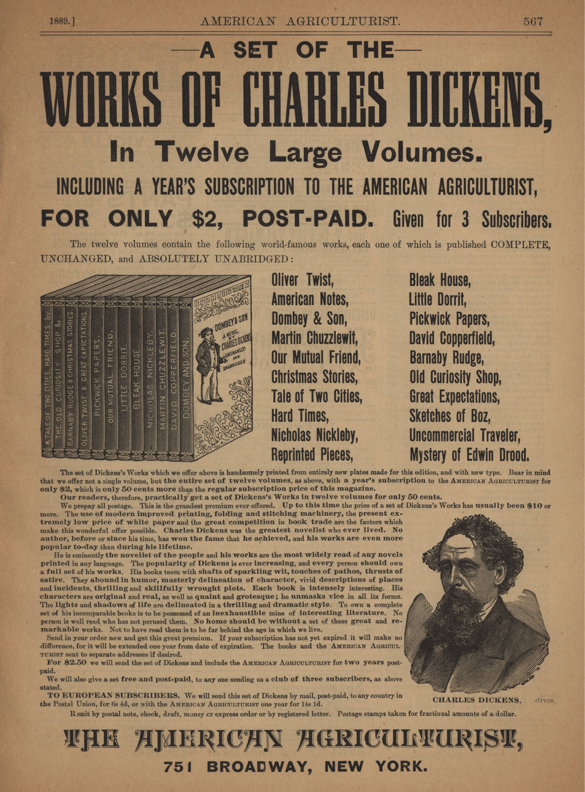
AMERICAN AGRICULTURIST
1889.]
INCLUDING A YEAR'S SUBSCRIPTION TO THE AMERICAN AGRICULTURIST, FOR ONLY $2, POST-PAID. Given for 3 Subscribers.
The twelve volumes contain the following world-famous works, each one of which is published COMPLETE, UNCHANGED, and ABSOLUTELY UNABRIDGED:
The set of Dickens's Works which we offer above is handsomely printed from entirely new plates made for this edition, and with new type. Bear in mind that we offer not a single volume, but the entire set of twelve volumes, as above, with a year's subscription to the AmERicAN AGRIcuLTuRIsT for only $2, which is only 50 cents more than the regular subscription price of this magazine. Our readers, therefore, practically get a set of Dickens's Works in twelve volumes for only 50 cents. We prepay all postage. This is the grandest premium ever offered. Up to this time the price of a set of Dickens's Works has usually been $10 or more.The use of modern improved printing, folding and stitching machinery, the present ex- tremely low price of white paper and the great competition in book trade are the factors which make this wonderful offer possible. Charles Dickens was the greatest novelist who ever lived. No author, before or since his time, has won the fame that he achieved, and his works are even more popular to-day than during his lifetime. He is eminently the novelist of the people and his works are the most widely read of any novels printed in any language. The popularity of Dickens is ever increasing, and every person should own a full set of his works. His books teem with shafts of sparkling wit, touches of pathos, thrusts of satire. They abound in humor, masterly delineation of character, vivid descriptions of places and incidents, thrilling and skillfully wrought plots. Each book is intensely interesting. His characters are original and real, as well as quaint and grotesque; he unmasks vice in all its forms. The lights and shadows of life are delineated in a thrilling and dramatic style. To own a complete set of his incomparable books is to be possessed of an inexhaustible mine of interesting literature. No person is well read who has not perused them. No home should be without a set of these great and re- markable works. Not to have read them is to be far behind the age in which we live. Send in your order now and get this great premium. If your subscription has not yet expired it will make no difference, for it will be extended one year from date of expiration. The books and the AMERICAN AGRICUL TURIST sent to separate addresses if desired. For $2.50 we will send the set of Dickens and include the AMERICAN AGRICuLTURIsT for two years post-paid. We will also give a set free and post-paid, to any one sending us a club of three subscribers, as above stated. TO EUROPEAN SUBSCRIBERS. We will send this set of Dickens by mail, post-paid, to any country in CHARLES DICKENS. the Postal Union, for 6s 4d, or with the AMERICAN AGRICuLTURIST one year for 14s 1d. Ramit by postal note, check, draft, money cr express order or by registered letter. Postage stamps taken for fractional amounts of a dollar.
PENDING — the worker run has not reached this page yet. Re-run make_review.py as the run progresses to fill it in.
PENDING — the worker run has not reached this page yet. Re-run make_review.py as the run progresses to fill it in.
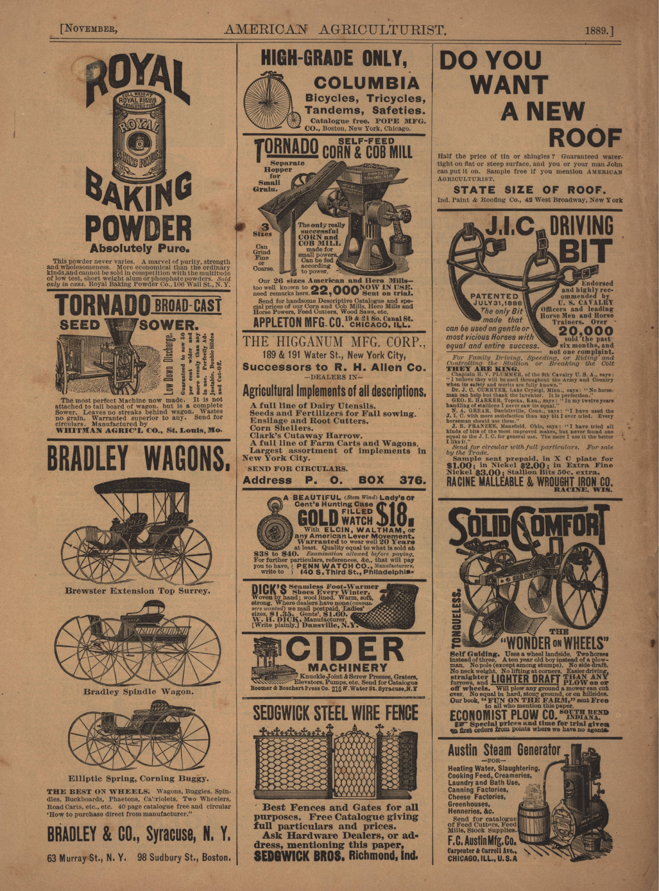
ROYAL BAWING
ABSOLUTELY PUR Tandems, Safeties.
Catalogue free. POPE MFG.
CO., Boston, New York, Chicago.
SELF-FEED
Half the price of tin or shingles? Guaranteed water-
tight on flat or steep surface, and you or your man John Hopper can put it on. Sample free if you mention AMERICAN for AGRICULTURIST. Small Grain. STATE SIZE OF ROOF. Ind. Paint & Roofing Co., 42 West Broadway, New York
This powder never varies. A marvel of purity, strength and wholesomeness. More economical than the ordinary kinds,and cannot be sold in comnpetition with the multitude of low test, short weight alum or phosphate powders. Sold only in cans. Royal Baking Powder Co., 106 Wall St., N. Y.
TORNADOBROAD-CAST SEED TOANASOWER. Gunr goore ev eanyadl o. pere e le ndn ed pd dBusehne Dee Dides
The most perfect Machine now made. It is not attached to tail board of wagon. but is a complete Sower. Leaves no streaks behind wagon. Wastes no grain. Warranted superior to any. Send for circulars. Manufactured by WHITMAN AGRIC'L CO., St. Louis, Mo.
The only really successful SizesCORNand COB MILL Can made for Grindsmall powers FineCan be fed or according Ooarse. to power. Our 26 sizes American and Hero Mills- need remarks here. Send for handsome Descriptive Catalogue and special prices of our Corn and Oob Mills, Hero Mills and Horse Powers, Feed Cutters, Wood Saws, ete. 19 & 21 So. Canal St.
-DEALERS IN-
A full line of Dairy Utensils. Seeds and Fertilizers for Fall sowing. Ensilage and Root Cutters. Corn Shellers. Clark's Cutaway Harrow. A full line of Farm Carts and Wagons. Largest assortment of implements in New York City. SEND FOR CIRCULARS.
P. 0.
BEAUTIFUL (Stem Wind) Lady's or Cent's Hunting Case FILLED
With ELCIN, WALTHAM, or any American Lever Movement. Warranted to wear well 20 Years at least. Quality equal to what is sold at S38 to S40. Examination allowed before paying. For further particulars, references, &o., that will pay you to have, ? PENN WATCH CO., Manufacturers, write to 140 S.Third St., Phlladelphia
Seamless Foot-Warmer
Woven by hand; wool lined. Warm, soft, strong. Where dealers have none(canvas. sers wanted) we mail postpaid. Ladies' sizes, $1.35. Gents', S1.60.
W. H. DICK, Manufacturer, [Write plainly.] Dansville, N.Y
Endorsed and highly rec-PATENTED ommended by JULY31,1888 U.S.CAVALRY Officers and leading The only BitHorse Men and Horse made that Trainers. Over can be used on gentle or 20,000 most vicious Horses with sold the past six months, and equal and entire success. not one complaint. For Family Driving, Speeding, or Riding and Controlling the Stallion or Breaking the Colt THEY ARE KING. Chaplain H. V. PLUMMER, of the 9th Cavalry U. S. A., says: "I believe they will be used throughout the Army and Country when its safety and merits are fully known." Dr. J. C. CURRYER, Lake Crystal, Minn., says: " No horse. man can help but thank the inventor. It is perfection." GEO. E. HARKER, Topeka, Kan., says: " In my twelve years handling of stallions I never saw its equal."
N.A. GREAR, Danielsville, Conn, says: "I have used the
J. I. C. with more satisfaction than any bit I ever tried. Every horseman should use them."
J. B. FRANZEE, Manstield, Ohio, says: "I have tried all kinds of bits of the most improved makes, but never found one equal to the J. I. C. for general use. The more I use it the better I likeit." Send for circular with full particulars. For sale by the Trade. Sample sent prepaid, in X C plate for $1.00; in Nickel $2.00; in Extra Fine Nickel $3.00; Stallion Bits 50c. extra. RACINE MALLÉABLE & WROUGHT IRON CO.
RACINE, WIS.
Elliptic Spring, Corning Buggy. THE BEST ON WHEELS. Wagons, Buggies, Spin- dles, Buckboards, Phaetons, Cabriolets, Two Wheelers, Road Carts, etc., etc. 40 page catalogue free and circular 'How to purchase direct from manufacturer."
MACHINERY Knuckle Joint & Screw Presses, Graters, Elevators, Pumps, ete. Send for Catalogue Boomer & Boschert Press Co. 216W.Water St.Syracuse,N.Y
Best Fences and Gates for all purposes. Free Catalogue giving full particulars and prices. Ask Hardware Dealers, or address, mentioning this paper,
THE
Self Guiding.Uses a wheel landside. Two horses instead of three.A ten year old boy instead of a plow- man. No pole (except among stumps). No side draft.
furrows, and PLOW on or off wheels. Will plow any ground a mower ean cut over. No equal in hard, stong ground, or on hillsides. Our book, "FUN ON THE FARM," sent Free to all who mention this paper. SOUTH BEND
Special prices and time for trial given en first orders from points where we have no agenta
-FOR-Heating Water, Slaughtering, Cooking Feed, Creameries, Laundry and Bath Use, Canning Factories, Cheese Factories, Greenhouses, Henneries, &c. Send for catalogue of Feed Cutters, Feed Mills, Stock Supplies.
F.C.AustinMfg.Co. Carpenter & Carroll Ave., CHICAGO,ILL., U.S.A
PENDING — the worker run has not reached this page yet. Re-run make_review.py as the run progresses to fill it in.
PENDING — the worker run has not reached this page yet. Re-run make_review.py as the run progresses to fill it in.
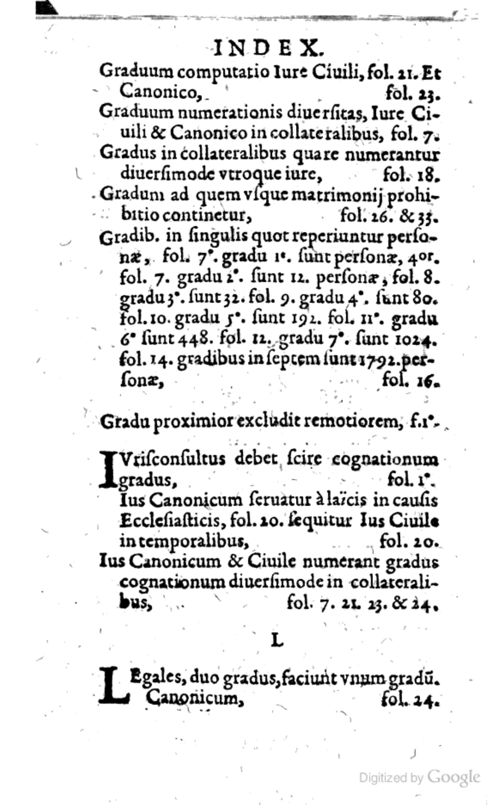
INDEX. Gradum computatio Iure Ciuili,fol. ai. Et Canonico,. fol. 23. Graduum numerationis diuerfitas, Iure Ciuili & Canonico in collateralibus, fol. 7. Gradus in collateralibus quare numerantur diuerfimode vtroque iure, fol. 18.. Gradun ad quem víque matrimonij prohi- bitio continetur,fol. 26. &35. Gradib. in fingulis quot reperiuntur perfonx, fol. 7°. gradu 1. fünt perfonx, 4or. fol. 7. gradu r'. funt 12. perfona, fol. 8. gradu. funt32.fol. 9. gradu 4'. funt 8o. fol.1o. gradu. funt 192. fol. n. gradu 6° funt 448. fol. 11. gradu 7°. funt 1024. fol. 14. gradibusinfeptemtunt1792.per- fonz, fol, 16. Gradu proximior excludit remotiorem, f.*. Vrifconfultus debet fcire cognationum gradus, fol. 1°. Ius Canonicum feruatur àlaäcis in caufis Ecclefiafticis, fol. zo. fequitur Ius Ciuile fol. 20. intemporalibus, Ius Canonicum & Ciuile numerant gradus cognationum diuerfimode in collateralibus, fol. 7. 21 23, & i4. L
Digilized by Google
PENDING — the worker run has not reached this page yet. Re-run make_review.py as the run progresses to fill it in.
PENDING — the worker run has not reached this page yet. Re-run make_review.py as the run progresses to fill it in.
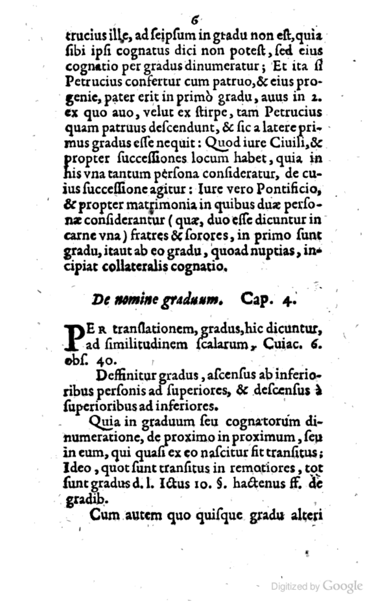
6 truciusille, ad feipfum in gradu non eft,quia fibi ipfi cognatus dici non poteft, fed eius cognatio per gradus dinumeratur; Et ita f Petrucius confertur cum patruo,& eius pro- genie, pater erit in primò gradu, auus in 2. ex quo auo, velut ex ftirpe, tam Petrucius quam patruus defcendunt, & fic a latere pri- mus gradus effe nequit: Quod iure Ciuili,& propter fucceffiones locum habet, quia in his vna tantum pérfona confideratur, de cu- ius fucceffione agitur: Iure vero Pontificio, & propter matrimonia in quibus dux perfo- na confiderantur ( qux, duo effe dicuntur in carne vna) fratres & forores, in primo funt gradu, itaut ab co gradu, quoad nuptias, in- cipiat collateralis cognatio. De nomine graduum. Cap. 4. DE R tranflationem, gradus,hic dicuntur, ad fimilitudinem fcalarum, Cuiac. 6. obf. 40. Deffinitur gradus, afcenfus ab inferio- ribus perfonis ad fuperiores, & defcenfus à fuperioribusadinferiores. Quia in graduum feu cognatorúm di- numeratione, de proximo in proximum, feu in eum, qui quafi ex eo nafcitur fit tranfitus; Ideo, quot funt tranfitus in remotiores, tot funt gradus d. I. Itus 1o.. haétenus ff. de gradib. Cum autem quo quifque gradu alteri
Digilized by Google
PENDING — the worker run has not reached this page yet. Re-run make_review.py as the run progresses to fill it in.
PENDING — the worker run has not reached this page yet. Re-run make_review.py as the run progresses to fill it in.
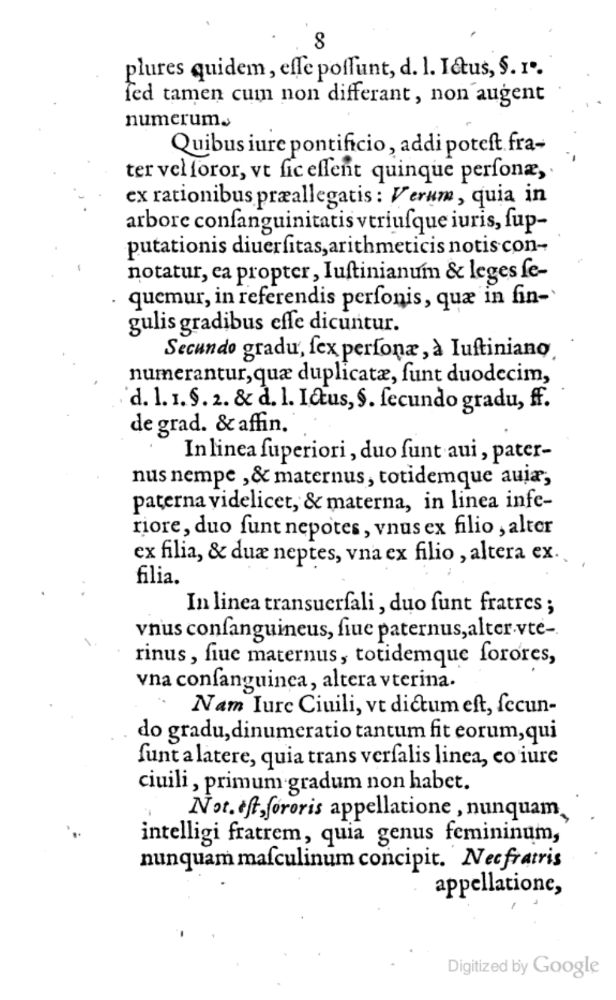
8 plures quidem, effe poffunt, d. 1. Iéus,. 1. fed tamen cum non differant, non augent numerum. Quibus iure pontificio, addi poteft fra- ter vel foror, vt fic efleñt quinque perfong, ex rationibus præallegatis: Veramw, quia in arbore confanguinitatisvtriufque iuris, fup- putationis diuerfitas,arithmeticis notiscon- notatur, ca propter, Iuftinianuím & leges fe- quemur, in referendis perfonis, qux in fin- gulis gradibus effe dicuntur. Seeunde gradu, fex perfonx, à Iuftiniano. numerantur,qua duplicatx, funt duodecim,
d. 1.1.. .& d.1. Ius,. fccundo gradu, ff. de grad. & affin. In linea fuperiori, duo funt aui, paternus nempe ,& maternus, totidemque auia, paterna videlicet, & materna, in linea infe- riore, duo funt nepotes, vnus ex filio, alter ex filia, & dux neptes, vna ex filio, altera ex. filia. In linea transucrfali, duo funt fratres; vnus confanguineus, fiue paternus,alter-vte- rinus, fiue maternus, totidemque forores, vna confanguinea, altera vterina. Nam Iure Ciuili, vt dictum eft, fecun- do gradu,dinumcratio tantum fit eorum,qui funt a latere, quia trans verfalis linea, eo iure ciuili, primum gradum non habet. Not.ef,fororis appellatione, nunquam intelligi fratrem, quia genus femininum, nunquam mafculinum concipit. Neefratris
appellatione,
Digilized by Google
PENDING — the worker run has not reached this page yet. Re-run make_review.py as the run progresses to fill it in.
PENDING — the worker run has not reached this page yet. Re-run make_review.py as the run progresses to fill it in.
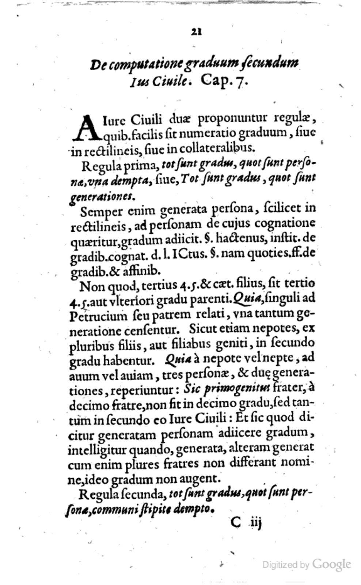
21 Decomputatione graduum fecundum 1us Ciuile. Cap.7. Iure Ciuili dux proponuntur regule, Aquib.acils fitnumeratio graduum, fiue inretilineis,fue in collateralibus. Regulaprima graq e na,vna dempa, e,Tot un gradus ,quot unt generationei. Semper enim generata perfona, fcilicet in reétilineis, ad perfonam de cujus cognatione quzritur,gradum adiicit.. haenus, inftit.de
gradib.& affinib. Non quod,tertius 4..&ct.flius, fit tetio
4.aut vlteriori gradu parenti.Qa,finguli ad Petrucium feu patrem relati, vna tantum ge- neratione cenfentur. Sicut etiam nepotes, ex pluribus filiis, aut filiabus geniti, in fecundo gradu habentur. Qaia à nepote velnepte, ad auum vel auiam, tres perfone, & duę genera- tiones, reperiuntur: Sic primogenitt frater,à decimo fratre,non fit in decimo gradu,fed tantum in fecundo eo Iure Ciuili: Et fic quod di- citur generatam perfonam adiicere gradum, intelligitur quando, generata, alteram generat cum enim plures fratres non differant nomi- ne,ideo gradum non augent. Regulaunda,tt n gradqut pr ena communi ftipite dempto.
C ij Digilized by Google
PENDING — the worker run has not reached this page yet. Re-run make_review.py as the run progresses to fill it in.
PENDING — the worker run has not reached this page yet. Re-run make_review.py as the run progresses to fill it in.
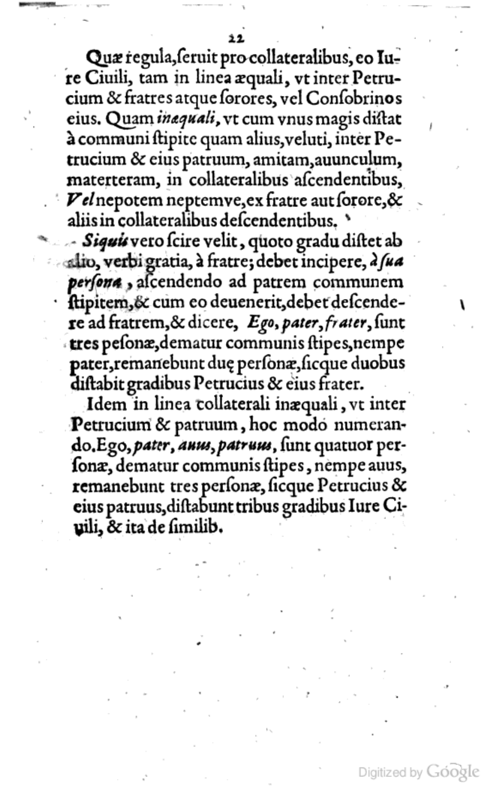
22 Qux regula,feruit procollateralibus,co Iure Ciuili, tam in linea aquali, vtinter Petrucium & fratres atque forores, vel Confobrinos eius. Quam intaguali, vt cum vnus magis diftat à communi ftipíte quam alius,veluti, intèr Petrucium & eius patruum, amitam,auunculum, materteram, in collateralibus afcendentibus, Velnepotem neptemve,ex fratre autforore,& aliisin collateralibus defcendentibus, Siguivero fcire velit, quoto gradu diftet ab alio, verbigratia, à fratre; debet incipere, asua persere, afcendendo ad patrem communem ftipitem,& cum eo deuenerit,debet defcende- re ad fratrem,& dicere, Ego, pater,frater, funt tres pefona,dematur communis ftipes,nempe pater,remanebunt duę perfone,ficque duobus diftabit gradibus Petrucius & eius frater. Idem in linea tollaterali inæquali, vt inter Petrucium & patruum, hoc modó numcran- do.Ego, pater, auus, patruss, funt quatuor per- fonæ, dematur communis ftipes, nempe auus, remanebunt tres perfonzæ, ficque Petrucius & eius patruus,diftabunttribus gradibus Iure Ci- vili, & ita de fimilib.
Digilized by Góogle
PENDING — the worker run has not reached this page yet. Re-run make_review.py as the run progresses to fill it in.
PENDING — the worker run has not reached this page yet. Re-run make_review.py as the run progresses to fill it in.
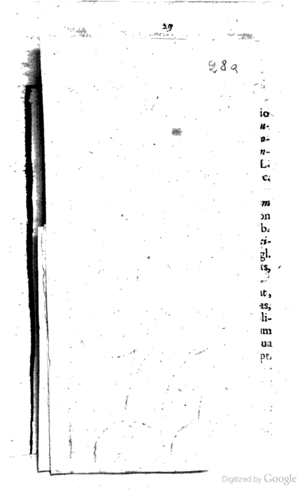
bsb u pt
Digilized by Google
PENDING — the worker run has not reached this page yet. Re-run make_review.py as the run progresses to fill it in.
PENDING — the worker run has not reached this page yet. Re-run make_review.py as the run progresses to fill it in.
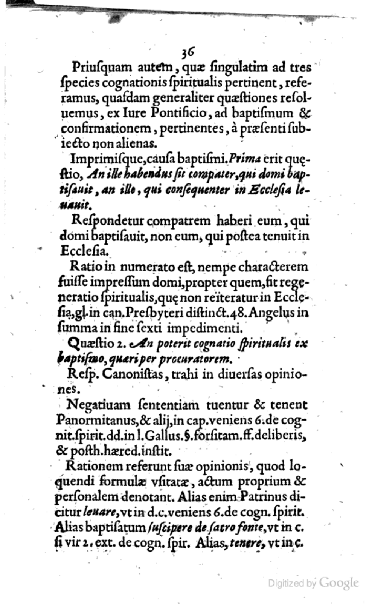
36 Priufquam autem, que fingulatim ad tres fpecies cognationis fpiritualis pertinent, refe- ramus, quafdam generaliter quxftiones refol- uemus, ex Iure Pontificio, ad baptifmum & confirmationem, pertinentes, à præfenti fub- ictto non alienas. Imprimifque,caufa baptifmi,Prima crit quę- ftio, An ille habendus it coapater,qui domi bap- tisauit, an ille, qus consequenter in Ecclefia le- sauit. Refpondetur compatrem haberi cum, qui domibaptifauit, non cum, qui poftea tenuitin Ecclefia. Ratioin numerato eft, nempe characterem fuiffe impreffum domi,propter quem,fit rege- neratiofpiritualis,quęnon reiteraturin Ecclefia,glin can.Prefbyteri diftinćt.48.Angelus in fumma in fine fexti impedimenti. Quxftio 2.An poterit cognatio fpiritualis ex baptifo,quariper procuratorem. Refp. Canoniftas, trahi in diuerfas opinio- nes. Negatiuam fententiam tuentur & tenent Panormitanus,& alij,in cap.veniens 6.de cog- nit.fpirit.dd.inl.Gallus..forfitam.ff.deliberis, &pofth.hæred.inftit. Rationem referunt fux opinionis, quod lo- quendi formulz vfitate, aćtum proprium & perfonalem denotant. Alias enim Patrinus di- citur leuare,vtin d.c.veniens 6.de cogn. fpirit. Alias baptifatum /uscipere de satre fonre,vt in c. fivir ext. decogn.fpir. Alias,tenere,tinc.
Digized by Google
PENDING — the worker run has not reached this page yet. Re-run make_review.py as the run progresses to fill it in.
PENDING — the worker run has not reached this page yet. Re-run make_review.py as the run progresses to fill it in.
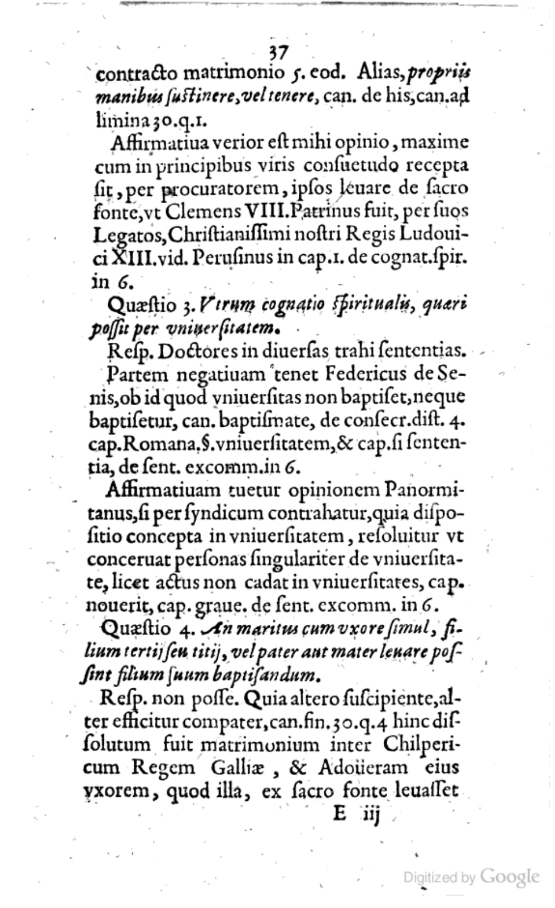
37 contrato matrimonio s. cod. Alias,propriis manibus suitinere,veltenere, can. de his,can.ad liminazo.q.1. Affirmatiua verior eftmihi opinio, maxime cum in principibus viris confuetudo recepta fit,per procuratorem, ipfos Jeuare de facro fonte,vt Clemens VIII.Patrinus fuit, per fuos Legatos,Chriftianiffimi noftri Regis Ludoui- ci XIII.vid. Perufinus in cap.1. de cognat.fpir. in 6. Quxtio 3.Vtrum cognatio fpiritualis, quari poffi per vninerfitatem. Refp. Doêtores in diuerfas trahi fententias. Partem negatiuam 'tenet Federicus de Se- nis,ob id quod yniuerfitas non baptifet,neque baptifetur, can. baptifnate, de confecr.dift. 4. cap.Romana,.vniuerfitatem,&cap.fifenten- tia, de fent. excomm.in 6. Affirmatiuam tuetur opinionem Panormi- tanus,fi perfyndicum contrahatur,quia difpo- fitio concepta in vniuerfitatem, refoluitur vt conceruat perfonas fingulariter de yniuerfita- te, licet aus non cadat in vniuerfitates, cap. nouerit, cap- graue, de fent. excomm. in 6. Quxtio 4. An maritus cum vxore simul, fi- liumtrtietti,vel pateratmaterlenareo fint flium [uum baptifandum. Refp. non poffe. Quia altero fufcipiente,al- ter efficitur compater,can.fin.3o.q.4 hincdif- folutum fuit matrimonium inter Chilperi- cum Regem Gallix, & Adoüeram cius yxorem, quod illa, ex facro fonte lcuaffet E 可j
Diglilized by Google
PENDING — the worker run has not reached this page yet. Re-run make_review.py as the run progresses to fill it in.
PENDING — the worker run has not reached this page yet. Re-run make_review.py as the run progresses to fill it in.
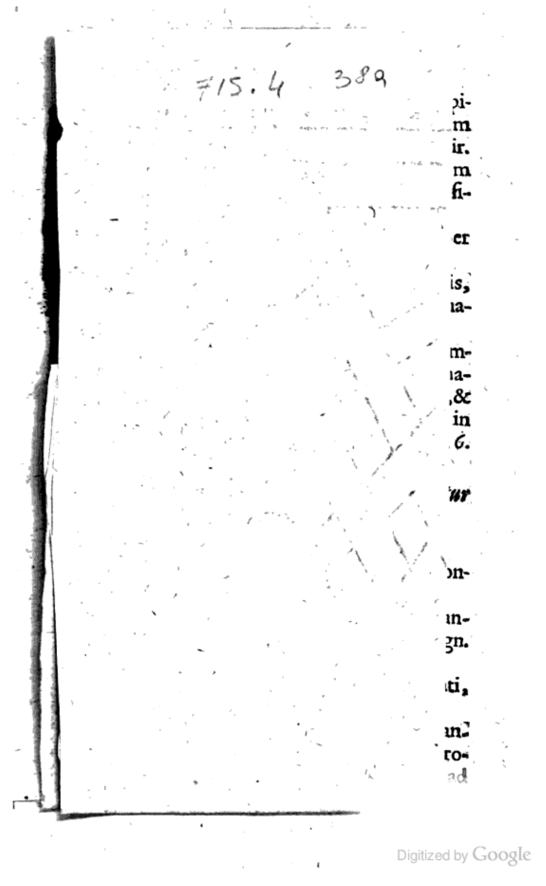
w
Digilized by Google
PENDING — the worker run has not reached this page yet. Re-run make_review.py as the run progresses to fill it in.
PENDING — the worker run has not reached this page yet. Re-run make_review.py as the run progresses to fill it in.
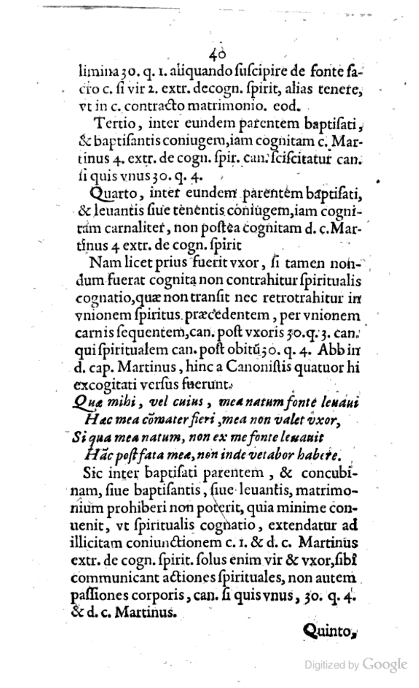
40 liminazo. q. 1. aiiquandofufcipire de fonte fa- cio c. fi vir z. extr. decogn. fpirit, alias tenete, vt in c. contracto matrimonio. eod. Tertio, inter eundem parentem baptifati, & baptifantis coniuger,iam cognitam c. Martinus 4, extr. de cogn. fpir. canfcifcitatur can. fi quis vnus zo. q. 4. Quarto, inter eundemr parentèm baptifati, ¿c leuantis fiue tènentis coniugem,iam cogni- tim carnaliter, non poftea cognitam d. c.Martinus 4 extr. de cogn. fpirit Nam licet prius fuerit vxor, fi tamen non- dum fuerat cognita non contrahitur fpiritualis cognatio,guxnontranfit nec retrotrahitur in vnionem fpiritus. præcedentem, per vnionem carnis fequentem,can. poft vxoris zo.q.3. can. quifpiritualem can.poft obitúzo. q. 4. Abb in
d. cap. Martinus, hinc a Canoniftis quatuor hi excogitati verfus fuerunt Qug mibi, vel cuius, meanatum fonte leuáui Hac mea comater fieri mea non valet ixor, Si qua meanatum, non ex me fonte leuanit Hac poftfata mea,nin inde vetabor habire. Sic inter baptifati parentem, & concubí- nam, fiue baptifantis, fiue lcuantis, matrimo- nium prohiberi non potçrit, quia minime con- uenit, vt fpiritualis cognatio, extendatur ad illicitam coniunctionem c. i. & d. c. Martinus extr. de cogn. fpirit. folus enim vir & vxor,fibf communicant actiones fpirituales, non autem paffiones corporis, can. quis vnus, 3o. q. 4. & d. c. Martinus.
Quinto, Digilized by Google
PENDING — the worker run has not reached this page yet. Re-run make_review.py as the run progresses to fill it in.
PENDING — the worker run has not reached this page yet. Re-run make_review.py as the run progresses to fill it in.
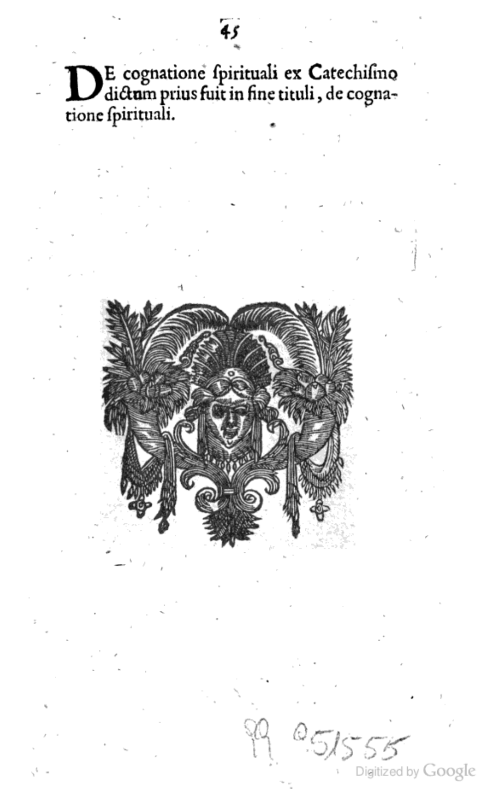
dim priusutin fetili, decogna- tione fpirituali.
甲
PENDING — the worker run has not reached this page yet. Re-run make_review.py as the run progresses to fill it in.
PENDING — the worker run has not reached this page yet. Re-run make_review.py as the run progresses to fill it in.
PENDING — the worker run has not reached this page yet. Re-run make_review.py as the run progresses to fill it in.
PENDING — the worker run has not reached this page yet. Re-run make_review.py as the run progresses to fill it in.
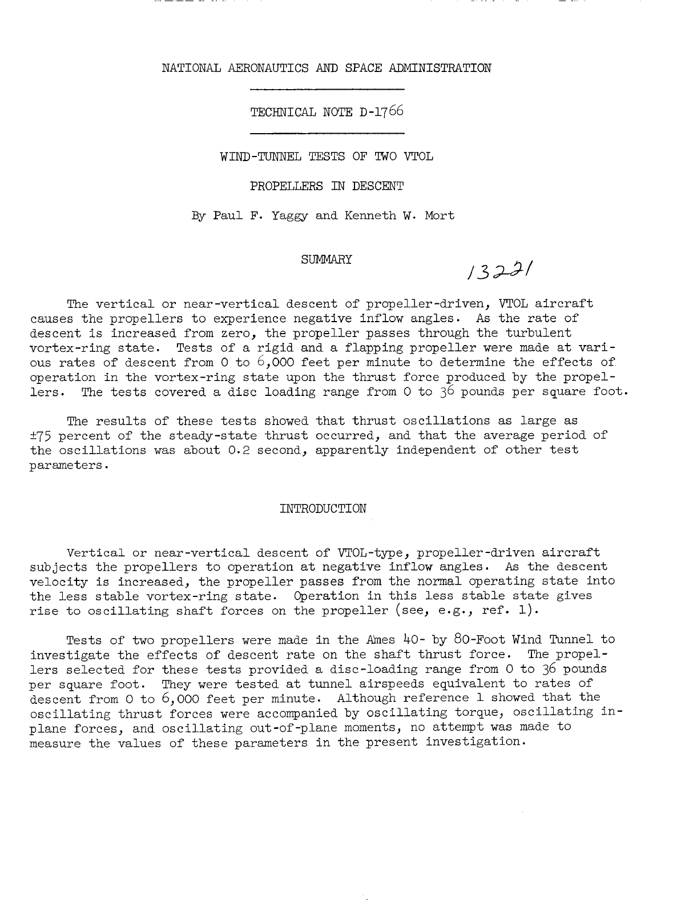
PENDING — the worker run has not reached this page yet. Re-run make_review.py as the run progresses to fill it in.
PENDING — the worker run has not reached this page yet. Re-run make_review.py as the run progresses to fill it in.
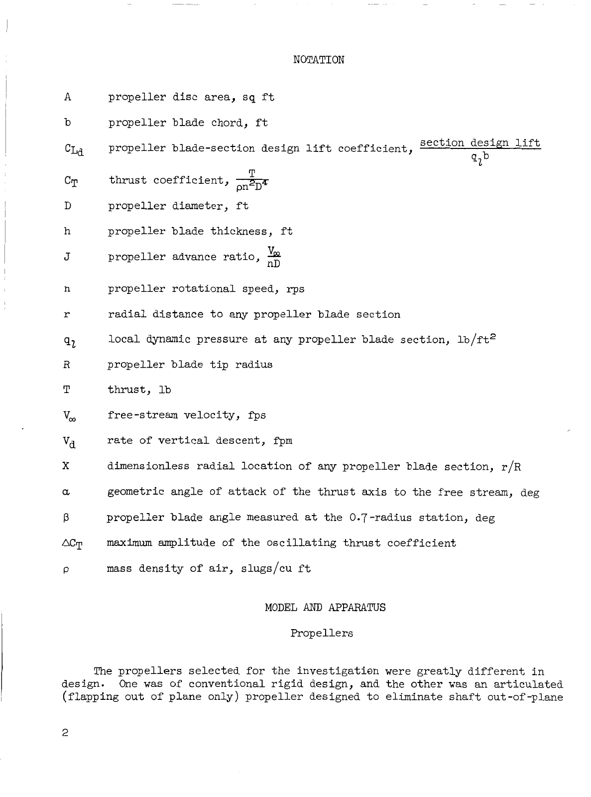
PENDING — the worker run has not reached this page yet. Re-run make_review.py as the run progresses to fill it in.
PENDING — the worker run has not reached this page yet. Re-run make_review.py as the run progresses to fill it in.
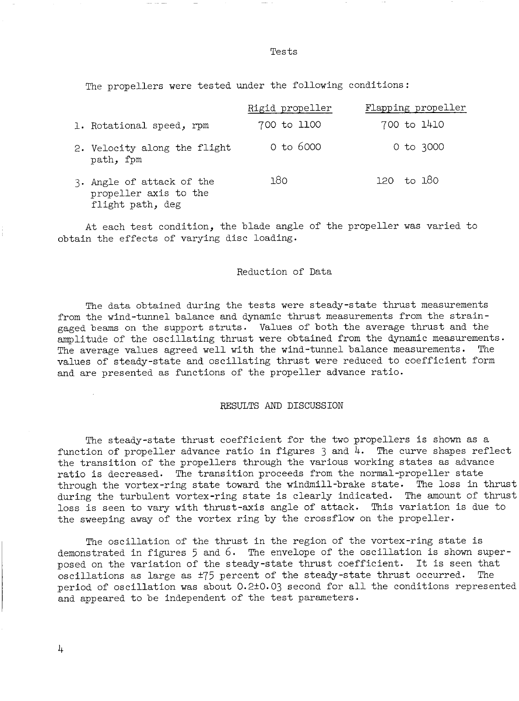
PENDING — the worker run has not reached this page yet. Re-run make_review.py as the run progresses to fill it in.
PENDING — the worker run has not reached this page yet. Re-run make_review.py as the run progresses to fill it in.
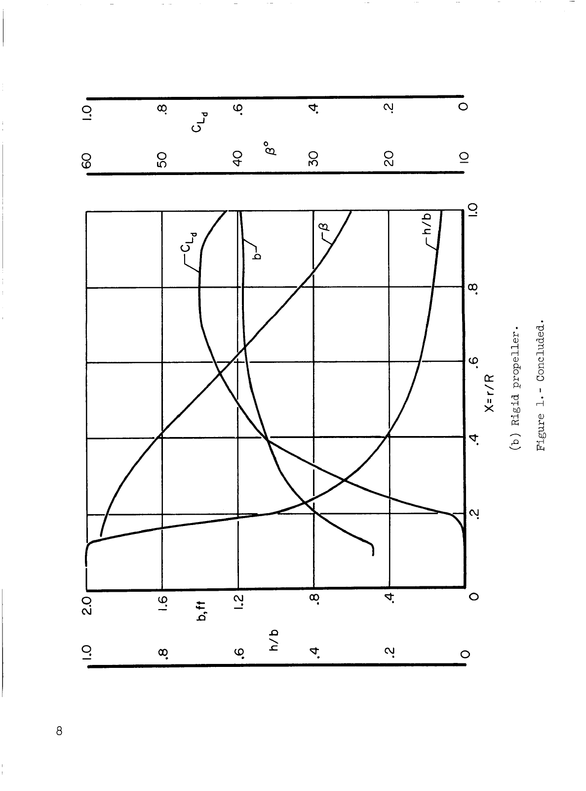
o
|8.|6.|4.|2||
|---|---|---|---|---|
||b||||
|||||8|
|||||6|
|||8|4.|o|
|8.|6.|4.|2||
10 PO 3 60 50 40 30 20 0
9.
Cq/u CLO
X/R 4
16 12 20 51 9/4 190 lo
PENDING — the worker run has not reached this page yet. Re-run make_review.py as the run progresses to fill it in.
PENDING — the worker run has not reached this page yet. Re-run make_review.py as the run progresses to fill it in.